Quảng cáo đối thủ · khoa-hoc-chung-khoan
Meta Ad Library (Việt Nam) · chỉ QC đang chạy · ngày tham chiếu 22/11/2026 10:49 · 1000 QC, 454 creative, 42 đối thủ có QC
Độ phủ & cách đọc bằng chứng
1000 quảng cáo · 454 nhóm mẫu thiết kế · 42 fanpage có dữ liệu. Mẫu được gộp bằng hình ảnh, có thể gồm biến thể và cần kiểm tra thủ công. Tỷ lệ theo số quảng cáo chịu ảnh hưởng của việc triển khai nhiều bản; hãy đối chiếu số mẫu và từng công ty.
Ngày tham chiếu: 22/11/2026 10:49. Đây là thời điểm tính trạng thái và cửa sổ thời gian, không xác nhận thời điểm crawl từng tài khoản. Không thấy trong dữ liệu ≠ không chạy quảng cáo. Phạm vi phụ thuộc danh sách tài khoản đã chọn; có thể thiếu agency, tài khoản phụ và nội dung không tải được.
Quan sát: nội dung, CTA, điểm đến, thời gian và số bản. Suy luận: mục tiêu chiến dịch, vai trò phễu. Giả thuyết cần thử: tác động đến eKYC, nạp tiền và giao dịch. Không có dữ liệu để xác nhận CPA, ngân sách hoặc hiệu quả.
Nhóm Đào tạo chứng khoán (học viện / KOL)
Nhận định nhanh
- 14/16 đối thủ trong nhóm Đào tạo chứng khoán (học viện / KOL) đang chạy QC; Da Vinci Hồ Chí Minh - Học đầu tư chuyên nghiệp, Trần Hữu Chung không có QC nào lúc cào.
- Chạy nhiều nhất: Đặng Trọng Khang 29 QC (22%), Nguyễn Hữu Trí 27 QC (20%), Nguyễn Ngọc Nghĩa - AI Trading, CK phái sinh 24 QC (18%). Ba đối thủ này chiếm 61% số QC của nhóm.
- Loại chiến dịch (suy luận): Lead / chuyển đổi trên web 45%, Tin nhắn 26%, Lead form trên FB 19%.
- Đối thủ dồn vào 1 mục tiêu: LITADO - Money Master K100 100% Tin nhắn; Da Vinci Academy - Viện thực hành Đầu tư tài chính 100% Tin nhắn; Đặng Trọng Khang 86% Lead form trên FB; Nguyễn Hữu Trí 100% Lead / chuyển đổi trên web; Nguyễn Ngọc Nghĩa - AI Trading, CK phái sinh 96% Lead / chuyển đổi trên web và 2 đối thủ khác.
- Nguyễn Hữu Trí ra nhiều ý tưởng mới nhất: 27 mẫu mới trong 14 ngày (chạy thành 27 QC).
- QC sống lâu nhất: Bí Mật Đầu Tư Chứng Khoán 1417 ngày (Miễn phí / quà tặng, Ảnh đơn).
- Có QC nói về 0 phí giao dịch: Da Vinci Academy - Viện thực hành Đầu tư tài chính.
- Định dạng: Ảnh đơn 61%, Video 33%, Nhiều ảnh 3%.
- Trong 66 QC dẫn về web, 94% trang đích có Meta Pixel (chưa xác minh sự kiện hoặc mục tiêu tối ưu).
- Nhóm CTCK dùng đào tạo / sự kiện kéo khách: 370 QC (2.8 lần nhóm Đào tạo chứng khoán (học viện / KOL)), riêng Chứng khoán LPS có 344 QC. Mục tiêu chính: Cài app.
- Nhóm Khoá học tài chính / chứng chỉ (CFA, ACCA, BCTC): 363 QC (2.8 lần nhóm Đào tạo chứng khoán (học viện / KOL)), riêng Học viện Quản lý PACE - tài chính cho lãnh đạo có 91 QC. Mục tiêu chính: Tin nhắn.
- Nhóm Tham chiếu: đào tạo trading Forex / vàng: 133 QC (1.0 lần nhóm Đào tạo chứng khoán (học viện / KOL)), riêng SFVN - đầu tư hàng hoá có 60 QC. Mục tiêu chính: Tin nhắn.
- Nhóm Cảnh giác: nhóm "chuyên gia" có dấu hiệu lừa đảo: 2 QC (0.0 lần nhóm Đào tạo chứng khoán (học viện / KOL)), riêng "Chuyên gia chứng khoán: NCB" có 2 QC. Mục tiêu chính: Tin nhắn.
Loại chiến dịch (suy luận)
Nhận xét: 45% QC là Lead / chuyển đổi trên web, tức là nhóm này chủ yếu có CTA/đích đến liên quan đăng ký trên web; chưa xác nhận mục tiêu tối ưu. Hướng thứ hai là Tin nhắn (26%): kéo khách vào inbox để tư vấn.
Tầng phễu
Nhận xét: 89% QC được xếp tầng Chuyển đổi theo CTA/đích đến, tầng Nhận biết là 7%. Tỷ lệ này phản ánh số QC đang quan sát được, không phản ánh ngân sách hay vai trò nuôi dưỡng của nội dung.
Nhận biết = like trang, tương tác, video view · Cân nhắc = traffic về bài viết / landing / form ngoài · Chuyển đổi = cài app, lead form, tin nhắn, chuyển đổi web.
Trang đích
Nhận xét: 0% QC đưa thẳng về kho ứng dụng. Trong 66 QC dẫn về web, 94% trang có Meta Pixel, chỉ xác nhận phát hiện mã; chưa xác minh sự kiện hoặc mục tiêu tối ưu.
Định dạng
Nhận xét: Định dạng chủ lực là Ảnh đơn (61%).
Luồng chạy của nhóm Đào tạo chứng khoán (học viện / KOL)
Nhận xét: Công thức hay gặp nhất: chủ đề Nỗi đau thua lỗ → Lead / chuyển đổi trên web → Landing có form · svcorp.vn (19 QC, 14%). Muốn cạnh tranh trực diện thì đây là luồng cần so ưu đãi và trải nghiệm.
So sánh các nhóm
Nhận xét: Nhóm Đào tạo chứng khoán (học viện / KOL) trung bình 1,8 QC mỗi mẫu, nhóm CTCK dùng đào tạo / sự kiện kéo khách 7,3 QC mỗi mẫu. CTCK dùng đào tạo / sự kiện kéo khách tập trung nhiều QC vào ít thiết kế, còn Đào tạo chứng khoán (học viện / KOL) có nhiều mẫu khác nhau hơn. Mục tiêu chính: Đào tạo chứng khoán (học viện / KOL) là Lead / chuyển đổi trên web, CTCK dùng đào tạo / sự kiện kéo khách là Cài app.
| Nhóm | Đối thủ có QC | QC | Mẫu | Loại chiến dịch% số QC | Chủ đề hay dùng nhất |
|---|---|---|---|---|---|
| Đào tạo chứng khoán (học viện / KOL) | 14/16 | 132 | 73 | Lead / chuyển đổi trên web45% Tin nhắn26% Lead form trên FB19% + 3 loại khác 11% | Miễn phí / quà tặng |
| CTCK dùng đào tạo / sự kiện kéo khách | 5/5 | 370 | 51 | Cài app93% Traffic → landing3% Tương tác / video view3% + 3 loại khác 2% | Miễn phí / quà tặng |
| Khoá học tài chính / chứng chỉ (CFA, ACCA, BCTC) | 15/15 | 363 | 293 | Tin nhắn36% Lead form trên FB17% Lead / chuyển đổi trên web14% + 5 loại khác 33% | Miễn phí / quà tặng |
| Tham chiếu: đào tạo trading Forex / vàng | 7/10 | 133 | 35 | Tin nhắn36% Tương tác / video view35% Traffic → bài viết / PR13% + 4 loại khác 17% | Miễn phí / quà tặng |
| Cảnh giác: nhóm "chuyên gia" có dấu hiệu lừa đảo | 1/1 | 2 | 2 | Tin nhắn100% | Miễn phí / quà tặng |
So sánh Đào tạo chứng khoán (học viện / KOL)
Nhận xét: Nguyễn Hữu Trí có nhiều mẫu nhất (27 mẫu, 27 QC). Cũng là đối thủ ra nhiều mẫu mới nhất (27 trong 14 ngày). Nguyễn Ngọc Nghĩa - AI Trading, CK phái sinh giữ mẫu lâu nhất (4 mẫu chạy ≥ 30 ngày, một mẫu thường chạy 28 ngày): có mẫu được duy trì lâu, đáng xem trước. LITADO - Money Master K100 có nhiều QC liên quan trên mỗi mẫu nhất (×8,0); đây là tín hiệu triển khai rộng, không phải dữ liệu ngân sách. Da Vinci Hồ Chí Minh - Học đầu tư chuyên nghiệp, Trần Hữu Chung không chạy QC lúc cào.
| Đối thủ | Mẫu đang chạyvà tổng số QC | Mẫu mớibắt đầu trong 14 ngày | Mẫu thường chạymột nửa số mẫu chạy lâu hơn | Mẫu ≥ 30 ngàydấu hiệu mẫu hiệu quả | Mỗi mẫu chạytrung bình bao nhiêu QC | Loại chiến dịch% số QC, suy luận | Trang đích chính · ưu đãi | |
|---|---|---|---|---|---|---|---|---|
| Đặng Trọng Khang Học đầu tư bài bản | 2 7 QC | 2 | 6 ngày lâu nhất 11 | 0 | ×3,5 nhiều nhất ×4 | Tương tác / video view57% Lead / chuyển đổi trên web43% | Landing có form | Ad Library ↗ |
| Da Vinci Academy - Viện đào tạo thực hành | 1 1 QC | 1 | 2 ngày lâu nhất 2 | 0 | ×1,0 nhiều nhất ×1 | Traffic → landing100% | Landing có form | Ad Library ↗ |
| Quang Dũng DBD - Đọc vị dòng tiền | 2 2 QC | 1 | 8 ngày lâu nhất 16 | 0 | ×1,0 nhiều nhất ×1 | Tương tác / video view50% Lead / chuyển đổi trên web50% | Landing có form | Ad Library ↗ |
| Phạm Thành Biên - webinar dòng tiền, tích sản | 2 2 QC | 2 | 2 ngày lâu nhất 2 | 0 | ×1,0 nhiều nhất ×1 | Traffic → bài viết / PR50% Lead / chuyển đổi trên web50% | Bài viết / PR | Ad Library ↗ |
| LITADO - Money Master K100 | 2 16 QC | 2 | 6 ngày lâu nhất 9 | 0 | ×8,0 nhiều nhất ×8 | Tin nhắn100% | Messenger | Ad Library ↗ |
| Cộng đồng ProX | 1 1 QC | 1 | 4 ngày lâu nhất 4 | 0 | ×1,0 nhiều nhất ×1 | Tương tác / video view100% | Không có CTA | Ad Library ↗ |
| AFA Research & Education - vĩ mô ứng dụng | 1 1 QC | 1 | 1 ngày lâu nhất 1 | 0 | ×1,0 nhiều nhất ×1 | Tương tác / video view100% | Bài viết / PR | Ad Library ↗ |
| Da Vinci Academy - Viện thực hành Đầu tư tài chính | 6 6 QC | 4 | 7 ngày lâu nhất 25 | 0 | ×1,0 nhiều nhất ×1 | Tin nhắn100% | Messenger Phí: 0% | Ad Library ↗ |
| Sói già đầu tư - Da Vinci Academy | 1 1 QC | 0 | 15 ngày lâu nhất 15 | 0 | ×1,0 nhiều nhất ×1 | Tương tác / video view100% | Không có CTA | Ad Library ↗ |
| Da Vinci Hồ Chí Minh - Học đầu tư chuyên nghiệp | Không chạy QC tại thời điểm cào | Ad Library ↗ | ||||||
| Đặng Trọng Khang | 7 29 QC | 7 | 6 ngày lâu nhất 8 | 0 | ×4,1 nhiều nhất ×10 | Lead form trên FB86% Lead / chuyển đổi trên web14% | Trang Facebook | Ad Library ↗ |
| Nguyễn Hữu Trí | 27 27 QC | 27 | 5 ngày lâu nhất 10 | 0 | ×1,0 nhiều nhất ×1 | Lead / chuyển đổi trên web100% | Landing có form Margin: 8,3% | Ad Library ↗ |
| Nguyễn Ngọc Nghĩa - AI Trading, CK phái sinh | 8 24 QC | 2 | 28 ngày lâu nhất 47 | 4 | ×3,0 nhiều nhất ×6 | Lead / chuyển đổi trên web96% Tương tác / video view4% | Landing có form | Ad Library ↗ |
| Cole Quant VN | 12 12 QC | 6 | 11 ngày lâu nhất 44 | 3 | ×1,0 nhiều nhất ×1 | Tin nhắn100% | Messenger | Ad Library ↗ |
| Bí Mật Đầu Tư Chứng Khoán | 1 3 QC | 0 | 1417 ngày lâu nhất 1417 | 1 | ×3,0 nhiều nhất ×3 | Traffic → landing100% | Trang thông tin / sản phẩm | Ad Library ↗ |
| Trần Hữu Chung | Không chạy QC tại thời điểm cào | Ad Library ↗ | ||||||
Loại chiến dịch theo đối thủ
Mỗi ô = % số QC của đối thủ đó thuộc loại chiến dịch này (mỗi hàng cộng lại 100%). Ô càng đậm càng nhiều.
Nhận xét: Mỗi đối thủ chọn một hướng chính: Tương tác / video view: Đặng Trọng Khang Học đầu tư bài bản 57%, Quang Dũng DBD - Đọc vị dòng tiền 50%, Cộng đồng ProX 100%, AFA Research & Education - vĩ mô ứng dụng 100%, Sói già đầu tư - Da Vinci Academy 100%; Tin nhắn: LITADO - Money Master K100 100%, Da Vinci Academy - Viện thực hành Đầu tư tài chính 100%, Cole Quant VN 100%; Traffic → landing: Da Vinci Academy - Viện đào tạo thực hành 100%, Bí Mật Đầu Tư Chứng Khoán 100%; Lead / chuyển đổi trên web: Nguyễn Hữu Trí 100%, Nguyễn Ngọc Nghĩa - AI Trading, CK phái sinh 96%; Traffic → bài viết / PR: Phạm Thành Biên - webinar dòng tiền, tích sản 50%; Lead form trên FB: Đặng Trọng Khang 86%.
| Đối thủ | Lead form trên FB | Lead / chuyển đổi trên web | Tin nhắn | Traffic → landing | Traffic → bài viết / PR | Tương tác / video view |
|---|---|---|---|---|---|---|
| Đặng Trọng Khang Học đầu tư bài bản | 43% | 57% | ||||
| Da Vinci Academy - Viện đào tạo thực hành | 100% | |||||
| Quang Dũng DBD - Đọc vị dòng tiền | 50% | 50% | ||||
| Phạm Thành Biên - webinar dòng tiền, tích sản | 50% | 50% | ||||
| LITADO - Money Master K100 | 100% | |||||
| Cộng đồng ProX | 100% | |||||
| AFA Research & Education - vĩ mô ứng dụng | 100% | |||||
| Da Vinci Academy - Viện thực hành Đầu tư tài chính | 100% | |||||
| Sói già đầu tư - Da Vinci Academy | 100% | |||||
| Đặng Trọng Khang | 86% | 14% | ||||
| Nguyễn Hữu Trí | 100% | |||||
| Nguyễn Ngọc Nghĩa - AI Trading, CK phái sinh | 96% | 4% | ||||
| Cole Quant VN | 100% | |||||
| Bí Mật Đầu Tư Chứng Khoán | 100% |
Định dạng theo đối thủ
Mỗi ô = % số QC của đối thủ đó dùng định dạng này (mỗi hàng cộng lại 100%).
Nhận xét: Quang Dũng DBD - Đọc vị dòng tiền dùng video nhiều nhất (100% QC). LITADO - Money Master K100, Nguyễn Hữu Trí, Cole Quant VN, Bí Mật Đầu Tư Chứng Khoán gần như chỉ chạy ảnh đơn.
| Đối thủ | Ảnh đơn | Video | Nhiều ảnh | Dynamic (DCO) |
|---|---|---|---|---|
| Đặng Trọng Khang Học đầu tư bài bản | 57% | 43% | ||
| Da Vinci Academy - Viện đào tạo thực hành | 100% | |||
| Quang Dũng DBD - Đọc vị dòng tiền | 100% | |||
| Phạm Thành Biên - webinar dòng tiền, tích sản | 50% | 50% | ||
| LITADO - Money Master K100 | 88% | 12% | ||
| Cộng đồng ProX | 100% | |||
| AFA Research & Education - vĩ mô ứng dụng | 100% | |||
| Da Vinci Academy - Viện thực hành Đầu tư tài chính | 33% | 67% | ||
| Sói già đầu tư - Da Vinci Academy | 100% | |||
| Đặng Trọng Khang | 7% | 79% | 14% | |
| Nguyễn Hữu Trí | 85% | 15% | ||
| Nguyễn Ngọc Nghĩa - AI Trading, CK phái sinh | 75% | 25% | ||
| Cole Quant VN | 100% | |||
| Bí Mật Đầu Tư Chứng Khoán | 100% |
Nhịp tung QC mới theo tuần
Mỗi ô = số QC mới bắt đầu / số mẫu (hình) mà các QC đó dùng trong 7 ngày đó (chỉ tính QC còn đang chạy lúc cào). Màu đậm theo số mẫu. Một mẫu có thể là hình hoàn toàn mới hoặc hình cũ được chạy thêm QC; rê chuột vào ô để xem tách riêng. Cột đầu tiên bên phải là 7 ngày gần nhất, các cột khác ghi ngày đầu của mỗi đợt 7 ngày. Bấm vào ô để xem các mẫu đó.
Nhận xét: 7 ngày qua Nguyễn Hữu Trí tung nhiều nhất: 15 QC trên 15 mẫu (15 mẫu hoàn toàn mới). Đang tăng tốc ra mẫu mới (4 tuần gần đây nhiều hơn hẳn 4 tuần trước): Da Vinci Academy - Viện thực hành Đầu tư tài chính, Đặng Trọng Khang, Nguyễn Hữu Trí, Cole Quant VN. Không có mẫu mới nào trong 4 tuần: Bí Mật Đầu Tư Chứng Khoán, chỉ chạy lại mẫu cũ.
| Đối thủ | 31/08 | 07/09 | 14/09 | 21/09 | 28/09 | 05/10 | 12/10 | 19/10 | 26/10 | 02/11 | 09/11 | 7 ngày qua |
|---|---|---|---|---|---|---|---|---|---|---|---|---|
| Đặng Trọng Khang Học đầu tư bài bản | 1/1 | 6/2 | ||||||||||
| Da Vinci Academy - Viện đào tạo thực hành | 1/1 | |||||||||||
| Quang Dũng DBD - Đọc vị dòng tiền | 1/1 | 1/1 | ||||||||||
| Phạm Thành Biên - webinar dòng tiền, tích sản | 2/2 | |||||||||||
| LITADO - Money Master K100 | 8/1 | 8/1 | ||||||||||
| Cộng đồng ProX | 1/1 | |||||||||||
| AFA Research & Education - vĩ mô ứng dụng | 1/1 | |||||||||||
| Da Vinci Academy - Viện thực hành Đầu tư tài chính | 1/1 | 1/1 | 1/1 | 3/3 | ||||||||
| Sói già đầu tư - Da Vinci Academy | 1/1 | |||||||||||
| Đặng Trọng Khang | 5/4 | 24/7 | ||||||||||
| Nguyễn Hữu Trí | 12/12 | 15/15 | ||||||||||
| Nguyễn Ngọc Nghĩa - AI Trading, CK phái sinh | 2/2 | 5/4 | 1/1 | 16/6 | ||||||||
| Cole Quant VN | 3/3 | 3/3 | 3/3 | 3/3 | ||||||||
| Bí Mật Đầu Tư Chứng Khoán |
Hồ sơ từng đối thủ
Loại chiến dịch là suy luận từ nút CTA và trang đích; xem lý do ở tab Giới hạn dữ liệu.
Đặng Trọng Khang Học đầu tư bài bản
Đặng Trọng Khang Học đầu tư bài bản · 12 likeLoại chiến dịch → chủ đề → trang đích
Tầng phễu theo CTA/đích đến: Nhận biết 57% · Cân nhắc 0% · Chuyển đổi 43%. % tính trên số QC, không phải ngân sách hay kết quả chuyển đổi.
Nhận xét: Đặng Trọng Khang Học đầu tư bài bản chủ yếu chạy Tương tác / video view (57% QC), xoáy vào chủ đề Miễn phí / quà tặng và dẫn về Không có link.
Số mẫu có QC mới theo 7 ngày
Nhận xét: Đang tăng tốc: 2 mẫu mới trong 2 tuần gần nhất, so với 0 mẫu trong 4 tuần trước đó.
Ưu đãi trích từ caption (số QC)
Không thấy con số ưu đãi.
Mẫu có tín hiệu đáng chú ý · 2 / 2 mẫu
Xếp theo thời gian duy trì và số QC liên quan. Đây là tín hiệu về mức độ duy trì/triển khai, không phải bằng chứng về chi tiêu, tương tác trên bài hay hiệu quả kinh doanh.
Nhận xét: Mẫu có tín hiệu duy trì đáng chú ý nhất đã chạy 11 ngày với 4 QC: Ảnh đơn, chủ đề Miễn phí / quà tặng. 1/2 mẫu đứng đầu là video.

Khi bắt đầu đầu tư, biết vài khái niệm vẫn chưa đủ để tự đánh giá một cổ phiếu. Doanh nghiệp này tốt ở điểm nào? Mức giá hiện tại có hợp lý không? Rủi ro và cách phân bổ vốn đã được xem xét chưa? Tro…
Khi bắt đầu đầu tư, biết vài khái niệm vẫn chưa đủ để tự đánh giá một cổ phiếu. Doanh nghiệp này tốt ở điểm nào? Mức giá hiện tại có hợp lý không? Rủi ro và cách phân bổ vốn đã được xem xét chưa? Tro…
Trang đích
Nhận xét: 2 trang đích khác nhau, phần lớn là Landing có form. 2/2 trang web có Meta Pixel (có đo chuyển đổi).
Da Vinci Academy - Viện đào tạo thực hành
Da Vinci Academy- Viện đào tạo thực hành đầu tư tài chính Việt Nam · 3770 likeLoại chiến dịch → chủ đề → trang đích
Tầng phễu theo CTA/đích đến: Nhận biết 0% · Cân nhắc 100% · Chuyển đổi 0%. % tính trên số QC, không phải ngân sách hay kết quả chuyển đổi.
Nhận xét: Da Vinci Academy - Viện đào tạo thực hành chủ yếu chạy Traffic → landing (100% QC), xoáy vào chủ đề Webinar / sự kiện / hội thảo và dẫn về Landing có form · hocdautu.davinci.edu.vn.
Số mẫu có QC mới theo 7 ngày
Nhận xét: Nhịp ra mẫu đều: 1 mẫu mới trong 2 tuần gần nhất, 0 mẫu trong 4 tuần trước đó.
Ưu đãi trích từ caption (số QC)
Không thấy con số ưu đãi.
Mẫu có tín hiệu đáng chú ý · 1 / 1 mẫu
Xếp theo thời gian duy trì và số QC liên quan. Đây là tín hiệu về mức độ duy trì/triển khai, không phải bằng chứng về chi tiêu, tương tác trên bài hay hiệu quả kinh doanh.
Nhận xét: Mẫu có tín hiệu duy trì đáng chú ý nhất đã chạy 2 ngày với 1 QC: Ảnh đơn, chủ đề Webinar / sự kiện / hội thảo.
Trang đích
Nhận xét: 1 trang đích khác nhau, phần lớn là Landing có form. 0/1 trang web có Meta Pixel (không thấy đo chuyển đổi).
Quang Dũng DBD - Đọc vị dòng tiền
Quang Dũng DBD · 23571 likeLoại chiến dịch → chủ đề → trang đích
Tầng phễu theo CTA/đích đến: Nhận biết 50% · Cân nhắc 0% · Chuyển đổi 50%. % tính trên số QC, không phải ngân sách hay kết quả chuyển đổi.
Nhận xét: Quang Dũng DBD - Đọc vị dòng tiền chủ yếu chạy Tương tác / video view (50% QC), xoáy vào chủ đề Khác và dẫn về Không có link.
Số mẫu có QC mới theo 7 ngày
Nhận xét: Nhịp ra mẫu đều: 1 mẫu mới trong 2 tuần gần nhất, 1 mẫu trong 4 tuần trước đó.
Ưu đãi trích từ caption (số QC)
Không thấy con số ưu đãi.
Mẫu có tín hiệu đáng chú ý · 2 / 2 mẫu
Xếp theo thời gian duy trì và số QC liên quan. Đây là tín hiệu về mức độ duy trì/triển khai, không phải bằng chứng về chi tiêu, tương tác trên bài hay hiệu quả kinh doanh.
Nhận xét: Mẫu có tín hiệu duy trì đáng chú ý nhất đã chạy 16 ngày với 1 QC: Video, chủ đề Khác. 2/2 mẫu đứng đầu là video.
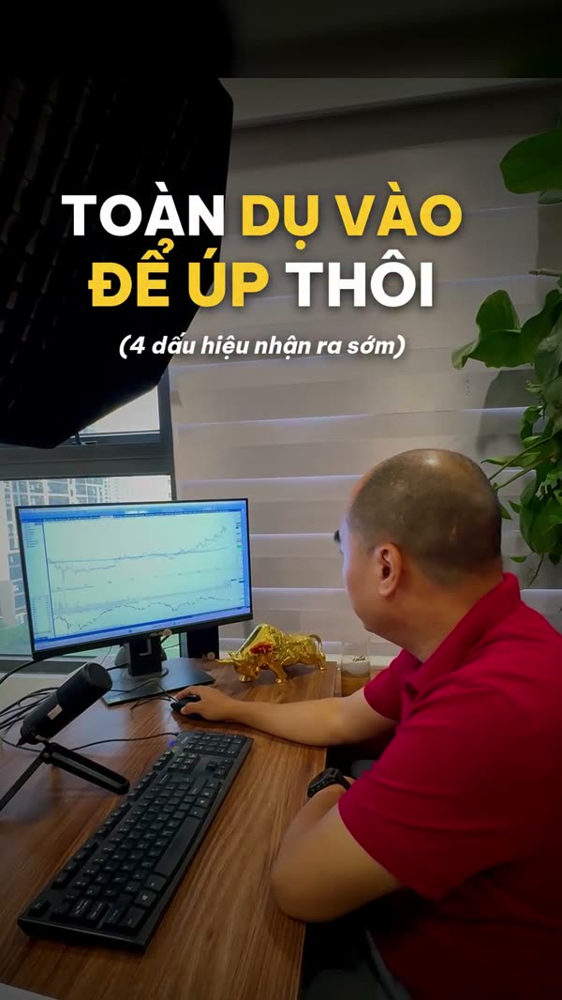
Toàn dụ vào để úp thôi: 4 dấu hiệu nhận ra sớm, trước khi mình thành người đỡ hàng. "Dụ vào để úp", nói cho dễ hiểu: người cầm nhiều cổ phiếu dùng chính lực mua của đám đông để bán ra. Muốn bán được …

Khi nào mua, khi nào bán, bạn đã có nguyên tắc của riêng mình chưa? Nhân ngày 20/11, cũng là sinh nhật của tôi, tôi dành ưu đãi tới 30% cho chương trình Đọc Vị Dòng Tiền Qua Mẫu Hình Biểu Đồ, khai gi…
Trang đích
Nhận xét: 1 trang đích khác nhau, phần lớn là Landing có form. 1/1 trang web có Meta Pixel (có đo chuyển đổi).
Phạm Thành Biên - webinar dòng tiền, tích sản
Phạm Thành Biên · 206535 likeLoại chiến dịch → chủ đề → trang đích
Tầng phễu theo CTA/đích đến: Nhận biết 0% · Cân nhắc 50% · Chuyển đổi 50%. % tính trên số QC, không phải ngân sách hay kết quả chuyển đổi.
Nhận xét: Phạm Thành Biên - webinar dòng tiền, tích sản chủ yếu chạy Traffic → bài viết / PR (50% QC), xoáy vào chủ đề Webinar / sự kiện / hội thảo và dẫn về Bài viết / PR · event.phamthanhbien.com.
Số mẫu có QC mới theo 7 ngày
Nhận xét: Đang tăng tốc: 2 mẫu mới trong 2 tuần gần nhất, so với 0 mẫu trong 4 tuần trước đó.
Ưu đãi trích từ caption (số QC)
Không thấy con số ưu đãi.
Mẫu có tín hiệu đáng chú ý · 2 / 2 mẫu
Xếp theo thời gian duy trì và số QC liên quan. Đây là tín hiệu về mức độ duy trì/triển khai, không phải bằng chứng về chi tiêu, tương tác trên bài hay hiệu quả kinh doanh.
Nhận xét: Mẫu có tín hiệu duy trì đáng chú ý nhất đã chạy 2 ngày với 1 QC: Video, chủ đề Webinar / sự kiện / hội thảo. 1/2 mẫu đứng đầu là video.
3 bước để giúp bạn trở nên giàu có Bước 1: Giữ lại 20% thu nhập mỗi tháng Bước 2: Đầu tư tích sản cổ phiếu Bước 3: Làm lặp lại bước số 2 liên tục tối thiểu 5 năm Đây là cơ hội vô cùng vô cùng tuyệt v…

Có vài mảnh đất trong tay, tổng giá trị tính ra không hề nhỏ. Nhưng nhiều tháng đăng bán vẫn không có người mua Hạ giá thì tiếc Giữ tiếp thì mỗi tháng vẫn phải tự xoay tiền cho sinh hoạt, trả nợ và nh…
Trang đích
Nhận xét: 2 trang đích khác nhau, phần lớn là Bài viết / PR. 2/2 trang web có Meta Pixel (có đo chuyển đổi).
LITADO - Money Master K100
LITADO - Trường Đào Tạo Cao Cấp Digital Marketing · 1687 likeLoại chiến dịch → chủ đề → trang đích
Tầng phễu theo CTA/đích đến: Nhận biết 0% · Cân nhắc 0% · Chuyển đổi 100%. % tính trên số QC, không phải ngân sách hay kết quả chuyển đổi.
Nhận xét: LITADO - Money Master K100 chủ yếu chạy Tin nhắn (100% QC), xoáy vào chủ đề Giá / học phí / ưu đãi và dẫn về Messenger. 100% QC hướng tới hành động chuyển đổi theo CTA/đích đến; cách phân loại này không khẳng định nội dung thiếu vai trò nuôi dưỡng.
Số mẫu có QC mới theo 7 ngày
Nhận xét: Đang tăng tốc: 2 mẫu mới trong 2 tuần gần nhất, so với 0 mẫu trong 4 tuần trước đó.
Ưu đãi trích từ caption (số QC)
| Hạn | 26/11 (8), 11/12 (8) |
Mẫu có tín hiệu đáng chú ý · 2 / 2 mẫu
Xếp theo thời gian duy trì và số QC liên quan. Đây là tín hiệu về mức độ duy trì/triển khai, không phải bằng chứng về chi tiêu, tương tác trên bài hay hiệu quả kinh doanh.
Nhận xét: Mẫu có tín hiệu duy trì đáng chú ý nhất đã chạy 9 ngày với 8 QC: Ảnh đơn, chủ đề Giá / học phí / ưu đãi.
🐺 KINH DOANH CẢ CHỤC NĂM KHÔNG SỢ GÌ – CHỈ SỢ… KHÔNG THEO KỊP CUỘC CHƠI AI? Có phải bạn – chủ cửa hàng, chủ doanh nghiệp kinh doanh truyền thống lâu năm – và bạn: 🏪 Hàng tốt, khách quen, kinh nghiệm …
📊 NĂM 2026: VÀNG LAO DỐC, CHỨNG KHOÁN ĐẢO CHIỀU, NHÀ ĐẤT HẠ NHIỆT – TIỀN CỦA BẠN ĐANG NẰM Ở ĐÂU? 👉 Money Master K100 · khai giảng 18/12 tại Hà Nội · Early Bird giảm 24% học phí trước 11/12 Nhìn lại 3…
Cộng đồng ProX
Học Đầu Tư Cùng Cộng Đồng ProX · 100 likeLoại chiến dịch → chủ đề → trang đích
Tầng phễu theo CTA/đích đến: Nhận biết 100% · Cân nhắc 0% · Chuyển đổi 0%. % tính trên số QC, không phải ngân sách hay kết quả chuyển đổi.
Nhận xét: Cộng đồng ProX chủ yếu chạy Tương tác / video view (100% QC), xoáy vào chủ đề Hứa hẹn lợi nhuận / thu nhập và dẫn về Không có link.
Số mẫu có QC mới theo 7 ngày
Nhận xét: Nhịp ra mẫu đều: 1 mẫu mới trong 2 tuần gần nhất, 0 mẫu trong 4 tuần trước đó.
Ưu đãi trích từ caption (số QC)
Không thấy con số ưu đãi.
Mẫu có tín hiệu đáng chú ý · 1 / 1 mẫu
Xếp theo thời gian duy trì và số QC liên quan. Đây là tín hiệu về mức độ duy trì/triển khai, không phải bằng chứng về chi tiêu, tương tác trên bài hay hiệu quả kinh doanh.
Nhận xét: Mẫu có tín hiệu duy trì đáng chú ý nhất đã chạy 4 ngày với 1 QC: Nhiều ảnh, chủ đề Hứa hẹn lợi nhuận / thu nhập.

AFA Research & Education - vĩ mô ứng dụng
AFA Research & Education · 23682 likeLoại chiến dịch → chủ đề → trang đích
Tầng phễu theo CTA/đích đến: Nhận biết 100% · Cân nhắc 0% · Chuyển đổi 0%. % tính trên số QC, không phải ngân sách hay kết quả chuyển đổi.
Nhận xét: AFA Research & Education - vĩ mô ứng dụng chủ yếu chạy Tương tác / video view (100% QC), xoáy vào chủ đề Giá / học phí / ưu đãi và dẫn về Bài viết / PR · afa.edu.vn.
Số mẫu có QC mới theo 7 ngày
Nhận xét: Nhịp ra mẫu đều: 1 mẫu mới trong 2 tuần gần nhất, 0 mẫu trong 4 tuần trước đó.
Ưu đãi trích từ caption (số QC)
Không thấy con số ưu đãi.
Mẫu có tín hiệu đáng chú ý · 1 / 1 mẫu
Xếp theo thời gian duy trì và số QC liên quan. Đây là tín hiệu về mức độ duy trì/triển khai, không phải bằng chứng về chi tiêu, tương tác trên bài hay hiệu quả kinh doanh.
Nhận xét: Mẫu có tín hiệu duy trì đáng chú ý nhất đã chạy 1 ngày với 1 QC: Nhiều ảnh, chủ đề Giá / học phí / ưu đãi.

Trang đích
Nhận xét: 1 trang đích khác nhau, phần lớn là Bài viết / PR. 1/1 trang web có Meta Pixel (có đo chuyển đổi).
Da Vinci Academy - Viện thực hành Đầu tư tài chính
Da Vinci Academy - Viện thực hành Đầu tư tài chính · 15657 likeLoại chiến dịch → chủ đề → trang đích
Tầng phễu theo CTA/đích đến: Nhận biết 0% · Cân nhắc 0% · Chuyển đổi 100%. % tính trên số QC, không phải ngân sách hay kết quả chuyển đổi.
Nhận xét: Da Vinci Academy - Viện thực hành Đầu tư tài chính chủ yếu chạy Tin nhắn (100% QC), xoáy vào chủ đề Khác và dẫn về Messenger. 100% QC hướng tới hành động chuyển đổi theo CTA/đích đến; cách phân loại này không khẳng định nội dung thiếu vai trò nuôi dưỡng.
Số mẫu có QC mới theo 7 ngày
Nhận xét: Đang tăng tốc: 4 mẫu mới trong 2 tuần gần nhất, so với 2 mẫu trong 4 tuần trước đó.
Ưu đãi trích từ caption (số QC)
Nhận xét: Ưu đãi chủ lực: phí 0%.
| Phí | 0% (1) |
Mẫu có tín hiệu đáng chú ý · 6 / 6 mẫu
Xếp theo thời gian duy trì và số QC liên quan. Đây là tín hiệu về mức độ duy trì/triển khai, không phải bằng chứng về chi tiêu, tương tác trên bài hay hiệu quả kinh doanh.
Nhận xét: Mẫu có tín hiệu duy trì đáng chú ý nhất đã chạy 25 ngày với 1 QC: Video, chủ đề Miễn phí / quà tặng. 4/6 mẫu đứng đầu là video.

Tập 1 - AI SẼ LÀ NGƯỜI QUYẾT ĐỊNH ĐẦU TƯ THAY BẠN? | SERIES 01 • DAVINCI VÀ NHÀ ĐẦU TƯ TRƯỞNG THÀNH Sáng hỏi mua gì, chiều hỏi bán chưa - Nếu quyền quyết định vẫn nằm ở điện thoại của người khác,…

💥 TÀI KHOẢN ĐỎ RỰC, CÓ PHẢI DO KHẢ NĂNG PHÂN TÍCH CHƯA "ĐỦ LỰC"? Kẻ vạch, vẽ chart, soi chỉ báo, đọc tin tức... bạn làm không thiếu bước nào nhưng tài khoản vẫn chìm trong sắc đỏ. Khi giá đi ngược dự…

💥 Suốt ngày đi hỏi "hôm nay mua con gì, bán con gì" - Bạn đang đầu tư hay đang đánh bạc? Nếu vẫn còn phải hỏi những câu như vậy, thì dù là giao dịch lâu, bạn cũng chưa phải là một NHÀ ĐẦU TƯ TRƯỞNG T…
Trong đầu tư, "mùa nào thức nấy" thường bị hiểu nhầm thành việc phải nhanh chóng đu theo những đợt hot của thị trường. Nhưng thực chất, cốt lõi của nó là sự tĩnh tâm, để tỏ tường được quy luật chu kỳ …

NÊN TẬP TRUNG VÀO TRUNG HẠN VÀ DÀI HẠN? Trong đầu tư, nếu quá tập trung vào ngắn hạn, nhà đầu tư rất dễ bị nhiễu loạn thông tin và mất đi tầm nhìn trung - dài hạn. Đến 70% phản ứng của chúng ta t…
TÀI KHOẢN ÂM DẦN - BẮT ĐẦU LẠI TỪ ĐÂU? Bước chân vào thị trường với hy vọng gia tăng tài sản. Nhưng những gì bạn nhận được lúc này lại là sự mệt mỏi khi nhìn tài khoản cứ vơi đi từng ngày. Bạn mua th…
Sói già đầu tư - Da Vinci Academy
Sói già đầu tư - Da vinci academy · 29514 likeLoại chiến dịch → chủ đề → trang đích
Tầng phễu theo CTA/đích đến: Nhận biết 100% · Cân nhắc 0% · Chuyển đổi 0%. % tính trên số QC, không phải ngân sách hay kết quả chuyển đổi.
Nhận xét: Sói già đầu tư - Da Vinci Academy chủ yếu chạy Tương tác / video view (100% QC), xoáy vào chủ đề Miễn phí / quà tặng và dẫn về Không có link.
Số mẫu có QC mới theo 7 ngày
Nhận xét: Đã chững lại: không có mẫu mới trong 2 tuần, trước đó có 1 mẫu.
Ưu đãi trích từ caption (số QC)
Không thấy con số ưu đãi.
Mẫu có tín hiệu đáng chú ý · 1 / 1 mẫu
Xếp theo thời gian duy trì và số QC liên quan. Đây là tín hiệu về mức độ duy trì/triển khai, không phải bằng chứng về chi tiêu, tương tác trên bài hay hiệu quả kinh doanh.
Nhận xét: Mẫu có tín hiệu duy trì đáng chú ý nhất đã chạy 15 ngày với 1 QC: Video, chủ đề Miễn phí / quà tặng. 1/1 mẫu đứng đầu là video.
Da Vinci Hồ Chí Minh - Học đầu tư chuyên nghiệp
Không có QC đang chạy tại thời điểm cào. Kiểm tra lại trên Ad Library ↗
Đặng Trọng Khang
Đặng Trọng Khang · 89 likeLoại chiến dịch → chủ đề → trang đích
Tầng phễu theo CTA/đích đến: Nhận biết 0% · Cân nhắc 0% · Chuyển đổi 100%. % tính trên số QC, không phải ngân sách hay kết quả chuyển đổi.
Nhận xét: Đặng Trọng Khang chủ yếu chạy Lead form trên FB (86% QC), xoáy vào chủ đề Miễn phí / quà tặng và dẫn về Trang Facebook. 100% QC hướng tới hành động chuyển đổi theo CTA/đích đến; cách phân loại này không khẳng định nội dung thiếu vai trò nuôi dưỡng.
Số mẫu có QC mới theo 7 ngày
Nhận xét: Đang tăng tốc: 7 mẫu mới trong 2 tuần gần nhất, so với 0 mẫu trong 4 tuần trước đó.
Ưu đãi trích từ caption (số QC)
Không thấy con số ưu đãi.
Mẫu có tín hiệu đáng chú ý · 7 / 7 mẫu
Xếp theo thời gian duy trì và số QC liên quan. Đây là tín hiệu về mức độ duy trì/triển khai, không phải bằng chứng về chi tiêu, tương tác trên bài hay hiệu quả kinh doanh.
Nhận xét: Mẫu có tín hiệu duy trì đáng chú ý nhất đã chạy 8 ngày với 10 QC: Video, chủ đề Miễn phí / quà tặng. 4/7 mẫu đứng đầu là video.

💥 NGƯỜI MỚI ĐẦU TƯ CHỨNG KHOÁN NÊN BẮT ĐẦU TỪ ĐÂU ĐỂ BIẾT “CỔ PHIẾU RẺ HAY ĐẮT” Rất nhiều người mới bước chân vào thị trường chứng khoán thường nhìn vào bảng điện và nghĩ rằng: 👉 Cổ phi…

🚀 ĐẦU TƯ CỔ PHIẾU CẦN CHIẾN LƯỢC – TÍCH SẢN CẦN TẦM NHÌN DÀI HẠN! Bạn đang tìm kiếm một phương pháp đầu tư cổ phiếu có định hướng rõ ràng? Bạn muốn xây dựng danh mục đầu tư bài bản thay vì chỉ chạy t…

💥 NGƯỜI MỚI ĐẦU TƯ CHỨNG KHOÁN NÊN BẮT ĐẦU TỪ ĐÂU ĐỂ BIẾT “CỔ PHIẾU RẺ HAY ĐẮT” Rất nhiều người mới bước chân vào thị trường chứng khoán thường nhìn vào bảng điện và nghĩ rằng: 👉 Cổ phi…

💥 NGƯỜI MỚI ĐẦU TƯ CHỨNG KHOÁN NÊN BẮT ĐẦU TỪ ĐÂU ĐỂ BIẾT “CỔ PHIẾU RẺ HAY ĐẮT” Rất nhiều người mới bước chân vào thị trường chứng khoán thường nhìn vào bảng điện và nghĩ rằng: 👉 Cổ phi…

⚠️Kiếm Tiền Đã Là Một Việc Rất Khó. Vậy Nên Việc Giữ Và Nhân Bản Tiền Là Một Điều Cực Kỳ Cần Thiết. ❌ Nếu bạn đang không có nhiều kiến thức về đầu tư tài chính? ❌ Bạn …
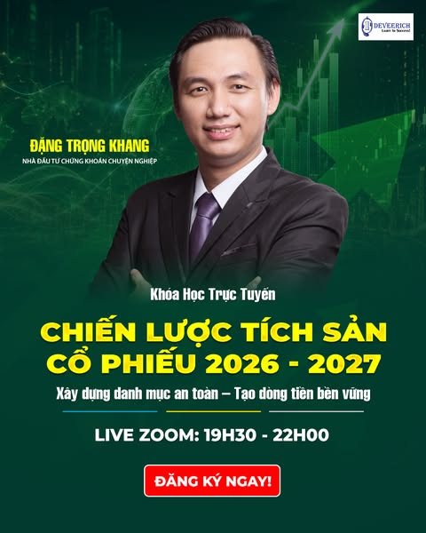
💥 NGƯỜI MỚI ĐẦU TƯ CHỨNG KHOÁN NÊN BẮT ĐẦU TỪ ĐÂU ĐỂ BIẾT “CỔ PHIẾU RẺ HAY ĐẮT” Rất nhiều người mới bước chân vào thị trường chứng khoán thường nhìn vào bảng điện và nghĩ rằng: 👉 Cổ phi…

💥 NGƯỜI MỚI ĐẦU TƯ CHỨNG KHOÁN NÊN BẮT ĐẦU TỪ ĐÂU ĐỂ BIẾT “CỔ PHIẾU RẺ HAY ĐẮT” Rất nhiều người mới bước chân vào thị trường chứng khoán thường nhìn vào bảng điện và nghĩ rằng: 👉 Cổ phi…
Trang đích
Nhận xét: 2 trang đích khác nhau, phần lớn là Trang Facebook. 1/1 trang web có Meta Pixel (có đo chuyển đổi).
Nguyễn Hữu Trí
Nguyễn Hữu Trí · 1502321 likeLoại chiến dịch → chủ đề → trang đích
Tầng phễu theo CTA/đích đến: Nhận biết 0% · Cân nhắc 0% · Chuyển đổi 100%. % tính trên số QC, không phải ngân sách hay kết quả chuyển đổi.
Nhận xét: Nguyễn Hữu Trí chủ yếu chạy Lead / chuyển đổi trên web (100% QC), xoáy vào chủ đề Khác và dẫn về Landing có form · ayp.vn. 100% QC hướng tới hành động chuyển đổi theo CTA/đích đến; cách phân loại này không khẳng định nội dung thiếu vai trò nuôi dưỡng.
Số mẫu có QC mới theo 7 ngày
Nhận xét: Đang tăng tốc: 27 mẫu mới trong 2 tuần gần nhất, so với 0 mẫu trong 4 tuần trước đó.
Ưu đãi trích từ caption (số QC)
Nhận xét: Ưu đãi chủ lực: margin 8,3%.
| Margin | 8,3% (1) |
Mẫu có tín hiệu đáng chú ý · 8 / 27 mẫu
Xếp theo thời gian duy trì và số QC liên quan. Đây là tín hiệu về mức độ duy trì/triển khai, không phải bằng chứng về chi tiêu, tương tác trên bài hay hiệu quả kinh doanh.
Nhận xét: Mẫu có tín hiệu duy trì đáng chú ý nhất đã chạy 10 ngày với 1 QC: Video, chủ đề Khác. 3/8 mẫu đứng đầu là video.

"Cục diện kinh tế thay đổi, tư duy quản lý tiền của chúng ta cũng phải nâng cấp." Sau 8 năm, anh Nguyễn Hữu Trí chính thức đứng lớp trở lại với chương trình Intelligent Money: ⚡ Cập nhật kỹ thuật & …
“Anh ơi, em đi làm đến tối mịt 11h đêm mới về, mà lương cao lắm cũng 15 triệu thôi, không biết tầm nào mới gom đủ tiền đám cưới nữa...” Đó là câu hỏi mình từng hỏi anh Trí khi tìm hiểu về các chương…

"Hồi trước khi cưới chị nhà, tôi gần như phải chắt chiu từng đồng, mượn đầu này đầu kia để lo cưới xin, tôi không muốn con tôi sau này khổ vậy. Giờ ráng kiếm nhiều tiền cho con học thêm vài môn, chứ t…

Tôi làm việc cho 1 nông trại bên Nhật và đang dự định về Việt Nam trong 1 - 2 năm tới. Thu nhập của tôi cũng ổn, tích luỹ kha khá rồi nên khi về Việt Nam tôi muốn hiện thực hóa ước mơ là mở một trang …
"Dù là Leader nhưng trong team em lại là người nhỏ tuổi nhất. Trước đây em không biết cách để theo dõi tiến độ công việc của các thành viên. Nên em cứ hay hỏi đột ngột: Công việc này tới đâu rồi anh/ …
Tuổi 23 mông lung định hướng và 1 quyết định giúp Lâm tìm thấy con đường sự nghiệp của riêng mình. "Từ một người loay hoay không biết phải định hướng tương lai thế nào, cuộc sống và tư duy của mình đ…
"Hai năm liền đầu tư chứng khoán, em nghĩ nó chỉ là trò may rủi". --- [Góc giới thiệu chương trình] The Intelligent Investor - Đầu tư chứng khoán bài bản, an tâm lựa chọn cổ phiếu dựa trên triết lý Go…
“Mình đã chọn một công việc mình rất ưng ý rồi…. vỡ mộng. Mình sinh năm 2k3, ra trường ngành Ngôn ngữ Trung được 2 năm rồi. Tiếng Trung là ngành mình thích mà cũng học tốt từ nhỏ. Từ hồi đi học tới l…
Trang đích
Nhận xét: 26 trang đích khác nhau, phần lớn là Landing có form. 26/26 trang web có Meta Pixel (có đo chuyển đổi).
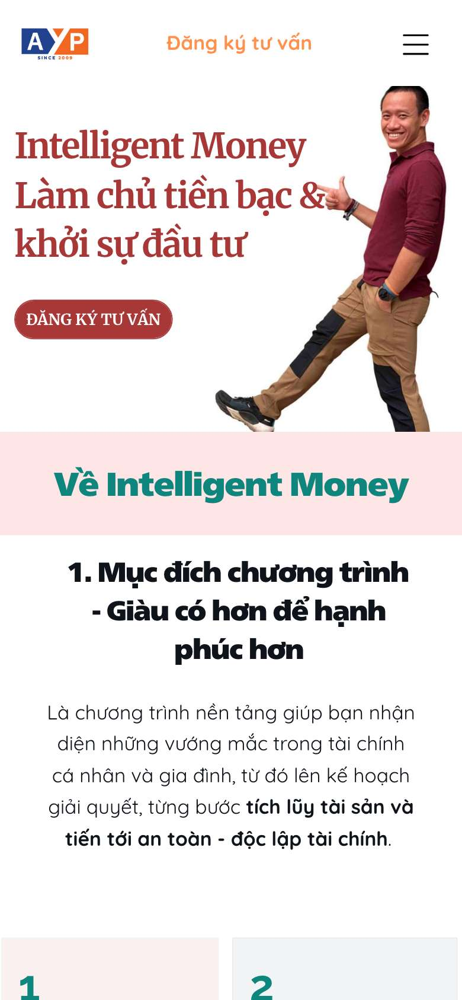
Chương trình Quản lý tài chính cá nhân Intelligent Money

Chương trình Quản lý tài chính cá nhân Intelligent Money

Chương trình Awaken Your Power

Chương trình Điều hướng sự nghiệp Career Navigation
Chương trình The Underground Leader - Quản lý đội nhóm
Chương trình Điều hướng sự nghiệp Career Navigation
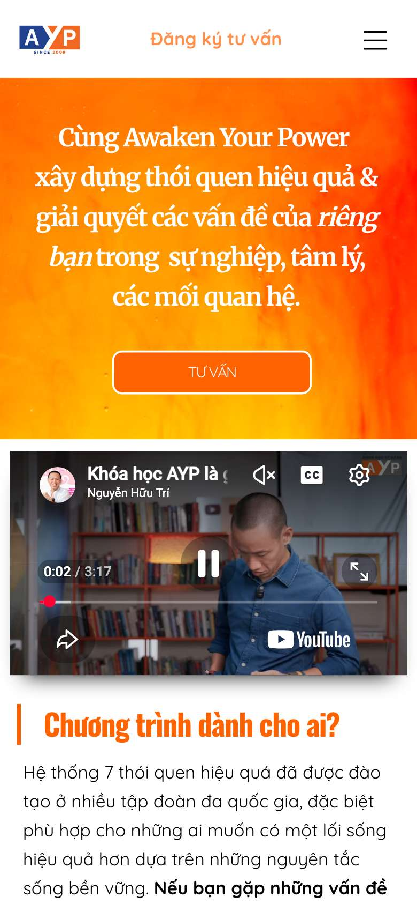
Chương trình Awaken Your Power

Đầu tư chứng khoán Good Company Cheap Price
Nguyễn Ngọc Nghĩa - AI Trading, CK phái sinh
Nguyễn Ngọc Nghĩa · 31317 likeLoại chiến dịch → chủ đề → trang đích
Tầng phễu theo CTA/đích đến: Nhận biết 4% · Cân nhắc 0% · Chuyển đổi 96%. % tính trên số QC, không phải ngân sách hay kết quả chuyển đổi.
Nhận xét: Nguyễn Ngọc Nghĩa - AI Trading, CK phái sinh chủ yếu chạy Lead / chuyển đổi trên web (96% QC), xoáy vào chủ đề Nỗi đau thua lỗ và dẫn về Landing có form · svcorp.vn.
Số mẫu có QC mới theo 7 ngày
Nhận xét: Nhịp ra mẫu đều: 1 mẫu mới trong 2 tuần gần nhất, 5 mẫu trong 4 tuần trước đó.
Ưu đãi trích từ caption (số QC)
Không thấy con số ưu đãi.
Mẫu có tín hiệu đáng chú ý · 8 / 8 mẫu
Xếp theo thời gian duy trì và số QC liên quan. Đây là tín hiệu về mức độ duy trì/triển khai, không phải bằng chứng về chi tiêu, tương tác trên bài hay hiệu quả kinh doanh.
Nhận xét: Mẫu có tín hiệu duy trì đáng chú ý nhất đã chạy 47 ngày với 3 QC: Ảnh đơn, chủ đề Nỗi đau thua lỗ. 1/8 mẫu đứng đầu là video.

💥 GIAO DỊCH HẠNH PHÚC 🔥 Ứng dụng AI/EA trong Tài chính, Chứng khoán, và Phái sinh để hạnh phúc. 1. Thời gian: 08h00-17h00 (Học 01 ngày từ Sáng đến Tối). 2. Địa điểm: Học Offline tại Hội trường (Khôn…

💥 CHƯƠNG TRÌNH: AI TRADING HAPPY 🔥 AI/EA trong Giao dịch tài chính & Chứng khoán phái sinh hạnh phúc. 1. Thời gian: 08h00-17h00 (Học từ Sáng đến Tối). 2. Địa điểm: Học Offline tại Hội trường (Không …

💥 GIAO DỊCH HẠNH PHÚC 🔥 Ứng dụng AI/EA trong Tài chính, Chứng khoán, và Phái sinh để hạnh phúc. 1. Thời gian: 08h00-17h00 (Học 01 ngày từ Sáng đến Tối). 2. Địa điểm: Học Offline tại Hội trường (Khôn…
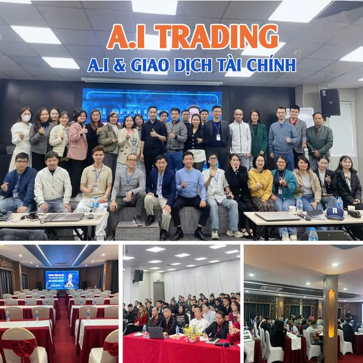
CHƯƠNG TRÌNH: AI TRADING Ứng dụng Trí tuệ nhân tạo (AI) trong Giao dịch tài chính & Chỉ số chứng khoán. 1. Thời gian: 08h00-17h00 (Học từ Sáng đến Tối). 2. Địa điểm: Học Offline tại Hội trường (Khôn…

💥 GIAO DỊCH HẠNH PHÚC 🔥 Ứng dụng AI/EA trong Tài chính, Chứng khoán, và Phái sinh để hạnh phúc. 1. Thời gian: 08h00-17h00 (Học 01 ngày từ Sáng đến Tối). 2. Địa điểm: Học Offline tại Hội trường (Khôn…
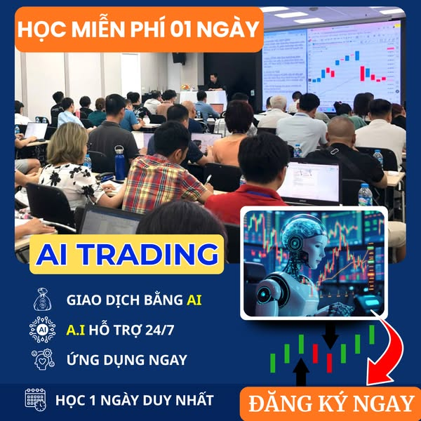
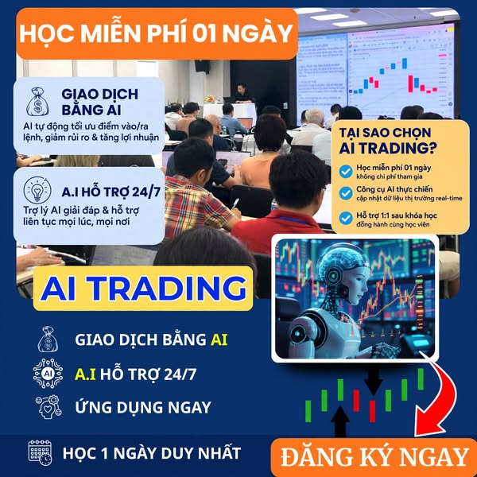
💥 GIAO DỊCH HẠNH PHÚC 🔥 Ứng dụng AI/EA trong Tài chính, Chứng khoán, và Phái sinh để hạnh phúc. 1. Thời gian: 08h00-17h00 (Học 01 ngày từ Sáng đến Tối). 2. Địa điểm: Học Offline tại Hội trường (Khôn…
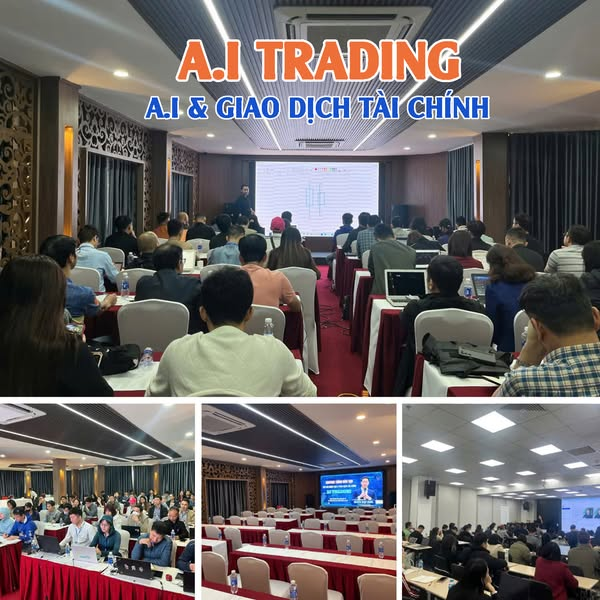
💥 GIAO DỊCH HẠNH PHÚC 🔥 Ứng dụng AI/EA trong Tài chính, Chứng khoán, và Phái sinh để hạnh phúc. 1. Thời gian: 08h00-17h00 (Học 01 ngày từ Sáng đến Tối). 2. Địa điểm: Học Offline tại Hội trường (Khôn…
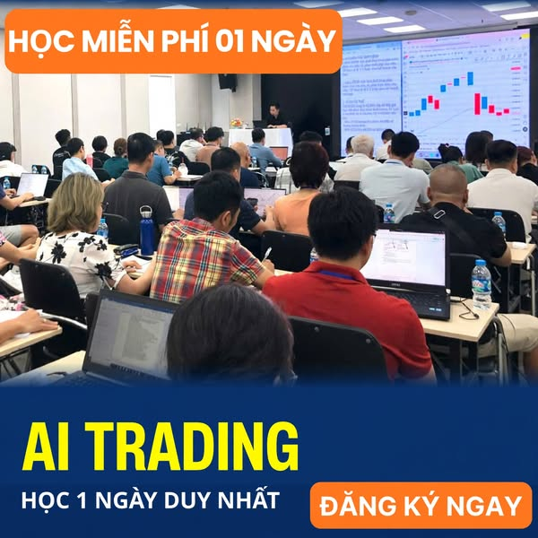
💥 GIAO DỊCH HẠNH PHÚC 🔥 Ứng dụng AI/EA trong Tài chính, Chứng khoán, và Phái sinh để hạnh phúc. 1. Thời gian: 08h00-17h00 (Học 01 ngày từ Sáng đến Tối). 2. Địa điểm: Học Offline tại Hội trường (Khôn…
Trang đích
Nhận xét: 2 trang đích khác nhau, phần lớn là Landing có form. 2/2 trang web có Meta Pixel (có đo chuyển đổi).

Cole Quant VN
Cole Quant VN · 337 likeLoại chiến dịch → chủ đề → trang đích
Tầng phễu theo CTA/đích đến: Nhận biết 0% · Cân nhắc 0% · Chuyển đổi 100%. % tính trên số QC, không phải ngân sách hay kết quả chuyển đổi.
Nhận xét: Cole Quant VN chủ yếu chạy Tin nhắn (100% QC), xoáy vào chủ đề Miễn phí / quà tặng và dẫn về Messenger. 100% QC hướng tới hành động chuyển đổi theo CTA/đích đến; cách phân loại này không khẳng định nội dung thiếu vai trò nuôi dưỡng.
Số mẫu có QC mới theo 7 ngày
Nhận xét: Đang tăng tốc: 6 mẫu mới trong 2 tuần gần nhất, so với 3 mẫu trong 4 tuần trước đó.
Ưu đãi trích từ caption (số QC)
Không thấy con số ưu đãi.
Mẫu có tín hiệu đáng chú ý · 8 / 12 mẫu
Xếp theo thời gian duy trì và số QC liên quan. Đây là tín hiệu về mức độ duy trì/triển khai, không phải bằng chứng về chi tiêu, tương tác trên bài hay hiệu quả kinh doanh.
Nhận xét: Mẫu có tín hiệu duy trì đáng chú ý nhất đã chạy 44 ngày với 1 QC: Ảnh đơn, chủ đề Webinar / sự kiện / hội thảo.

🚀 TUYỂN SINH CHUYÊN ĐỀ QUANT TRADING: PHÂN TÍCH ĐỊNH LƯỢNG THỊ TRƯỜNG TÀI CHÍNH VIỆT NAM VỚI QUANTVN – ĐẦU RA TỰ TIN XÂY DỰNG HỆ THỐNG GIAO DỊCH ĐỊNH LƯỢNG CỦA RIÊNG BẠN 🎯 Mục tiêu: Khóa học dành cho…

🚀 LỘ TRÌNH 12 BUỔI CHINH PHỤC QUANT TRADING & AUTO TRADING – ĐĂNG KÝ NHẬN TƯ VẤN MIỄN PHÍ Bạn có biết, tại các thị trường tài chính phát triển, phần lớn khối lượng giao dịch hiện nay không còn do con…
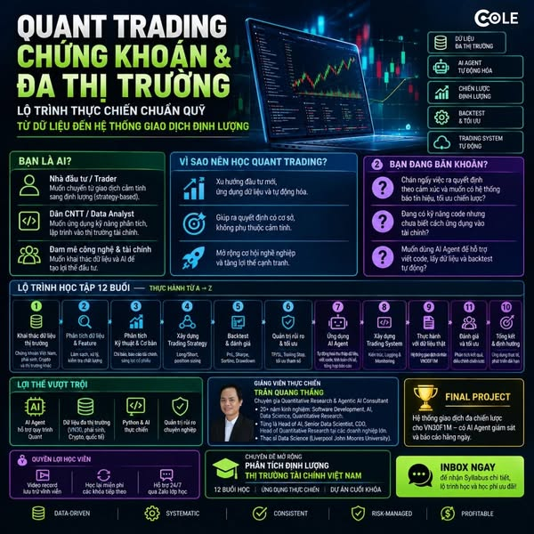
🚀 ĐÀO TẠO QUANT TRADING – LỘ TRÌNH THỰC CHIẾN CHUẨN QUỸ, TỪ DỮ LIỆU ĐẾN HỆ THỐNG GIAO DỊCH ĐỊNH LƯỢNG Bạn là nhà đầu tư cá nhân, Trader cổ phiếu/phái sinh muốn chuyển từ giao dịch cảm tính sang định …
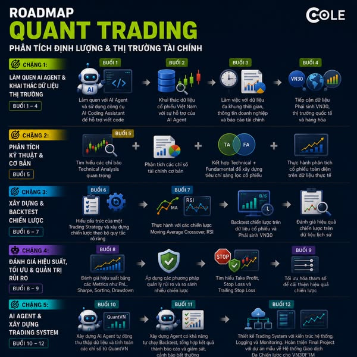
LỘ TRÌNH 12 BUỔI HỌC QUANT THỰC CHIẾN – TỪ KHAI THÁC DỮ LIỆU ĐẾN XÂY DỰNG TRADING SYSTEM Rất nhiều nhà đầu tư muốn ứng dụng dữ liệu vào giao dịch nhưng chưa biết bắt đầu từ đâu. Trong khi đó, không í…

🚀 TUYỂN SINH CHUYÊN ĐỀ QUANT: PHÂN TÍCH ĐỊNH LƯỢNG THỊ TRƯỜNG TÀI CHÍNH VIỆT NAM 📈 Thị trường tài chính ngày càng được vận hành dựa trên dữ liệu, mô hình và tự động hóa. Thay vì chỉ phân tích thủ côn…

🚀 [GIẢI MÃ] SAU CHUYÊN ĐỀ QUANT TRADING TẠI COLE.VN, BẠN SẼ THỰC SỰ LÀM ĐƯỢC GÌ? Một khóa học Quant không chỉ dừng ở việc hiểu các khái niệm về giao dịch định lượng, mà quan trọng hơn là giúp bạn tự …

💻 MUỐN TỰ XÂY TRADING BOT – NHƯNG GẶP KHÓ Ở LOGIC, CODE VÀ KẾT NỐI HỆ THỐNG? Một Trading Bot không chỉ là đoạn code tự động đặt lệnh. Đằng sau đó còn là quá trình xử lý dữ liệu, xây dựng tín hiệu, t…
🔥 ĐÃ CÓ CHIẾN LƯỢC TRADING – SAO VẪN PHẢI THỰC HIỆN TỪNG BƯỚC THỦ CÔNG? Theo dõi biểu đồ, kiểm tra chỉ báo, xác nhận tín hiệu, xác định điểm vào/thoát lệnh và thiết lập thông số rủi ro… Nếu chiến lư…
Bí Mật Đầu Tư Chứng Khoán
Bí Mật Đầu Tư Chứng Khoán · 41 likeLoại chiến dịch → chủ đề → trang đích
Tầng phễu theo CTA/đích đến: Nhận biết 0% · Cân nhắc 100% · Chuyển đổi 0%. % tính trên số QC, không phải ngân sách hay kết quả chuyển đổi.
Nhận xét: Bí Mật Đầu Tư Chứng Khoán chủ yếu chạy Traffic → landing (100% QC), xoáy vào chủ đề Miễn phí / quà tặng và dẫn về Trang thông tin / sản phẩm · dangtrongkhang.vn.
Số mẫu có QC mới theo 7 ngày
Nhận xét: Không có mẫu hoàn toàn mới trong 6 tuần, chỉ duy trì mẫu cũ.
Ưu đãi trích từ caption (số QC)
Không thấy con số ưu đãi.
Mẫu có tín hiệu đáng chú ý · 1 / 1 mẫu
Xếp theo thời gian duy trì và số QC liên quan. Đây là tín hiệu về mức độ duy trì/triển khai, không phải bằng chứng về chi tiêu, tương tác trên bài hay hiệu quả kinh doanh.
Nhận xét: Mẫu có tín hiệu duy trì đáng chú ý nhất đã chạy 1417 ngày với 3 QC: Ảnh đơn, chủ đề Miễn phí / quà tặng.
Trang đích
Nhận xét: 1 trang đích khác nhau, phần lớn là Trang thông tin / sản phẩm. 0/1 trang web có Meta Pixel (không thấy đo chuyển đổi).
Trần Hữu Chung
Không có QC đang chạy tại thời điểm cào. Kiểm tra lại trên Ad Library ↗
FireAnt Education - học CK miễn phí
FireAnt Education · 147 likeLoại chiến dịch → chủ đề → trang đích
Tầng phễu theo CTA/đích đến: Nhận biết 0% · Cân nhắc 100% · Chuyển đổi 0%. % tính trên số QC, không phải ngân sách hay kết quả chuyển đổi.
Nhận xét: FireAnt Education - học CK miễn phí chủ yếu chạy Traffic → landing (100% QC), xoáy vào chủ đề Miễn phí / quà tặng và dẫn về Trang thông tin / sản phẩm · edu.fireant.vn.
Số mẫu có QC mới theo 7 ngày
Nhận xét: Đang tăng tốc: 3 mẫu mới trong 2 tuần gần nhất, so với 0 mẫu trong 4 tuần trước đó.
Ưu đãi trích từ caption (số QC)
Không thấy con số ưu đãi.
Mẫu có tín hiệu đáng chú ý · 3 / 3 mẫu
Xếp theo thời gian duy trì và số QC liên quan. Đây là tín hiệu về mức độ duy trì/triển khai, không phải bằng chứng về chi tiêu, tương tác trên bài hay hiệu quả kinh doanh.
Nhận xét: Mẫu có tín hiệu duy trì đáng chú ý nhất đã chạy 3 ngày với 2 QC: Ảnh đơn, chủ đề Miễn phí / quà tặng.
🎓 HỌC ĐẦU TƯ CHỨNG KHOÁN HOÀN TOÀN MIỄN PHÍ CÙNG FIREANT EDUCATION Bạn không cần trả học phí đắt đỏ cho các khóa “bí kíp”, cũng không cần học bằng những khoản lỗ đầu tiên. Bạn có thể học bài bản từ c…
📚 HỌC TÀI CHÍNH – CHỨNG KHOÁN MIỄN PHÍ CÙNG FIREANT EDUCATION Đầu tư chứng khoán không nhất thiết phải bắt đầu bằng thật nhiều tiền, nhưng nhất định nên bắt đầu bằng kiến thức đúng! Với mong muốn la…
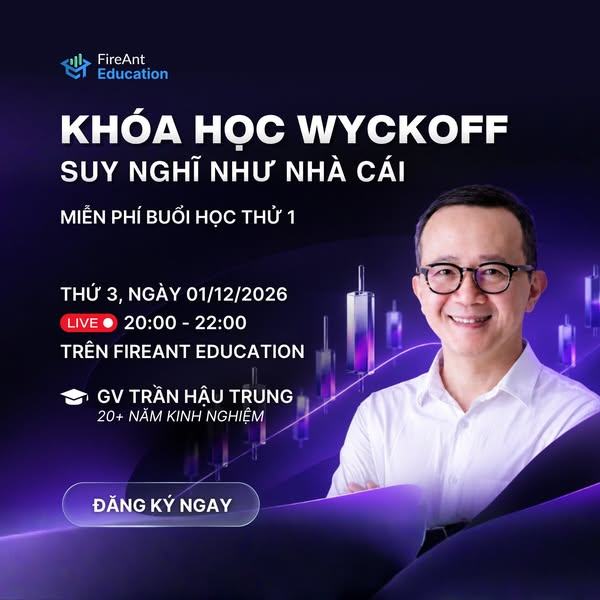
🔥 HỌC THỬ MIỄN PHÍ: KHÓA HỌC WYCKOFF – SUY NGHĨ NHƯ NHÀ CÁI 🔥 Bạn mua là giá giảm, bán thì giá tăng? Bạn luôn đi sau “dòng tiền lớn” một nhịp? 👉 Có thể bạn đang nhìn thị trường bằng mắt của nhỏ lẻ, c…
Trang đích
Nhận xét: 2 trang đích khác nhau, phần lớn là Trang thông tin / sản phẩm. 0/2 trang web có Meta Pixel (không thấy đo chuyển đổi).

FireAnt Invest - khoá hàng hoá phái sinh
FireAnt Invest · 1184 likeLoại chiến dịch → chủ đề → trang đích
Tầng phễu theo CTA/đích đến: Nhận biết 67% · Cân nhắc 33% · Chuyển đổi 0%. % tính trên số QC, không phải ngân sách hay kết quả chuyển đổi.
Nhận xét: FireAnt Invest - khoá hàng hoá phái sinh chủ yếu chạy Tương tác / video view (67% QC), xoáy vào chủ đề Khác và dẫn về Không có link.
Số mẫu có QC mới theo 7 ngày
Nhận xét: Đang tăng tốc: 7 mẫu mới trong 2 tuần gần nhất, so với 2 mẫu trong 4 tuần trước đó.
Ưu đãi trích từ caption (số QC)
Không thấy con số ưu đãi.
Mẫu có tín hiệu đáng chú ý · 8 / 9 mẫu
Xếp theo thời gian duy trì và số QC liên quan. Đây là tín hiệu về mức độ duy trì/triển khai, không phải bằng chứng về chi tiêu, tương tác trên bài hay hiệu quả kinh doanh.
Nhận xét: Mẫu có tín hiệu duy trì đáng chú ý nhất đã chạy 17 ngày với 1 QC: Video, chủ đề Khác. 8/8 mẫu đứng đầu là video.
CƠN SỐT CAO SU TỰ NHIÊN: VÌ SAO XE ĐIỆN LẠI 'ĂN' LỐP NHANH GẤP ĐÔI XE XĂNG? #FireAntInvest #FAI #kienthuc #hanghoaphaisinh #shorts #reels #viral #kinhte ----------------------------------------- CÔN…
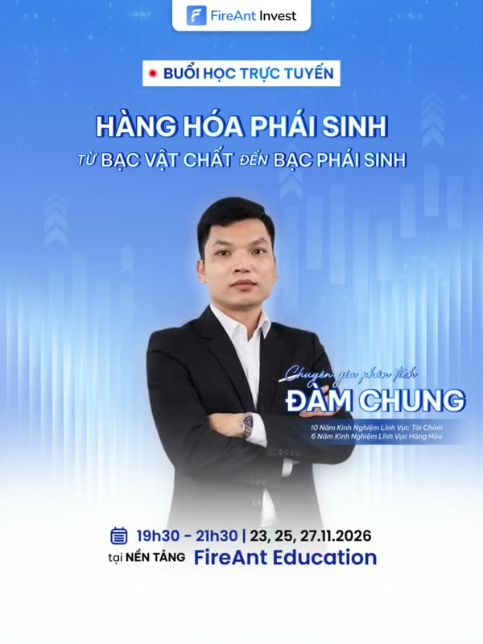
🎓 CHÍNH THỨC CÔNG BỐ KHÓA HỌC: HÀNG HÓA PHÁI SINH - TỪ BẠC VẬT CHẤT ĐẾN BẠC PHÁI SINH 🔑 Khóa học trực tuyến HOÀN TOÀN MIỄN PHÍ từ FireAnt Invest. 📈 Thị trường hàng hóa chịu tác động từ nhiều yếu tố …
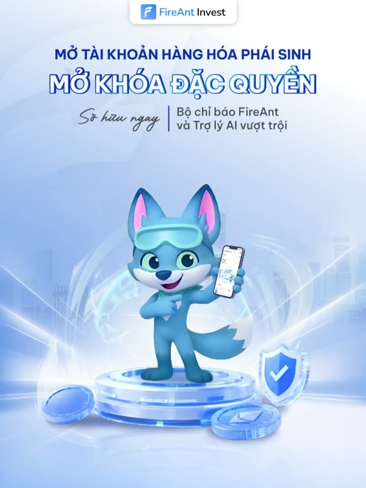
🚀 MỞ TÀI KHOẢN HÀNG HÓA PHÁI SINH – NHẬN NGAY BỘ 27 CHỈ BÁO PHÂN TÍCH KỸ THUẬT HOÀN TOÀN MIỄN PHÍ 📊 Phân tích thị trường chuyên sâu không còn là rào cản khi nhà đầu tư sở hữu hệ thống chỉ báo kỹ thuậ…

🎓 CHINH PHỤC THỊ TRƯỜNG BẠC: TỪ NỀN TẢNG ĐẾN THỰC CHIẾN Thị trường hàng hóa phái sinh không chỉ đòi hỏi kiến thức về giá, mà còn yêu cầu khả năng phân tích dòng chảy thị trường, nhận diện cơ hội và k…
CẦM BẠC TRONG TAY NHƯNG LÒNG NHƯ LỬA ĐỐT: GIÁ GIẢM THÌ LÀM GÌ? Cầm bạc vật chất trong tay, giá tăng thì vui chứ giá giảm thì chỉ biết... cất tủ đợi ngày về bờ. Bán ra là lỗ ngay tiền công và chênh lệc…
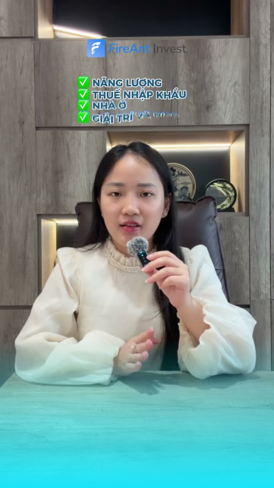
Lạm phát Mỹ bất ngờ tăng tốc, liệu Fed có buộc phải tăng lãi suất liên tiếp? #FireAntInvest #FAI #kienthuc #hanghoaphaisinh #shorts #reels #viral #kinhte ----------------------------------------- CÔ…
USD bật tăng, giá nông sản có nguy cơ lao dốc? Vì sao hai thị trường tưởng chừng chẳng liên quan lại tác động lẫn nhau? #FireAntInvest #FAI #kienthuc #hanghoaphaisinh #shorts #reels #viral #kinhte -…
|GIAO DỊCH BẠC PHÁI SINH| Kiến thức là nền tảng - Quản trị rủi ro là then chốt 🔑 Trong thị trường hàng hóa phái sinh, nhận định đúng xu hướng giá là chưa đủ. Để đưa ra quyết định giao dịch có cơ sở, …
Trang đích
Nhận xét: 2 trang đích khác nhau, phần lớn là Trang thông tin / sản phẩm. 0/2 trang web có Meta Pixel (không thấy đo chuyển đổi).

Học viện HDSecurities - HD Academy
Học Viện HDSecurities · 1405 likeLoại chiến dịch → chủ đề → trang đích
Tầng phễu theo CTA/đích đến: Nhận biết 25% · Cân nhắc 25% · Chuyển đổi 50%. % tính trên số QC, không phải ngân sách hay kết quả chuyển đổi.
Nhận xét: Học viện HDSecurities - HD Academy chủ yếu chạy Tin nhắn (50% QC), xoáy vào chủ đề Webinar / sự kiện / hội thảo và dẫn về Messenger. Có QC ở đủ 3 tầng phễu theo CTA/đích đến; dữ liệu không cho biết đối tượng nhắm chọn hay hành trình thực tế sau cú nhấp.
Số mẫu có QC mới theo 7 ngày
Nhận xét: Đang tăng tốc: 2 mẫu mới trong 2 tuần gần nhất, so với 2 mẫu trong 4 tuần trước đó.
Ưu đãi trích từ caption (số QC)
Không thấy con số ưu đãi.
Mẫu có tín hiệu đáng chú ý · 4 / 4 mẫu
Xếp theo thời gian duy trì và số QC liên quan. Đây là tín hiệu về mức độ duy trì/triển khai, không phải bằng chứng về chi tiêu, tương tác trên bài hay hiệu quả kinh doanh.
Nhận xét: Mẫu có tín hiệu duy trì đáng chú ý nhất đã chạy 37 ngày với 1 QC: Ảnh đơn, chủ đề Webinar / sự kiện / hội thảo.
🎉 HD ACADEMY CHÍNH THỨC RA MẮT HỌC CÓ ĐỊNH HƯỚNG, ĐẦU TƯ THÊM VỮNG VÀNG Muốn tìm hiểu đầu tư nhưng chưa biết bắt đầu từ đâu? Đã có kinh nghiệm nhưng cần hệ thống lại kiến thức? Một lộ trình phù hợp s…

🌱 HÀNH TRÌNH ĐẦU TƯ VỮNG VÀNG BẮT ĐẦU TỪ NHỮNG KIẾN THỨC ĐẦU TIÊN! Nhìn bảng giá thấy toàn những con số nhấp nháy? Nghe nhắc đến cổ phiếu, lệnh giao dịch hay rủi ro mà vẫn chưa thật sự hiểu? Ai cũng …

HỆ SINH THÁI TẠO GIÁ TRỊ TỪ ĐÂU? Một doanh nghiệp có nhiều kết nối chưa chắc đã sở hữu lợi thế cạnh tranh. Điều quan trọng là những kết nối đó có thực sự đóng góp vào hoạt động kinh doanh hay không. …
📲 BẠN ĐÃ CÓ TÀI KHOẢN HD INVEST? BẮT ĐẦU HÀNH TRÌNH HỌC MIỄN PHÍ TẠI HD ACADEMY! Hãy khám phá kiến thức đầu tư cùng HD Academy CỰC DỄ DÀNG với tài khoản HD Invest 😍 🔹 Bước 1: Truy cập HD Academy Vào…
Trang đích
Nhận xét: 2 trang đích khác nhau, phần lớn là Trang Facebook. 0/1 trang web có Meta Pixel (không thấy đo chuyển đổi).
Chứng khoán LPS
Chứng khoán LPS · 1953 likeLoại chiến dịch → chủ đề → trang đích
Tầng phễu theo CTA/đích đến: Nhận biết 0% · Cân nhắc 0% · Chuyển đổi 100%. % tính trên số QC, không phải ngân sách hay kết quả chuyển đổi.
Nhận xét: Chứng khoán LPS chủ yếu chạy Cài app (100% QC), xoáy vào chủ đề Miễn phí / quà tặng và dẫn về App Store. 100% QC hướng tới hành động chuyển đổi theo CTA/đích đến; cách phân loại này không khẳng định nội dung thiếu vai trò nuôi dưỡng.
Số mẫu có QC mới theo 7 ngày
Nhận xét: Đang tăng tốc: 22 mẫu mới trong 2 tuần gần nhất, so với 4 mẫu trong 4 tuần trước đó.
Ưu đãi trích từ caption (số QC)
Nhận xét: Ưu đãi chủ lực: quà tiền 80K, 16 triệu; tặng cổ phiếu STB, LPB, VNM; phí 0%; margin 14%, 9,52%.
| Tiền / quà | 80K (124), 16 triệu (93), 1.2 triệu (50), 7 triệu (27), 100K (24), 5.48774 triệu (4) |
| Cổ phiếu tặng | STB (104), LPB (16), VNM (6) |
| Phí | 0% (259), 0,15% (10) |
| Margin | 14% (18), 9,52% (12), 13,5% (10) |
Mẫu có tín hiệu đáng chú ý · 8 / 30 mẫu
Xếp theo thời gian duy trì và số QC liên quan. Đây là tín hiệu về mức độ duy trì/triển khai, không phải bằng chứng về chi tiêu, tương tác trên bài hay hiệu quả kinh doanh.
Nhận xét: Mẫu có tín hiệu duy trì đáng chú ý nhất đã chạy 41 ngày với 66 QC: Ảnh đơn, chủ đề Miễn phí / quà tặng, 2 biến thể. 1/8 mẫu đứng đầu là video.


5 ĐẶC QUYỀN TRAO TAY TẢI APP NHẬN NGAY 16 TRIỆU! (*) Bỏ 0đ chi phí, rước ngay bộ đặc quyền VVIP trị giá đến 16.000.000đ nạp thẳng vào tài khoản LOOP by LPS! Cơ hội có 1-0-2 để sở hữu trọn bộ "vũ khí…

🔥 CHƯA ĐẦU TƯ ĐÃ CÓ LÃI TẢI APP LOOP – TẶNG NGAY CỔ PHIẾU STB! 🔥 Cần gì chờ thị trường điểm xanh mới có lời? Ngay khi tải app và mở tài khoản tại LOOP by LPS, bạn đã chắc chắn bỏ túi khoản lãi đầu ti…


🔥 TẢI 1 APP – TẶNG 3 QUÀ KHỦNG! 🔥 Cơ hội có 1-0-2 dành riêng cho nhà đầu tư mới! Không cần thao tác phức tạp, chỉ cần 1 lần tải app LOOP by LPS, bạn sẽ kích hoạt ngay bộ ba đặc quyền "khó chối từ": …


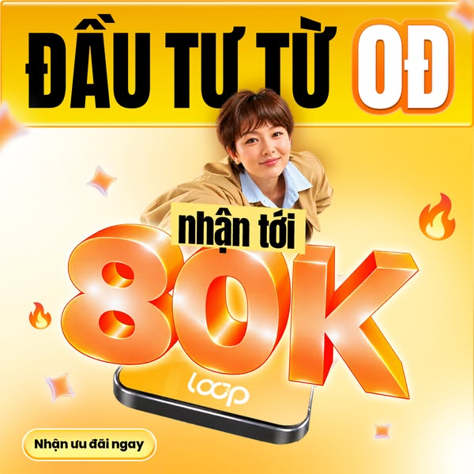
🔥 TẢI APP 0Đ – NHẬN TỚI 100.000Đ 🔥 Cơ hội đặc quyền chào mừng nhà đầu tư mới với phần quà khởi động cực hot khi mở tài khoản chứng khoán trên ứng dụng LOOP by LPS: 🎁 Tặng ngay phần quà trị giá lên …

⚡TRẢI NGHIỆM MƯỢT MÀ – NHẬN QUÀ BÙNG NỔ! Một nền tảng đầu tư hoàn hảo không chỉ cần mượt mà ở tốc độ đặt lệnh, mà phải trao cho bạn lợi thế tài chính vượt trội ngay từ ngày đầu bước vào cuộc chơi. L…

🚀 GÌ CŨNG MIỄN PHÍ ĐẦU TƯ CHẲNG LO CHI 🚀 Đừng mãi trade mà bỏ quên mất kẻ ""gặm nhấm"" thầm lặng: Phí giao dịch và lãi vay margin. Đừng để chi phí kéo lùi biên độ lợi nhuận của bạn thêm một phút với …
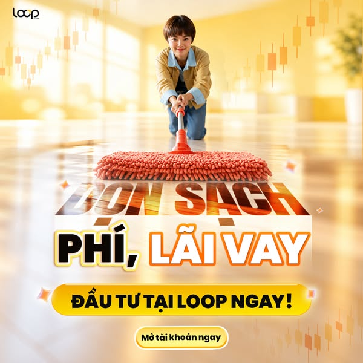
⚡ "DỌN SẠCH" PHÍ, LÃI VAY - ĐẦU TƯ TẠI LOOP NGAY! Dùng margin lướt sóng, chưa thấy lời đâu nhưng phí giao dịch và lãi vay đang ăn mòn thành quả? Cắt bỏ ngay gánh nặng tài chính với đặc quyền DOUBLE…

🔥 TẶNG BẠN 16 TRIỆU ƯU ĐÃI CHỚP NGAY CƠ HỘI VÀNG! LOOP by LPS tặng trọn bộ bệ phóng đầu tư toàn diện, giúp "tấm chiếu mới" tự tin nhập cuộc và bứt phá từ ngày đầu tiên: ⚡ Miễn phí giao dịch trọn đờ…
Trang đích
Nhận xét: 2 trang đích khác nhau, phần lớn là App Store.

DNSE
Công ty Cổ phần Chứng khoán DNSE · 22524 likeLoại chiến dịch → chủ đề → trang đích
Tầng phễu theo CTA/đích đến: Nhận biết 40% · Cân nhắc 60% · Chuyển đổi 0%. % tính trên số QC, không phải ngân sách hay kết quả chuyển đổi.
Nhận xét: DNSE chủ yếu chạy Traffic → bài viết / PR (60% QC), xoáy vào chủ đề Khác và dẫn về Bài viết / PR · dnse.com.vn.
Số mẫu có QC mới theo 7 ngày
Nhận xét: Đang tăng tốc: 2 mẫu mới trong 2 tuần gần nhất, so với 2 mẫu trong 4 tuần trước đó.
Ưu đãi trích từ caption (số QC)
Không thấy con số ưu đãi.
Mẫu có tín hiệu đáng chú ý · 5 / 5 mẫu
Xếp theo thời gian duy trì và số QC liên quan. Đây là tín hiệu về mức độ duy trì/triển khai, không phải bằng chứng về chi tiêu, tương tác trên bài hay hiệu quả kinh doanh.
Nhận xét: Mẫu có tín hiệu duy trì đáng chú ý nhất đã chạy 44 ngày với 1 QC: Ảnh đơn, chủ đề Khác.
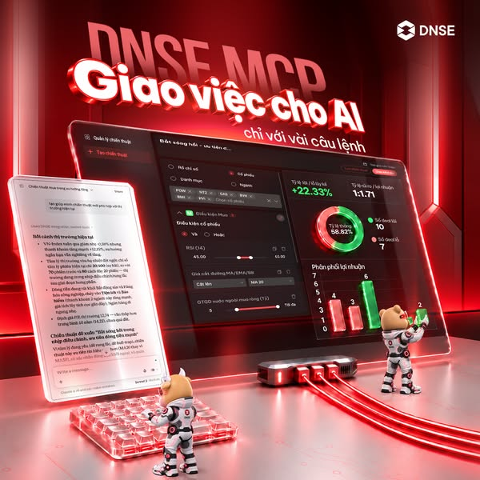
👩💻 ĐẦU TƯ ĐƠN GIẢN VỚI DNSE MCP, GIAO VIỆC CHO AI CHỈ BẰNG VÀI CÂU LỆNH Chỉ cần mô tả điều bạn muốn thực hiện, DNSE MCP sẽ kết nối AI với dữ liệu và công cụ đầu tư phù hợp để hỗ trợ bạn toàn trình …

KẾT NỐI AI VỚI DỮ LIỆU THỊ TRƯỜNG REAL-TIME QUA DNSE MCP Muốn dùng AI để đọc tin, lọc mã và theo dõi dòng tiền nhanh hơn nhưng lo câu trả lời thiếu dữ liệu cập nhật? DNSE MCP giúp kết nối AI với dữ l…

DNSE MCP – KIỂM THỬ CHIẾN THUẬT ĐẦU TƯ CÙNG AI Đã có ý tưởng giao dịch nhưng ngại thiết lập và kiểm thử thủ công? DNSE MCP giúp kết nối AI với công cụ Kiểm thử chiến thuật của DNSE để hỗ trợ bạn: 📌 Ch…
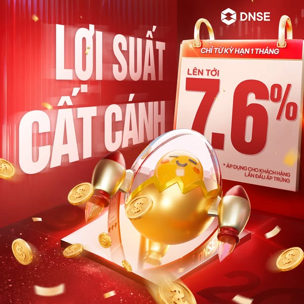
LỢI SUẤT “CẤT CÁNH” - KỲ HẠN 1 THÁNG LÊN TỚI 7.6%/NĂM Thị trường liên tục có những chuyển biến khó lường, đâu là điểm trú ẩn để dòng tiền vẫn đều đặn sinh lời với lợi suất cao? Với ưu đãi lần đầu …

🏆 DNSE ĐƯỢC VINH DANH 5 HẠNG MỤC TẠI BXH BEST RETAIL BROKERS 2026 – KHẲNG ĐỊNH VỊ THẾ TOP 2 DỊCH VỤ BÁN LẺ Năm thứ hai liên tiếp được xướng tên tại BXH Best Retail Brokers, DNSE tự hào giữ vị trí Top…
Trang đích
Nhận xét: 1 trang đích khác nhau, phần lớn là Bài viết / PR. 1/1 trang web có Meta Pixel (có đo chuyển đổi).

Học viện amiCoach - CFA
Học viện amiCoach · 10819 likeLoại chiến dịch → chủ đề → trang đích
Tầng phễu theo CTA/đích đến: Nhận biết 33% · Cân nhắc 0% · Chuyển đổi 67%. % tính trên số QC, không phải ngân sách hay kết quả chuyển đổi.
Nhận xét: Học viện amiCoach - CFA chủ yếu chạy Tin nhắn (67% QC), xoáy vào chủ đề Miễn phí / quà tặng và dẫn về Messenger.
Số mẫu có QC mới theo 7 ngày
Nhận xét: Đang tăng tốc: 2 mẫu mới trong 2 tuần gần nhất, so với 1 mẫu trong 4 tuần trước đó.
Ưu đãi trích từ caption (số QC)
Không thấy con số ưu đãi.
Mẫu có tín hiệu đáng chú ý · 3 / 3 mẫu
Xếp theo thời gian duy trì và số QC liên quan. Đây là tín hiệu về mức độ duy trì/triển khai, không phải bằng chứng về chi tiêu, tương tác trên bài hay hiệu quả kinh doanh.
Nhận xét: Mẫu có tín hiệu duy trì đáng chú ý nhất đã chạy 33 ngày với 1 QC: Nhiều ảnh, chủ đề Miễn phí / quà tặng.

🔥 Bạn muốn học CFA nhưng chưa biết bắt đầu từ đâu? 🔥 ✅ Trải nghiệm học thử miễn phí cả 3 levels ✅ Đặt lịch tư vấn chuyên sâu 1-1 với giảng viên Nguyễn Hoài Phương, CFA, CPA (Aust), MBA Link đăng ký dư…

🎯HỌC CFA LEVEL 3 TẠI AMICOACH: ĐẦY ĐỦ 3 PATHWAYS - CHỦ ĐỘNG LỰA CHỌN, VỮNG VÀNG ĐỊNH HƯỚNG Trong chương trình CFA level 3, bên cạnh phần kiến thức chung (Common Core), chiếm khoảng 65-70% nội dung, th…
Học thử miễn phí CFA, FRM & Financial Modeling tại amiCoach Trước khi quyết định đầu tư hàng chục triệu đồng cho một chương trình học, điều quan trọng nhất là bạn cần biết: Khóa học đó có thực sự phù…
FIDT - CFP
FIDT - Financial Planning Group · 44236 likeLoại chiến dịch → chủ đề → trang đích
Tầng phễu theo CTA/đích đến: Nhận biết 18% · Cân nhắc 18% · Chuyển đổi 65%. % tính trên số QC, không phải ngân sách hay kết quả chuyển đổi.
Nhận xét: FIDT - CFP chủ yếu chạy Tin nhắn (47% QC), xoáy vào chủ đề Khác và dẫn về Messenger. Có QC ở đủ 3 tầng phễu theo CTA/đích đến; dữ liệu không cho biết đối tượng nhắm chọn hay hành trình thực tế sau cú nhấp.
Số mẫu có QC mới theo 7 ngày
Nhận xét: Đang tăng tốc: 8 mẫu mới trong 2 tuần gần nhất, so với 8 mẫu trong 4 tuần trước đó.
Ưu đãi trích từ caption (số QC)
Không thấy con số ưu đãi.
Mẫu có tín hiệu đáng chú ý · 8 / 17 mẫu
Xếp theo thời gian duy trì và số QC liên quan. Đây là tín hiệu về mức độ duy trì/triển khai, không phải bằng chứng về chi tiêu, tương tác trên bài hay hiệu quả kinh doanh.
Nhận xét: Mẫu có tín hiệu duy trì đáng chú ý nhất đã chạy 129 ngày với 1 QC: Video, chủ đề Khác. 4/8 mẫu đứng đầu là video.
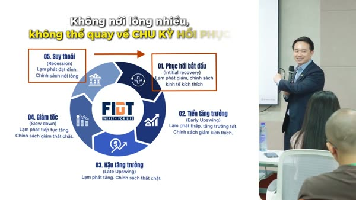
Đây là lý do nhiều nhà đầu tư "Mu.a đỉn.h - Bán đ.áy" khi đầu tư Bất động sản. -- Financial Health Check - Đánh giá toàn diện sức khỏe tài chính, kết nối mọi nguồn lực để đạt được mục tiêu tài chính d…

BẠN ĐÃ BAO GIỜ NHÌN THẤY TOÀN CẢNH BỨC TRANH TÀI CHÍNH CỦA CHÍNH MÌNH? Có bao giờ bạn tự hỏi: Với mức thu nhập hiện tại, khi nào mình mới đủ tiền mua nhà, lo cho con học trường quốc tế, hay nghỉ hưu …
Đâu là khoảnh khắc bạn nhận ra mình đã thực sự vững vàng?
Điểm tựa vững vàng bắt đầu từ một lựa chọn đúng! 🛡️ Liệu bạn đã tìm được giải pháp bảo vệ trọn vẹn mà không làm "hụt hơi" tài chính gia đình? Khám phá cách FIDT trao cho bạn quyền tự do lựa chọn và th…
10 NĂM GẦY DỰNG CƠ NGƠI, ĐỪNG ĐỂ MỘT SỰ CỐ LÀM GIÁN ĐOẠN Những nỗ lực bao năm để xây dựng một tổ ấm khang trang có thể gặp thử thách lớn nếu chúng ta thiếu đi một quỹ dự phòng y tế đủ vững. Rất n…
TRỌN VẸN CHỮ HIẾU: DÀNH CHO BA MẸ SỰ CHĂM SÓC TỐT NHẤT MÀ KHÔNG GÂY ÁP LỰC TÀI CHÍNH Ở độ tuổi U30, U40, sự trăn trở lớn nhất thường là làm sao cân bằng giữa việc chăm lo cho tổ ấm nhỏ và báo hiếu đấ…
Càng lớn, càng nhiều trách nhiệm phải gánh vác. Nhưng nếu một ngày biến cố xảy ra, liệu bạn có đủ vững vàng để bảo vệ cả gia đình? ------- #FIDT #FPG #IFA
Đối với những chuyên gia làm việc tự do, năng lực tạo ra thu nhập tốt là lợi thế để tích lũy tài sản. Nhưng khi đã có thành quả tài chính đáng kể, bài toán không còn chỉ là kiếm thêm, mà còn là bảo vệ…
Trang đích
Nhận xét: 4 trang đích khác nhau, phần lớn là Landing có form. 2/3 trang web có Meta Pixel (có đo chuyển đổi).

CFA - SAPP Academy
CFA - SAPP Academy Học viện đào tạo hàng đầu Việt Nam · 17407 likeLoại chiến dịch → chủ đề → trang đích
Tầng phễu theo CTA/đích đến: Nhận biết 0% · Cân nhắc 29% · Chuyển đổi 71%. % tính trên số QC, không phải ngân sách hay kết quả chuyển đổi.
Nhận xét: CFA - SAPP Academy chủ yếu chạy Tin nhắn (57% QC), xoáy vào chủ đề Hứa hẹn lợi nhuận / thu nhập và dẫn về Messenger.
Số mẫu có QC mới theo 7 ngày
Nhận xét: Nhịp ra mẫu đều: 2 mẫu mới trong 2 tuần gần nhất, 8 mẫu trong 4 tuần trước đó.
Ưu đãi trích từ caption (số QC)
Không thấy con số ưu đãi.
Mẫu có tín hiệu đáng chú ý · 8 / 11 mẫu
Xếp theo thời gian duy trì và số QC liên quan. Đây là tín hiệu về mức độ duy trì/triển khai, không phải bằng chứng về chi tiêu, tương tác trên bài hay hiệu quả kinh doanh.
Nhận xét: Mẫu có tín hiệu duy trì đáng chú ý nhất đã chạy 129 ngày với 1 QC: Ảnh đơn, chủ đề Hứa hẹn lợi nhuận / thu nhập. 3/8 mẫu đứng đầu là video.

💫 LỘ TRÌNH ĐÀO TẠO CFA TOÀN DIỆN TẠI SAPP - GIẢI PHÁP CHINH PHỤC CFA TỪ CON SỐ 0 Bạn đang có dự định theo đuổi việc học CFA nhưng vẫn “chùn bước” bởi: ❓ Không có nền tảng tài chính hoặc kỹ năng tiến…

BẮT ĐẦU HÀNH TRÌNH CFA TỪ CON SỐ 0 - TẠI SAO KHÔNG? 🚀 Đừng để xuất phát điểm trái ngành làm rào cản bước tiến sự nghiệp Tài chính của bạn! 💡 Tại SAPP Academy, lộ trình 4 bước chuẩn hóa sẽ giúp…
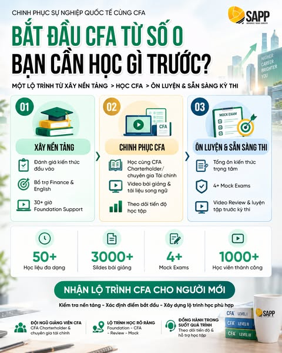
💫 LỘ TRÌNH ĐÀO TẠO CFA TOÀN DIỆN TẠI SAPP - GIẢI PHÁP CHINH PHỤC CFA TỪ CON SỐ 0 Bạn đang có dự định theo đuổi việc học CFA nhưng vẫn “chùn bước” bởi: ❓ Không có nền tảng tài chính hoặc kỹ năng tiến…

TRỌN BỘ CÔNG THỨC CFA LEVEL 1 MIỄN PHÍ - LƯU LẠI ÔN THI 📚 Học CFA mà công thức nào nhìn cũng thấy quen, đến lúc làm bài lại… quên sạch? CFA Level 1 có tới 10 môn học, với hàng loạt công thức cần ghi…
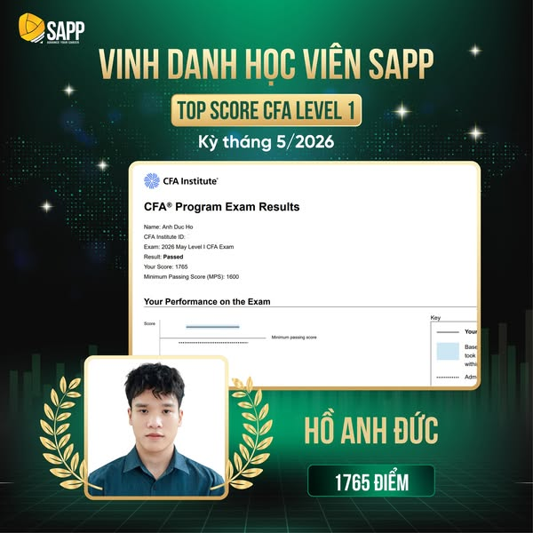
💎 VINH DANH HỌC VIÊN CFA TẠI SAPP ĐẠT TOP SCORE & PASS LEVEL I KỲ THÁNG 5/2026 🔥 Không thua kém cái nóng của mùa hè, kết quả thi CFA Level 1 của học viên SAPP Academy cũng đang tạo nên một “sức nóng”…
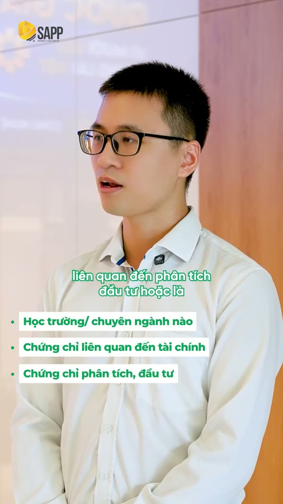
📌 3 TIÊU CHÍ ĐÁNH GIÁ CV CỦA ỨNG VIÊN PHÒNG PHÂN TÍCH? SINH VIÊN CHƯA CÓ KINH NGHIỆM CẦN CHÚ Ý GÌ? Vòng hồ sơ luôn là "cánh cửa" đầu tiên quyết định bạn có cơ hội bước tiếp vào ngành Tài chính - Đầu …
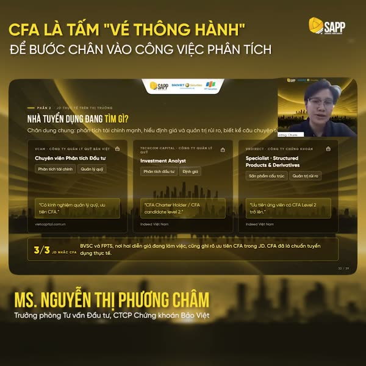
🎫 CFA LÀ “TẤM VÉ” VÀO PHÒNG PHÂN TÍCH! 👉Kiểm tra năng lực của bạn tại: https://hubs.ly/Q04sW4zW0 ------------------------------ Có kinh nghiệm trong ngành tài chính chưa chắc đã đủ để chuyển sang khối…
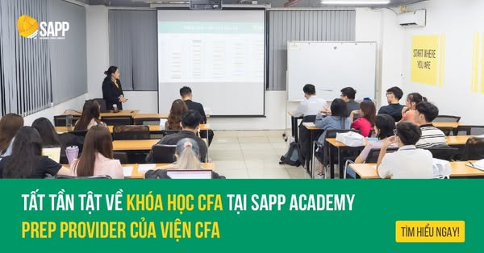
🔥 Hơn 650 học viên khóa học CFA tại SAPP đã xuất sắc lọt TOP 10% thế giới và PASS CFA NGAY LẦN ĐẦU - BÍ KÍP LÀ GÌ? 👉 Tìm hiểu tất tần tật thông tin về khóa học CFA tại SAPP: https://sapp.edu.vn/bai-v…
Trang đích
Nhận xét: 6 trang đích khác nhau, phần lớn là Bài viết / PR. 6/6 trang web có Meta Pixel (có đo chuyển đổi).
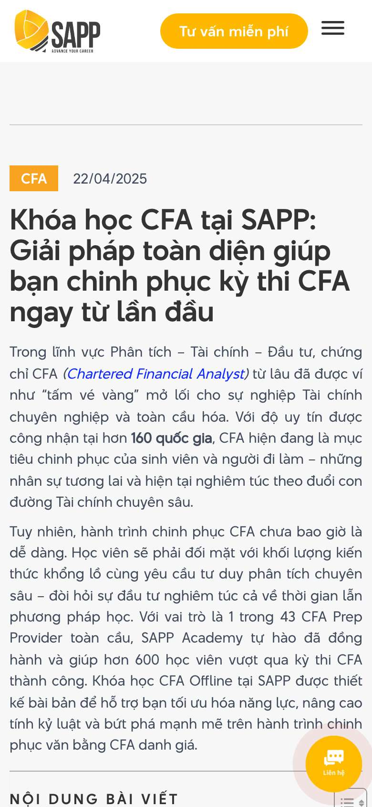
Khóa học CFA tại SAPP: Giải pháp toàn diện giúp bạn chinh phục kỳ thi CFA ngay từ lần đầu
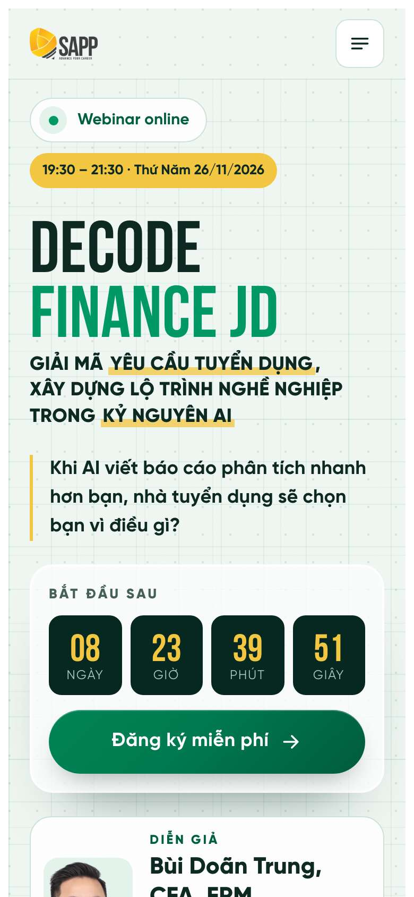
Decode Finance JD: Giải mã yêu cầu tuyển dụng | SAPP
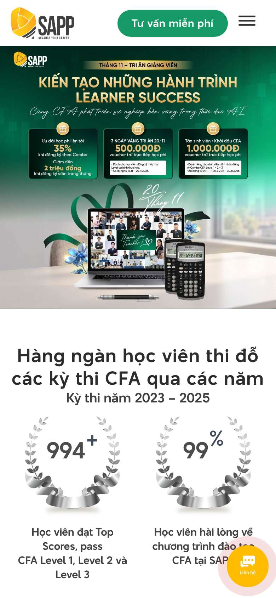
Khoá học CFA Blended

Khoá học CFA Blended

Kiểm tra năng lực đầu vào CFA MIỄN PHÍ - SAPP Academy
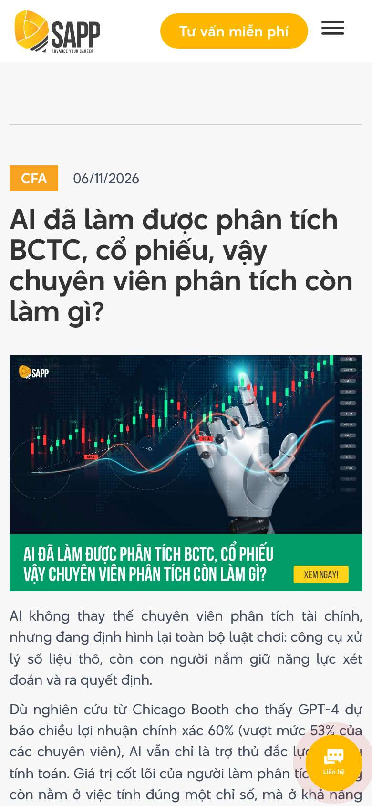
AI đã làm được phân tích BCTC, cổ phiếu, vậy chuyên viên phân tích còn làm gì?
CFA Online - SAPP Academy
CFA Online - SAPP Academy Học viện đào tạo hàng đầu Việt Nam · 13958 likeLoại chiến dịch → chủ đề → trang đích
Tầng phễu theo CTA/đích đến: Nhận biết 0% · Cân nhắc 50% · Chuyển đổi 50%. % tính trên số QC, không phải ngân sách hay kết quả chuyển đổi.
Nhận xét: CFA Online - SAPP Academy chủ yếu chạy Traffic → landing (50% QC), xoáy vào chủ đề Miễn phí / quà tặng và dẫn về Trang thông tin / sản phẩm · sapp.edu.vn.
Số mẫu có QC mới theo 7 ngày
Nhận xét: Đã chững lại: không có mẫu mới trong 2 tuần, trước đó có 2 mẫu.
Ưu đãi trích từ caption (số QC)
Không thấy con số ưu đãi.
Mẫu có tín hiệu đáng chú ý · 2 / 2 mẫu
Xếp theo thời gian duy trì và số QC liên quan. Đây là tín hiệu về mức độ duy trì/triển khai, không phải bằng chứng về chi tiêu, tương tác trên bài hay hiệu quả kinh doanh.
Nhận xét: Mẫu có tín hiệu duy trì đáng chú ý nhất đã chạy 20 ngày với 1 QC: Nhiều ảnh, chủ đề Miễn phí / quà tặng. 1/2 mẫu đứng đầu là video.

1 link duy nhất: 👉 https://hubs.ly/Q04rNxPV0 Học thử MIỄN PHÍ CFA Online Combo 3 Levels trên LMS Pro với 100% giảng viên CFA Charterholder 👉 Dành cho những ai muốn bắt đầu hành trình chinh phục CFA nh…
“Người ta có nhắc về việc có CFA là một ưu thế” - BÍ QUYẾT ĐẠT OFFER QUẢN LÝ RỦI RO TẠI SỞ GIAO DỊCH HÀNG HÓA MXV NGAY LẦN ĐẦU ỨNG TUYỂN CỦA MỘT SINH VIÊN TAY NGANG. Nguyễn Hải Đăng - Top Score 1830…
Trang đích
Nhận xét: 1 trang đích khác nhau, phần lớn là Trang thông tin / sản phẩm. 0/1 trang web có Meta Pixel (không thấy đo chuyển đổi).

ACCA - SAPP Academy
ACCA - SAPP Academy Học viện Đào tạo ACCA Hàng đầu Việt Nam · 35202 likeLoại chiến dịch → chủ đề → trang đích
Tầng phễu theo CTA/đích đến: Nhận biết 30% · Cân nhắc 36% · Chuyển đổi 34%. % tính trên số QC, không phải ngân sách hay kết quả chuyển đổi.
Nhận xét: ACCA - SAPP Academy chủ yếu chạy Tương tác / video view (30% QC), xoáy vào chủ đề Miễn phí / quà tặng và dẫn về Trang Facebook. Có QC ở đủ 3 tầng phễu theo CTA/đích đến; dữ liệu không cho biết đối tượng nhắm chọn hay hành trình thực tế sau cú nhấp.
Số mẫu có QC mới theo 7 ngày
Nhận xét: Đang tăng tốc: 26 mẫu mới trong 2 tuần gần nhất, so với 11 mẫu trong 4 tuần trước đó.
Ưu đãi trích từ caption (số QC)
Nhận xét: Ưu đãi chủ lực: quà tiền 1 triệu, 50 triệu.
| Tiền / quà | 1 triệu (1), 50 triệu (1) |
Mẫu có tín hiệu đáng chú ý · 8 / 38 mẫu
Xếp theo thời gian duy trì và số QC liên quan. Đây là tín hiệu về mức độ duy trì/triển khai, không phải bằng chứng về chi tiêu, tương tác trên bài hay hiệu quả kinh doanh.
Nhận xét: Mẫu có tín hiệu duy trì đáng chú ý nhất đã chạy 82 ngày với 2 QC: Ảnh đơn, chủ đề Miễn phí / quà tặng.

ACCA - “Tấm Passport Thông Hành” Giúp Nhân Sự Trong Thế Giới Kế, Kiểm, Tài Chính Thăng Tiến Thần Tốc Sở hữu trong tay “bảo chứng chuyên môn” đầy quyền lực #ACCA, bạn sẽ có cơ hội: 🔥 Nắm đặc quyền ưu…
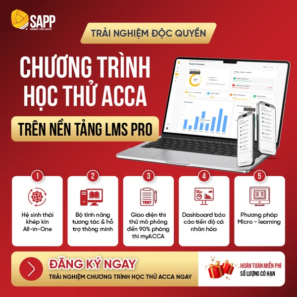
🚀 Bệ phóng săn vé Big4 & MNCs: Học thử ACCA Online hoàn toàn miễn phí trên nền tảng đào tạo LMS Pro chuẩn quốc tế của SAPP. 👉 Giữ suất học thử 0Đ ngay: https://hubs.ly/Q04z-7BZ0 ---------------------…

[GIVEAWAY] Ở ĐÂY CÓ FULL CẨM NANG SĂN VÉ BIG4, NON-BIG & MANAGEMENT TRAINEE! 👉 Tải trọn bộ PDF 20 trang miễn phí: https://hubs.ly/Q04zpddB0 Internship Season đang tới rất gần - Bạn đã sẵn sàng "xử đ…
💥 [GIVEAWAY MIỄN PHÍ] CẨM NANG TRỌN BỘ KIẾN THỨC FA/F3 ACCA (BẢN DỊCH TIẾNG VIỆT 2026) 👉 Tạm biệt nỗi sợ Tiếng Anh chuyên ngành - Làm chủ môn F3 ngay từ Năm 1 & Năm 2! Bạn bối rối vì rào cản từ vựng T…
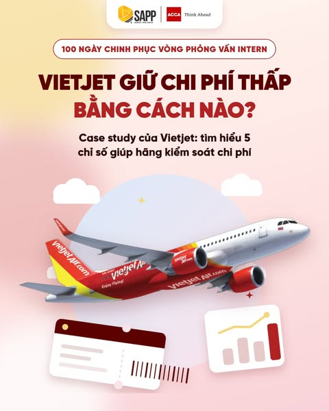
📊📊📊 Từ BCTC đến đề xuất kinh doanh: sinh viên cần chuẩn bị năng lực gì cho FP&A Intern? 👇Hãy để SAPP gửi bạn Case Vietjet - luyện tập khả năng hiểu mô hình, chọn chỉ số, so sánh và đề xuất dựa trên s…

2K6, 2K7 HỌC KẾ – KIỂM – TÀI CHÍNH: MUỐN VÀO BIG 4, MNC HAY MANAGEMENT TRAINEE CẦN CHUẨN BỊ GÌ? 👉 Nhận tư vấn miễn phí lộ trình ACCA cá nhân hóa theo định hướng nghề nghiệp tại: https://hubs.ly/Q04Dyt…

🎯 Chiến Lược Học ACCA Cho Sinh Viên Năm 3: Chọn Môn Nào Để Tối Ưu Theo Định Hướng Internship? Đến năm 3, khi cuộc đua internship bắt đầu nóng lên, khoảng cách giữa các ứng viên không còn nằm ở GPA mà…

🍬🍬🍬 Đi phỏng vấn Audit Intern, nhà tuyển dụng bảo bạn đưa ra một ví dụ và phân tích, bạn sẽ chọn case nào? 👇Vậy để SAPP gửi bạn case Candies World kèm cách phân tích nhé👇
Trang đích
Nhận xét: 29 trang đích khác nhau, phần lớn là Landing có form. 20/27 trang web có Meta Pixel (có đo chuyển đổi).
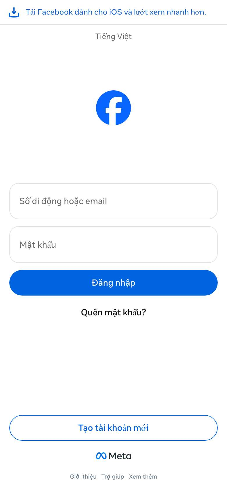
Facebook - Đăng nhập hoặc đăng ký

Facebook - Đăng nhập hoặc đăng ký
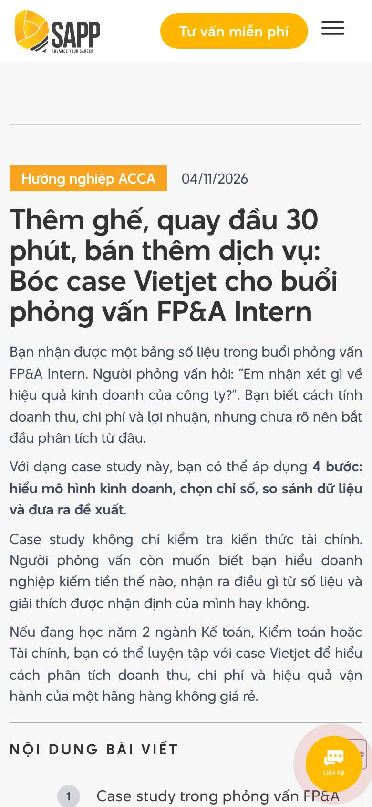
Case study phỏng vấn FP&A Intern: Bóc case Vietjet 4 bước

Học ngành gì để vào Big4? Học trái ngành có được apply?
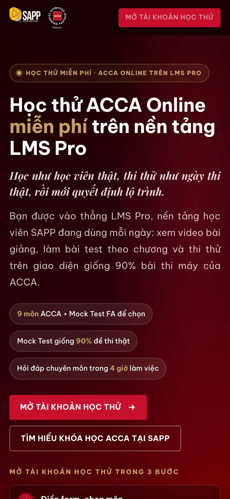
Học Thử ACCA Online Miễn Phí Trên Nền Tảng Mới Của SAPP Academy

Học Thử ACCA Online Miễn Phí Trên Nền Tảng Mới Của SAPP Academy
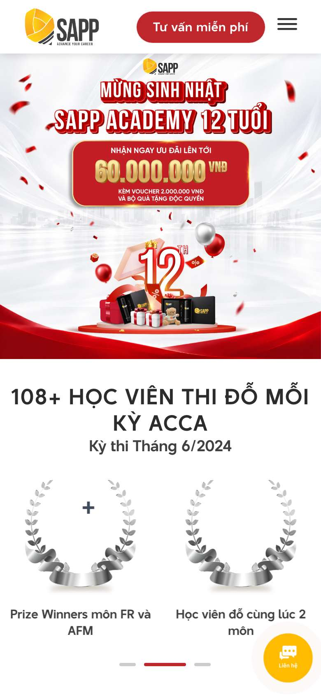
Khoá học ACCA Blended
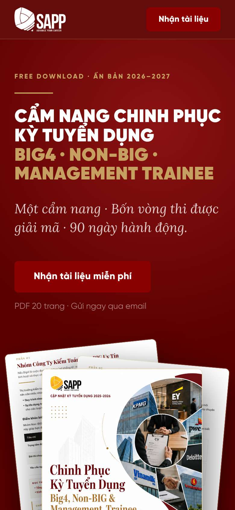
Cẩm nang chinh phục kỳ tuyển dụng Big4, Non-BIG & Management Trainee — SAPP Academy
CMA - SAPP Academy
CMA - SAPP Academy Học viện Đào tạo CMA Hàng đầu Việt Nam · 5231 likeLoại chiến dịch → chủ đề → trang đích
Tầng phễu theo CTA/đích đến: Nhận biết 26% · Cân nhắc 49% · Chuyển đổi 26%. % tính trên số QC, không phải ngân sách hay kết quả chuyển đổi.
Nhận xét: CMA - SAPP Academy chủ yếu chạy Traffic → landing (38% QC), xoáy vào chủ đề Miễn phí / quà tặng và dẫn về Landing có form · share.hsforms.com. Có QC ở đủ 3 tầng phễu theo CTA/đích đến; dữ liệu không cho biết đối tượng nhắm chọn hay hành trình thực tế sau cú nhấp.
Số mẫu có QC mới theo 7 ngày
Nhận xét: Đang tăng tốc: 21 mẫu mới trong 2 tuần gần nhất, so với 18 mẫu trong 4 tuần trước đó.
Ưu đãi trích từ caption (số QC)
Không thấy con số ưu đãi.
Mẫu có tín hiệu đáng chú ý · 8 / 39 mẫu
Xếp theo thời gian duy trì và số QC liên quan. Đây là tín hiệu về mức độ duy trì/triển khai, không phải bằng chứng về chi tiêu, tương tác trên bài hay hiệu quả kinh doanh.
Nhận xét: Mẫu có tín hiệu duy trì đáng chú ý nhất đã chạy 21 ngày với 1 QC: Ảnh đơn, chủ đề Miễn phí / quà tặng. 1/8 mẫu đứng đầu là video.

🎯 CHỈ TỪ 3 THÁNG - XÂY DỰNG NỀN TẢNG TƯ DUY FP&A CHO NGƯỜI ĐI LÀM 👉 Đăng ký tư vấn khóa FP&A Online: https://hubs.ly/Q04z0qQm0 Phân tích được số liệu chưa đồng nghĩa với làm tốt FP&A. Một người làm …

Kế Toán Chuyển Hướng Tài Chính: Học CMA Hoa Kỳ Hay CPA Úc Sẽ Phù Hợp Hơn? ➤ Tất cả thông tin về khoá học CMA có tại: https://hubs.ly/Q03W_9rw0 Khi muốn nâng cao chuyên môn trong lĩnh vực Tài chính và…

CMA Hoa Kỳ Hay CPA Úc: Nếu Muốn Đi Sâu Vào Quản Trị Tài Chính, Nên Chọn Gì? ➤ Nhận thông tin khoá học CMA ngay tại: https://hubs.ly/Q04xcZyt0 CMA và CPA đều là chứng chỉ quốc tế trong Kế toán - Tài …
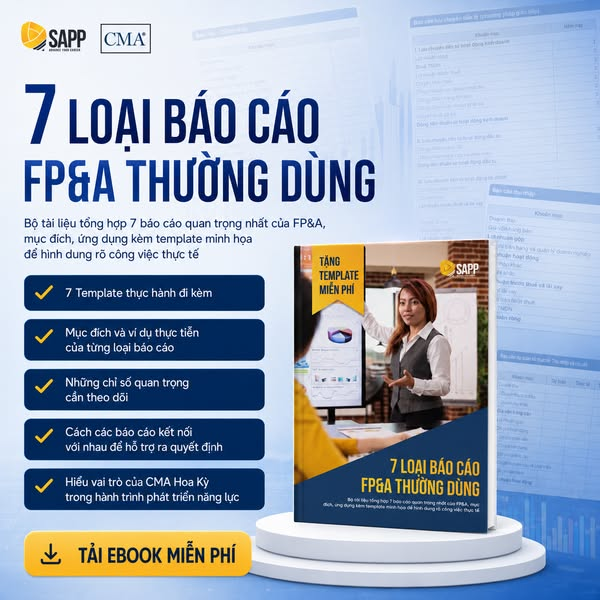
[TẶNG 7 TEMPLATE] HIỂU FP&A QUA EBOOK 7 LOẠI BÁO CÁO THƯỜNG DÙNG 🔻 Download ngay: https://hubs.ly/Q04kRGs40 Trong doanh nghiệp hiện đại, FP&A không chỉ tổng hợp số liệu. Vai trò của họ là giúp ban l…
[TẶNG 7 TEMPLATE] HIỂU FP&A QUA EBOOK 7 LOẠI BÁO CÁO THƯỜNG DÙNG 🔻 Download ngay: https://hubs.ly/Q04kRGsn0 Trong doanh nghiệp hiện đại, FP&A không chỉ tổng hợp số liệu. Vai trò của họ là giúp ban l…

[FREE DOWNLOAD] CẨM NANG KẾ TOÁN QUẢN TRỊ - 15 CÂU HỎI THƯỜNG GẶP TRONG QUÁ TRÌNH LẬP NGÂN SÁCH 🔽 Download ngay: https://hubs.ly/Q04nn3570 Cứ mỗi mùa lập kế hoạch ngân sách gõ cửa, phòng Kế toán và…
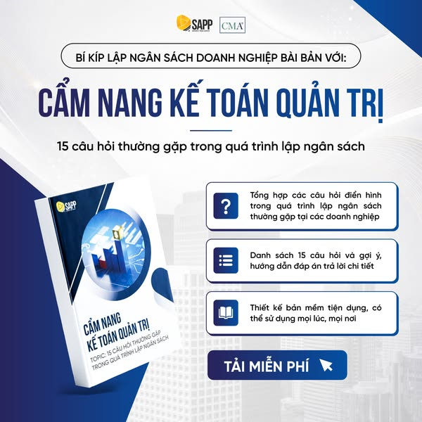
[FREE DOWNLOAD] CẨM NANG KẾ TOÁN QUẢN TRỊ - 15 CÂU HỎI THƯỜNG GẶP TRONG QUÁ TRÌNH LẬP NGÂN SÁCH 🔽 Download ngay: https://hubs.ly/Q04ntCcJ0 Cứ mỗi mùa lập kế hoạch ngân sách gõ cửa, phòng Kế toán và…
[TẢI NGAY] CHECKLIST 12 NĂNG LỰC KẾ TOÁN CẦN NÂNG CẤP TRONG THỜI ĐẠI AI 🔽 Nhận checklist miễn phí tại đây Làm Kế toán nhiều năm không đồng nghĩa với việc Anh/Chị đã biết rõ năng lực nào cần tiếp tục…
Trang đích
Nhận xét: 31 trang đích khác nhau, phần lớn là Landing có form. 15/29 trang web có Meta Pixel (có đo chuyển đổi).
Facebook - Đăng nhập hoặc đăng ký
Khoá học Hoạch định và Phân tích Tài chính (FP&A Online)
Trang cá nhân của CMA - SAPP Academy Học viện Đào tạo CMA Hàng đầu Việt Nam

Form

Form

Khóa học CMA - Chương trình đào tạo Kế toán Quản trị Hoa Kỳ
Form
Khóa học CMA - Chương trình đào tạo Kế toán Quản trị Hoa Kỳ
SAPP Academy - IFRS
SAPP Academy - Chuẩn mực lập Báo cáo Tài chính quốc tế IFRS · 5693 likeLoại chiến dịch → chủ đề → trang đích
Tầng phễu theo CTA/đích đến: Nhận biết 24% · Cân nhắc 20% · Chuyển đổi 56%. % tính trên số QC, không phải ngân sách hay kết quả chuyển đổi.
Nhận xét: SAPP Academy - IFRS chủ yếu chạy Lead / chuyển đổi trên web (44% QC), xoáy vào chủ đề Chứng chỉ / sự nghiệp và dẫn về Landing có form · sapp.edu.vn. Có QC ở đủ 3 tầng phễu theo CTA/đích đến; dữ liệu không cho biết đối tượng nhắm chọn hay hành trình thực tế sau cú nhấp.
Số mẫu có QC mới theo 7 ngày
Nhận xét: Đang tăng tốc: 10 mẫu mới trong 2 tuần gần nhất, so với 8 mẫu trong 4 tuần trước đó.
Ưu đãi trích từ caption (số QC)
Không thấy con số ưu đãi.
Mẫu có tín hiệu đáng chú ý · 8 / 18 mẫu
Xếp theo thời gian duy trì và số QC liên quan. Đây là tín hiệu về mức độ duy trì/triển khai, không phải bằng chứng về chi tiêu, tương tác trên bài hay hiệu quả kinh doanh.
Nhận xét: Mẫu có tín hiệu duy trì đáng chú ý nhất đã chạy 20 ngày với 3 QC: Video, chủ đề Chứng chỉ / sự nghiệp. 6/8 mẫu đứng đầu là video.
Tài Sản Nhà Máy Dưới Góc Nhìn IFRS: Khi Kế Toán Trưởng Không Thể Chỉ Dựa Vào Chứng Từ Một bộ hồ sơ tài sản đầy đủ chưa chắc đã đủ để trả lời câu hỏi về con số trên BCTC. Với tài sản cố định tại do…
Nhiều kế toán tại doanh nghiệp SME cho rằng rào cản lớn nhất khi ứng tuyển vào doanh nghiệp FDI là ngoại ngữ hoặc yêu cầu về kinh nghiệm. Nhưng trên thực tế, khoảng cách lớn hơn lại nằm ở "ngôn ngữ kế…

[TẢI MIỄN PHÍ] Bộ Tài Liệu “Tổng Hợp Kiến Thức IFRS Qua Sơ Đồ Tư Duy” - Nhân Sự Kế toán - Tài Chính Không Thể Bỏ Lỡ >>> Đăng ký nhận tài liệu miễn phí tại: https://hubs.ly/Q03Jtwvn0 💥 2025 là khởi đ…

Có một thực tế khá phổ biến trong môi trường FDI: nhiều kế toán đã làm việc với IFRS nhưng vẫn thiếu tự tin khi phải xử lý những giao dịch chưa có tiền lệ hoặc không có sẵn hướng dẫn từ tập đoàn. Lý d…
Checklist 10 Điểm Chênh Lệch VAS - IFRS Cần Rà Soát Tại Doanh Nghiệp Sản Xuất Tải tài liệu MIỄN PHÍ ngay! Lập BCTC song song theo VAS và IFRS đặt ra một bài toán không nhỏ cho Kế toán trưởng: số liệ…
Kế Toán Trưởng Đừng Vội Khóa Sổ Năm 2026 Nếu Thiếu Phần Giải Trình Theo Thông Tư 99 Thời điểm rà soát số liệu cuối năm 2026 đang đến gần - đánh dấu kỳ Báo cáo tài chính năm đầu tiên các doanh nghiệp …
KTT Ứng Dụng AI Như Nào Để Chủ Động Hơn Trong Cuộc Chuyển Đổi IFRS? Theo khảo sát của KPMG trên 1.800 doanh nghiệp toàn cầu, 72% đã thử nghiệm hoặc đang ứng dụng AI trong lập báo cáo tài chính. Con s…
KTT Ứng Dụng AI Như Nào Để Chủ Động Hơn Trong Cuộc Chuyển Đổi IFRS? Theo khảo sát của KPMG trên 1.800 doanh nghiệp toàn cầu, 72% đã thử nghiệm hoặc đang ứng dụng AI trong lập báo cáo tài chính. Con s…
Trang đích
Nhận xét: 16 trang đích khác nhau, phần lớn là Landing có form. 15/15 trang web có Meta Pixel (có đo chuyển đổi).
Facebook - Đăng nhập hoặc đăng ký
Tổng hợp kiến thức IFRS qua sơ đồ tư duy

Doanh nghiệp FDI và xu hướng tuyển dụng kế toán thông thạo IFRS

IFRS là gì? Tầm quan trọng của IFRS hiện nay

IFRS là gì? Tầm quan trọng của IFRS hiện nay
Khoá học IFRS Online

IFRS là gì? Tầm quan trọng của IFRS hiện nay
Khoá học IFRS Online
FTMS Hồ Chí Minh
FTMS Hồ Chí Minh · 18383 likeLoại chiến dịch → chủ đề → trang đích
Tầng phễu theo CTA/đích đến: Nhận biết 7% · Cân nhắc 0% · Chuyển đổi 93%. % tính trên số QC, không phải ngân sách hay kết quả chuyển đổi.
Nhận xét: FTMS Hồ Chí Minh chủ yếu chạy Tin nhắn (93% QC), xoáy vào chủ đề Giá / học phí / ưu đãi và dẫn về Messenger.
Số mẫu có QC mới theo 7 ngày
Nhận xét: Nhịp ra mẫu đều: 3 mẫu mới trong 2 tuần gần nhất, 4 mẫu trong 4 tuần trước đó.
Ưu đãi trích từ caption (số QC)
Nhận xét: Ưu đãi chủ lực: quà tiền 33 triệu, 2 triệu.
| Tiền / quà | 33 triệu (4), 2 triệu (1) |
Mẫu có tín hiệu đáng chú ý · 8 / 33 mẫu
Xếp theo thời gian duy trì và số QC liên quan. Đây là tín hiệu về mức độ duy trì/triển khai, không phải bằng chứng về chi tiêu, tương tác trên bài hay hiệu quả kinh doanh.
Nhận xét: Mẫu có tín hiệu duy trì đáng chú ý nhất đã chạy 215 ngày với 4 QC: Ảnh đơn, chủ đề Giá / học phí / ưu đãi.

🎓 SO SÁNH CÁC HÌNH THỨC HỌC TẠI FTMS GLOBAL Linh hoạt hình thức - Trọn vẹn trải nghiệm - Học cùng chuyên gia Tại FTMS Global, mỗi hình thức học không chỉ là một cách tiếp cận kiến thức, mà còn là cơ …
🔎 10 ĐIỀU SINH VIÊN TÀI CHÍNH – KẾ TOÁN – KIỂM TOÁN BẮT BUỘC PHẢI HIỂU VỀ IFRS TỪ 2026 IFRS không còn là câu chuyện “chuẩn bị cho tương lai”. 2026 chính là thời điểm IFRS bước thẳng vào thực tế nghề …
CMA cho người bận rộn: 6 tháng thăng hạng sự nghiệp tài chính! 💰 2,1 tỷ đồng/năm - Mức thu nhập trung vị toàn cầu của các chuyên gia tài chính sở hữu CMA. Theo khảo sát lương từ Institute of Managem…

🎉[𝐅𝐓𝐌𝐒 𝐆𝐋𝐎𝐁𝐀𝐋 𝐈𝐒 𝐎𝐅𝐅𝐈𝐂𝐈𝐀𝐋𝐋𝐘 𝐑𝐄𝐂𝐎𝐆𝐍𝐈𝐙𝐄𝐃 𝐀𝐒 𝐀 𝐂𝐅𝐀 𝐈𝐍𝐒𝐓𝐈𝐓𝐔𝐓𝐄 𝐏𝐑𝐄𝐏 𝐏𝐑𝐎𝐕𝐈𝐃𝐄𝐑] 🎉 FTMS Global chính thức ký kết hợp tác chiến lược với CFA Institute, khẳng định vai trò trong hệ sinh thái đào tạo tài chính …

ĐÂU LÀ “KẺ THÙ” LỚN NHẤT CỦA NHÀ ĐẦU TƯ? Trong đầu tư, “đối thủ” nguy hiểm nhất không phải là thị trường! 👉 Đó là cảm xúc của chính bạn. 📉 Khi thị trường giảm mạnh, nỗi sợ khiến nhà đầu tư bán tháo…

(𝐸𝑛𝑔𝑙𝑖𝑠ℎ 𝑣𝑒𝑟𝑠𝑖𝑜𝑛 𝑏𝑒𝑙𝑜𝑤) ✨ VIỆN CFA x FTMS GLOBAL | KẾT NỐI TRI THỨC - MỞ RỘNG HỢP TÁC 🤝 Vừa qua, FTMS Global đã vinh dự chào đón đại diện Viện CFA trong buổi gặp gỡ và trao đổi tại văn phòng. Không c…

✨ FTMS GLOBAL - GẦN 40 NĂM KIẾN TẠO CHUẨN MỰC ĐÀO TẠO KẾ TOÁN - KIỂM TOÁN - TÀI CHÍNH ✨ Với gần 40 năm hình thành và phát triển, FTMS Global tự hào là đơn vị tiên phong trong lĩnh vực đào tạo Kế toán…
(𝐸𝑛𝑔𝑙𝑖𝑠ℎ 𝑣𝑒𝑟𝑠𝑖𝑜𝑛 𝑏𝑒𝑙𝑜𝑤) 🤝 FTMS & IMA: Khi insight người học trở thành nền tảng cho những hợp tác giá trị Trong bối cảnh ngành kế toán - tài chính đang chuyển mình mạnh mẽ theo hướng toàn cầu hóa, nă…
FTMS Hà Nội
FTMS Hà Nội · 70027 likeLoại chiến dịch → chủ đề → trang đích
Tầng phễu theo CTA/đích đến: Nhận biết 6% · Cân nhắc 11% · Chuyển đổi 83%. % tính trên số QC, không phải ngân sách hay kết quả chuyển đổi.
Nhận xét: FTMS Hà Nội chủ yếu chạy Tin nhắn (78% QC), xoáy vào chủ đề Miễn phí / quà tặng và dẫn về Messenger. Có QC ở đủ 3 tầng phễu theo CTA/đích đến; dữ liệu không cho biết đối tượng nhắm chọn hay hành trình thực tế sau cú nhấp.
Số mẫu có QC mới theo 7 ngày
Nhận xét: Đang tăng tốc: 14 mẫu mới trong 2 tuần gần nhất, so với 2 mẫu trong 4 tuần trước đó.
Ưu đãi trích từ caption (số QC)
Không thấy con số ưu đãi.
Mẫu có tín hiệu đáng chú ý · 8 / 23 mẫu
Xếp theo thời gian duy trì và số QC liên quan. Đây là tín hiệu về mức độ duy trì/triển khai, không phải bằng chứng về chi tiêu, tương tác trên bài hay hiệu quả kinh doanh.
Nhận xét: Mẫu có tín hiệu duy trì đáng chú ý nhất đã chạy 180 ngày với 3 QC: Ảnh đơn, chủ đề Giá / học phí / ưu đãi. 4/8 mẫu đứng đầu là video.
LỘ TRÌNH PASS CFA LEVEL 1 NGAY LẦN ĐẦU TIÊN 300+ HV ÁP DỤNG THÀNH CÔNG HÀNG NĂM >>>Chi tiết: https://ftmsglobal.edu.vn/khai-giang-khoa-hoc-cfa-hn Bạn đang có kế hoạch thi CFA Level 1 cuối năm 2026, …
(𝐸𝑛𝑔𝑙𝑖𝑠ℎ 𝑣𝑒𝑟𝑠𝑖𝑜𝑛 𝑏𝑒𝑙𝑜𝑤) ✨ VIỆN CFA x FTMS GLOBAL | KẾT NỐI TRI THỨC - MỞ RỘNG HỢP TÁC 🤝 Vừa qua, FTMS Global đã vinh dự chào đón đại diện Viện CFA trong buổi gặp gỡ và trao đổi tại văn phòng. Không c…
📸 RECAP WORKSHOP: “NEXTGEN PATHWAY – ĐỊNH HÌNH SỰ NGHIỆP TÀI CHÍNH, KẾ TOÁN TRONG THỜI ĐẠI SỐ” 🤝 Vừa qua, Workshop “NEXTGEN PATHWAY – Định hình sự nghiệp Tài chính, Kế toán trong thời đại số” đã diễn…
🎓 LỘ TRÌNH HỌC CFA DÀNH CHO SINH VIÊN NĂM 3 Bước đi chiến lược để bứt tốc trước khi ra trường ❓Năm 3 đại học là giai đoạn bản lề: Bạn bắt đầu tìm thực tập, chỉnh sửa CV, nghĩ về công việc đầu tiên –…
🌿 FTMS × UEB: ĐỊNH HƯỚNG NGHỀ NGHIỆP CHO SINH VIÊN NĂM 2 Ngày 12 và Ngày 14/11/2025, Công ty Cổ phần Đào tạo FTMS Global (“FTMS”) đã đến thăm và chia sẻ cùng các bạn sinh viên năm 2 của Trường Đại họ…
Cùng “đột nhập” văn phòng mới của FTMS Global nhé! 🤩 #FTMS #ACCA #CFA #CMA #IFRS
🧑🎓[𝐅𝐓𝐌𝐒’𝐒 𝐈𝐍𝐒𝐏𝐈𝐑𝐄𝐑] TẠ ĐỨC MINH - QUÁN QUÂN I-INVEST 2026 🏆 Hành trình chinh phục I-INVEST! 2026 chưa bao giờ là trải nghiệm dễ dàng! Trong buổi chia sẻ đầy cảm xúc về hành trình chạm tay đến đỉnh vi…
[FTMS INSPIRER] LÝ HOÀNG KHÁNH HÀ: VƯỢT RÀO CẢN THỜI GIAN & ĐỊA LÝ ĐỂ CHINH PHỤC TOP 25 TOÀN CẦU MÔN FINANCIAL REPORTING (FR) ✨ Là một kế toán đang làm việc toàn thời gian tại Hà Lan, Khánh Hà theo d…
Trang đích
Nhận xét: 3 trang đích khác nhau, phần lớn là Trang Facebook. 1/2 trang web có Meta Pixel (có đo chuyển đổi).
UniTutor - UniCFA
UniTutor · 10648 likeLoại chiến dịch → chủ đề → trang đích
Tầng phễu theo CTA/đích đến: Nhận biết 0% · Cân nhắc 0% · Chuyển đổi 100%. % tính trên số QC, không phải ngân sách hay kết quả chuyển đổi.
Nhận xét: UniTutor - UniCFA chủ yếu chạy Tin nhắn (100% QC), xoáy vào chủ đề Giá / học phí / ưu đãi và dẫn về Messenger. 100% QC hướng tới hành động chuyển đổi theo CTA/đích đến; cách phân loại này không khẳng định nội dung thiếu vai trò nuôi dưỡng.
Số mẫu có QC mới theo 7 ngày
Nhận xét: Đang tăng tốc: 8 mẫu mới trong 2 tuần gần nhất, so với 5 mẫu trong 4 tuần trước đó.
Ưu đãi trích từ caption (số QC)
| Hạn | 28/11 (1) |
Mẫu có tín hiệu đáng chú ý · 8 / 13 mẫu
Xếp theo thời gian duy trì và số QC liên quan. Đây là tín hiệu về mức độ duy trì/triển khai, không phải bằng chứng về chi tiêu, tương tác trên bài hay hiệu quả kinh doanh.
Nhận xét: Mẫu có tín hiệu duy trì đáng chú ý nhất đã chạy 40 ngày với 1 QC: Ảnh đơn, chủ đề Chứng chỉ / sự nghiệp. 5/8 mẫu đứng đầu là video.
CHÚC MỪNG HỌC VIÊN UNICFA ĐÃ PASS CFA LEVEL I - AUGUST 2026 🎉 Kết quả CFA Level I kỳ tháng 8/2026 đã chính thức được công bố, và UniCFA rất vui khi học viên của Uni đã chinh phục thành công cột mốc C…
CFA VS ACCA: NÊN CHỌN 1 HAY CẢ HAI CFA và ACCA đã là 2 chứng chỉ quá quen thuộc với các bạn sinh viên Tài chính - Kế kiếm, là một điểm gần như là must have nếu muốn apply vào Big Corp.Câu hỏi lựa chọ…
HỌC TÀI CHÍNH hay thậm chí HỌC TRÁI NGÀNH: MUỐN THEO ĐUỔI TÀI CHÍNH THÌ PHẢI LÀM SAO ⁉️ Đối với những sinh viên đang học chuyên ngành Tài chính hay thậm chí từ ngành khác muốn "đá chéo sân", có một s…
HỌC 4 NĂM ĐẠI HỌC KINH TẾ VẪN ÔN CFA⁉️ Fomo hay thực sự bắt buộc? Đại học cho mình nền tảng, còn CFA đi sâu hơn vào những kiến thức và cách tư duy có tính ứng dụng trong đầu tư, phân tích tài chính v…
HỌC CFA KHÔNG CHỈ ĐỂ LÀM ĐẸP CV: ĐÂU MỚI LÀ GIÁ TRỊ THẬT SỰ CỦA CHỨNG CHỈ NÀY? 👀 Đã bao giờ bạn muốn theo đuổi ngành Finance, thường xuyên bắt gặp những vị trí như Financial Analyst, Investment Analy…
💸 HỌC + THI ACCA TỐN VÀI CHỤC TRIỆU? - LÀM SAO ĐỂ ĐẦU TƯ HIỆU QUẢ VỚI NGÂN SÁCH SINH VIÊN? ACCA là một trong những hành trang giúp sinh viên xây dựng nền tảng chuyên môn và gia tăng lợi thế khi ứng t…
MỘT KHÓA ACCA “ĐÁNG TIỀN” THỰC SỰ NẰM Ở ĐÂU? 🤔 Không hẳn ở việc khóa học có thật nhiều giờ, mà ở chỗ mỗi giờ học có giải quyết được đúng vấn đề người học đang cần hay không. 📚 Với ACCA, chỉ nghe the…
CHỈ CÒN 29 NGÀY ĐẾN KỲ THI ACCA T12 - BẠN ĐÃ BIẾT MÌNH ĐANG CÒN YẾU Ở ĐÂU CHƯA? 👇 Giai đoạn này, điều quan trọng không còn là cố nhồi thêm thật nhiều kiến thức, mà là kiểm tra xem mình còn hổng kiến…
Taca - khoá BCTC & thuế
Taca In-Depth Tax Academy · 10808 likeLoại chiến dịch → chủ đề → trang đích
Tầng phễu theo CTA/đích đến: Nhận biết 0% · Cân nhắc 0% · Chuyển đổi 100%. % tính trên số QC, không phải ngân sách hay kết quả chuyển đổi.
Nhận xét: Taca - khoá BCTC & thuế chủ yếu chạy Tin nhắn (100% QC), xoáy vào chủ đề Chứng chỉ / sự nghiệp và dẫn về Messenger. 100% QC hướng tới hành động chuyển đổi theo CTA/đích đến; cách phân loại này không khẳng định nội dung thiếu vai trò nuôi dưỡng.
Số mẫu có QC mới theo 7 ngày
Nhận xét: Không có mẫu hoàn toàn mới trong 6 tuần, chỉ duy trì mẫu cũ.
Ưu đãi trích từ caption (số QC)
Không thấy con số ưu đãi.
Mẫu có tín hiệu đáng chú ý · 1 / 1 mẫu
Xếp theo thời gian duy trì và số QC liên quan. Đây là tín hiệu về mức độ duy trì/triển khai, không phải bằng chứng về chi tiêu, tương tác trên bài hay hiệu quả kinh doanh.
Nhận xét: Mẫu có tín hiệu duy trì đáng chú ý nhất đã chạy 319 ngày với 3 QC: Ảnh đơn, chủ đề Chứng chỉ / sự nghiệp.

Audit Care Vietnam - IFRS/ACCA
Audit Care Vietnam - ACV · 3674 likeLoại chiến dịch → chủ đề → trang đích
Tầng phễu theo CTA/đích đến: Nhận biết 14% · Cân nhắc 0% · Chuyển đổi 86%. % tính trên số QC, không phải ngân sách hay kết quả chuyển đổi.
Nhận xét: Audit Care Vietnam - IFRS/ACCA chủ yếu chạy Tin nhắn (86% QC), xoáy vào chủ đề Webinar / sự kiện / hội thảo và dẫn về Messenger.
Số mẫu có QC mới theo 7 ngày
Nhận xét: Đang tăng tốc: 3 mẫu mới trong 2 tuần gần nhất, so với 0 mẫu trong 4 tuần trước đó.
Ưu đãi trích từ caption (số QC)
| Hạn | 11/11/2026 (1) |
Mẫu có tín hiệu đáng chú ý · 5 / 5 mẫu
Xếp theo thời gian duy trì và số QC liên quan. Đây là tín hiệu về mức độ duy trì/triển khai, không phải bằng chứng về chi tiêu, tương tác trên bài hay hiệu quả kinh doanh.
Nhận xét: Mẫu có tín hiệu duy trì đáng chú ý nhất đã chạy 65 ngày với 1 QC: Nhiều ảnh, chủ đề Phương pháp / công cụ. 2/5 mẫu đứng đầu là video.
HƠN 340 ĐIỂM CẦU CÙNG HỌC CÁCH ĐƯA AI VÀO CÔNG VIỆC TÀI CHÍNH – KẾ TOÁN – THUẾ! ⚡ Chiều 17/9/2026, AuditCare Việt Nam (ACV) đồng hành cùng Tổng công ty Điện lực miền Bắc (EVNNPC) triển khai Hội nghị …

🌍 CÙNG LAN TỎA CƠ HỘI HỌC VÀ THI CERTIFR ACCA BẰNG TIẾNG VIỆT Tạp chí Kinh tế – Tài chính Online thuộc Bộ Tài chính đã đăng tải thông tin về cơ hội học và thi chứng chỉ CertIFR ACCA bằng tiếng Việt d…
HỢP ĐỒNG ĐÃ KÝ, VÌ SAO KẾ TOÁN VẪN CHƯA THỂ THANH TOÁN? Bộ phận mua hàng giữ hợp đồng. Bộ phận sử dụng giữ biên bản nghiệm thu. Kế toán đến hạn thanh toán vẫn phải hỏi từng phòng để tập hợp hồ sơ. Kh…

📣 SÁNG MAI 18/11 | HỘI THẢO QUẢN TRỊ NHÂN SỰ SỐ – CÓ THAM DỰ ONLINE QUA ZOOM Đã có phần mềm nhân sự và kế toán, vì sao đến kỳ chốt lương hai phòng vẫn phải gửi Excel qua lại? Khi cần giải trình chi p…
🚀 LÀM KẾ TOÁN SẢN XUẤT MÀ CHƯA TỰ TIN TÍNH GIÁ THÀNH? ĐỪNG BỎ LỠ K5! 🔥 MS113 – KẾ TOÁN GIÁ THÀNH ỨNG DỤNG AI ✅ Học trực tiếp online cùng Thủy Nguyễn ACCA ✅ Thực chiến giá thành, kiểm soát chi phí sả…
Trường doanh nhân HBR - tài chính cho lãnh đạo
Trường doanh nhân HBR · 1186790 likeLoại chiến dịch → chủ đề → trang đích
Tầng phễu theo CTA/đích đến: Nhận biết 40% · Cân nhắc 10% · Chuyển đổi 50%. % tính trên số QC, không phải ngân sách hay kết quả chuyển đổi.
Nhận xét: Trường doanh nhân HBR - tài chính cho lãnh đạo chủ yếu chạy Tương tác / video view (40% QC), xoáy vào chủ đề Webinar / sự kiện / hội thảo và dẫn về Không có link. Có QC ở đủ 3 tầng phễu theo CTA/đích đến; dữ liệu không cho biết đối tượng nhắm chọn hay hành trình thực tế sau cú nhấp.
Số mẫu có QC mới theo 7 ngày
Nhận xét: Đang tăng tốc: 7 mẫu mới trong 2 tuần gần nhất, so với 0 mẫu trong 4 tuần trước đó.
Ưu đãi trích từ caption (số QC)
Nhận xét: Ưu đãi chủ lực: quà tiền 2 triệu.
| Tiền / quà | 2 triệu (5) |
Mẫu có tín hiệu đáng chú ý · 7 / 7 mẫu
Xếp theo thời gian duy trì và số QC liên quan. Đây là tín hiệu về mức độ duy trì/triển khai, không phải bằng chứng về chi tiêu, tương tác trên bài hay hiệu quả kinh doanh.
Nhận xét: Mẫu có tín hiệu duy trì đáng chú ý nhất đã chạy 11 ngày với 1 QC: Video, chủ đề Giá / học phí / ưu đãi. 7/7 mẫu đứng đầu là video.

Sếp đang trả 150–200 triệu/tháng cho phòng Marketing — nhưng không biết tiền đó đang chạy đi đâu? Đây là vòng lặp mà 80% chủ doanh nghiệp SME đang mắc kẹt: → Thuê agency: họ không hiểu sản phẩm, làm l…
🚫ĐỪNG ĐỂ TEAM MARKETING TRỞ THÀNH BỘ PHẬN “Đ.ỐT T.IỀN” MÀ KHÔNG TẠO RA DOANH THU🚫 Sếp đã chi ~100- 200 triệu/ tháng nuôi phòng Marketing. Chạy đủ kênh, thay đủ người, đổi Agency liên tục nhưng doanh t…
🚀 VIETNAM ECOMMERCE SUMMIT 2026: SỰ KIỆN QUỐC GIA MÀ CÁC NHÀ BÁN HÀNG TRÊN SÀN THƯƠNG MẠI ĐIỆN TỬ KHÔNG THỂ BỎ LỠ TRƯỚC THỀM NĂM 2027! Thương mại điện tử đang bước vào giai đoạn cạnh tranh ngày càng …
🔥 [CHÍNH THỨC] CÔNG BỐ DÀN DIỄN GIẢ TẠI SỰ KIỆN VIETNAM ECOMMERCE SUMMIT 2026 Vietnam Ecommerce Summit 2026 chính thức lộ diện dàn diễn giả, quy tụ các lãnh đạo cơ quan quản lý, các chuyên gia đầu ng…
🔥 VIETNAM ECOMMERCE SUMMIT 2026 - “ĐIỂM HẸN CHIẾN LƯỢC” CỦA CỘNG ĐỒNG THƯƠNG MẠI ĐIỆN TỬ VIỆT NAM CHÍNH THỨC LỘ DIỆN! 2027 đang đến gần, thị trường thương mại điện tử chuẩn bị bước vào một cuộc chơi …
🔥2027 - Sếp muốn có CHIẾN LƯỢC MARKETING bùng nổ doanh số hay tiếp tục dậm chân tại chỗ? Là lãnh đạo, chủ doanh nghiệp 10- 30 nhân sự, có bao giờ sếp tự hỏi: ❌ Tại sao mỗi tháng chi hàng trăm triệu ch…
4 LÝ DO NHÀ B:ÁN HÀNG NHẤT ĐỊNH PHẢI THAM DỰ VIETNAM ECOMMERCE SUMMIT 2026 – CƠ HỘI CẬP NHẬT LUẬT CHƠI, NÂNG CẤP TƯ DUY VÀ BỨT PHÁ TĂNG TRƯỞNG! Thị trường thương mại điện tử đang bước vào giai đoạn c…
Trang đích
Nhận xét: 2 trang đích khác nhau, phần lớn là Landing có form. 2/2 trang web có Meta Pixel (có đo chuyển đổi).
Học viện Quản lý PACE - tài chính cho lãnh đạo
Học Viện Quản Lý PACE · 211016 likeLoại chiến dịch → chủ đề → trang đích
Tầng phễu theo CTA/đích đến: Nhận biết 13% · Cân nhắc 10% · Chuyển đổi 77%. % tính trên số QC, không phải ngân sách hay kết quả chuyển đổi.
Nhận xét: Học viện Quản lý PACE - tài chính cho lãnh đạo chủ yếu chạy Lead form trên FB (68% QC), xoáy vào chủ đề Khác và dẫn về Trang Facebook. Có QC ở đủ 3 tầng phễu theo CTA/đích đến; dữ liệu không cho biết đối tượng nhắm chọn hay hành trình thực tế sau cú nhấp.
Số mẫu có QC mới theo 7 ngày
Nhận xét: Đang tăng tốc: 45 mẫu mới trong 2 tuần gần nhất, so với 11 mẫu trong 4 tuần trước đó.
Ưu đãi trích từ caption (số QC)
Không thấy con số ưu đãi.
Mẫu có tín hiệu đáng chú ý · 8 / 79 mẫu
Xếp theo thời gian duy trì và số QC liên quan. Đây là tín hiệu về mức độ duy trì/triển khai, không phải bằng chứng về chi tiêu, tương tác trên bài hay hiệu quả kinh doanh.
Nhận xét: Mẫu có tín hiệu duy trì đáng chú ý nhất đã chạy 130 ngày với 3 QC: Ảnh đơn, chủ đề Khác. 1/8 mẫu đứng đầu là video.

Lãnh đạo không có nghĩa là cai trị con người. Lãnh đạo bắt đầu từ sự thấu hiểu con người. Nhưng sự thấu hiểu, nếu không đi cùng năng lực, sẽ khó tạo ra kết quả trong tổ chức. 📌 Bởi quản trị chính là…

"Làm đúng việc" giúp tổ chức vận hành hiệu quả. "Biết việc đúng để làm" giúp tổ chức đi đúng hướng. 🎯 Đó là hành trình tư duy mà mỗi nhà lãnh đạo đều phải trải qua. Và đây cũng là lý do, tại PACE,…

Giá trị vốn hóa của Microsoft đã tăng vọt gấp 10 lần khi Satya Nadella quyết định khai tử văn hóa 'Know-it-all' (sống với thành công cũ) sang 'Learn-it-all' (học tập để đổi mới). Bước ngoặc lịch sử …
Tại sao có nhiều doanh nghiệp đặt mục tiêu cao, chiến lược bài bản nhưng kết quả đạt được lại không tương xứng? ➡️➡️ Nguyên nhân chủ yếu là do năng lực thực thi và hệ thống đo lường kết quả chưa được…
Chương trình "Quản trị bằng văn hóa" được giảng dạy trực tiếp bởi TS. Giản Tư Trung - Khai giảng tại TP.HCM “Quản trị bằng văn hóa là tương lai của quản trị. Không một tổ chức nào có thể trở nên độ…

🔻 OKR và KPI là hai công cụ quan trọng giúp doanh nghiệp thiết lập mục tiêu và đo lường hiệu suất làm việc. Việc triển khai đúng cách không chỉ giúp định hướng chiến lược mà còn tạo động lực mạnh mẽ c…
Trong kinh doanh, thay đổi là điều không thể tránh khỏi. Nhưng điều định hình kết quả không chỉ nằm ở thị trường hay hoàn cảnh. Nó bắt đầu từ cách người lãnh đạo nhìn nhận và dẫn dắt sự thay đổi đó. …
▶️▶️ Thuyết trình không chỉ là kỹ năng giao tiếp mà còn là nền tảng để mọi nhân viên các cấp tự tin bước lên một vai trò lớn hơn – chủ trì các cuộc họp quan trọng. ❓ Tại sao kỹ năng thuyết trình và c…
Trang đích
Nhận xét: 9 trang đích khác nhau, phần lớn là Landing có form. 5/7 trang web có Meta Pixel (có đo chuyển đổi).
Facebook - Đăng nhập hoặc đăng ký
Trang cá nhân của Học Viện Quản Lý PACE
Global Leadership Program (GLP) - Lãnh Đạo Toàn Cầu

Shopee Việt Nam | Mua và Bán Trên Ứng Dụng Di Động Hoặc Website
Phương pháp Tư duy và Giải quyết Vấn đề | Khóa học Kỹ năng

Khóa học Giám đốc Sản xuất - Đào tạo CPO chuyên nghiệp

Khóa học kỹ năng giao tiếp ứng xử thấu cảm & tạo ảnh hưởng
SỔ TAY DOANH TRÍ CHỦ ĐỀ "CEO NÀO CÓ THỂ DẪN DẮT DOANH NGHIỆP VƯỢT QUA BIẾN ĐỘNG?"
Khoá Fintech - ĐH Bách khoa HN
Khóa học Công nghệ Tài chính Fintech giảng dạy bởi Đại học Bách khoa Hà Nội · 929 likeLoại chiến dịch → chủ đề → trang đích
Tầng phễu theo CTA/đích đến: Nhận biết 0% · Cân nhắc 0% · Chuyển đổi 100%. % tính trên số QC, không phải ngân sách hay kết quả chuyển đổi.
Nhận xét: Khoá Fintech - ĐH Bách khoa HN chủ yếu chạy Tin nhắn (75% QC), xoáy vào chủ đề Webinar / sự kiện / hội thảo và dẫn về Messenger. 100% QC hướng tới hành động chuyển đổi theo CTA/đích đến; cách phân loại này không khẳng định nội dung thiếu vai trò nuôi dưỡng.
Số mẫu có QC mới theo 7 ngày
Nhận xét: Đang tăng tốc: 2 mẫu mới trong 2 tuần gần nhất, so với 1 mẫu trong 4 tuần trước đó.
Ưu đãi trích từ caption (số QC)
Không thấy con số ưu đãi.
Mẫu có tín hiệu đáng chú ý · 4 / 4 mẫu
Xếp theo thời gian duy trì và số QC liên quan. Đây là tín hiệu về mức độ duy trì/triển khai, không phải bằng chứng về chi tiêu, tương tác trên bài hay hiệu quả kinh doanh.
Nhận xét: Mẫu có tín hiệu duy trì đáng chú ý nhất đã chạy 107 ngày với 6 QC: Ảnh đơn, chủ đề Webinar / sự kiện / hội thảo.
LẠC HẬU CÔNG NGHỆ – SỰ NGHIỆP TÀI CHÍNH CỦA BẠN ĐANG BỊ BỎ LẠI? Bạn đang đối mặt với những thách thức này? ❓ Nắm vững số liệu tài chính nhưng mơ hồ khi nghe đến Blockchain, AI? ❓ Quản lý tài chính hi…
🚀 MUỐN CHUYỂN HƯỚNG SANG FINTECH NHƯNG CHƯA BIẾT BẮT ĐẦU TỪ ĐÂU? Bạn đang học hoặc làm việc trong Tài chính, Ngân hàng, Kế toán và muốn bước sang Fintech? Nhưng càng tìm hiểu, bạn càng dễ rơi vào h…

🚀 76 GIỜ HỌC FINTECH ĐỊNH HƯỚNG AI: NẮM BẮT XU HƯỚNG TÀI CHÍNH MỚI NHẤT TRONG KỶ NGUYÊN AI Khi dữ liệu, AI và Machine Learning ngày càng tham gia sâu vào cách ngành tài chính phân tích, dự báo, quản …

HỌC FINTECH TẠI ĐH BÁCH KHOA HÀ NỘI - BƯỚC CHUYỂN THÔNG MINH CHO SỰ NGHIỆP CỦA BẠN 📊 Fintech đang tăng trưởng mạnh và nhu cầu nhân lực chưa bao giờ lớn đến vậy: - Tại Việt Nam, thanh toán số và ngân …
Trang đích
Nhận xét: 2 trang đích khác nhau, phần lớn là Landing có form. 2/2 trang web có Meta Pixel (có đo chuyển đổi).

AutoTrade Forex Việt Nam - bot giao dịch
AutoTrade Forex Việt Nam · 4199 likeLoại chiến dịch → chủ đề → trang đích
Tầng phễu theo CTA/đích đến: Nhận biết 0% · Cân nhắc 0% · Chuyển đổi 100%. % tính trên số QC, không phải ngân sách hay kết quả chuyển đổi.
Nhận xét: AutoTrade Forex Việt Nam - bot giao dịch chủ yếu chạy Tin nhắn (100% QC), xoáy vào chủ đề Miễn phí / quà tặng và dẫn về Messenger. 100% QC hướng tới hành động chuyển đổi theo CTA/đích đến; cách phân loại này không khẳng định nội dung thiếu vai trò nuôi dưỡng.
Số mẫu có QC mới theo 7 ngày
Nhận xét: Đã chững lại: không có mẫu mới trong 2 tuần, trước đó có 1 mẫu.
Ưu đãi trích từ caption (số QC)
Không thấy con số ưu đãi.
Mẫu có tín hiệu đáng chú ý · 1 / 1 mẫu
Xếp theo thời gian duy trì và số QC liên quan. Đây là tín hiệu về mức độ duy trì/triển khai, không phải bằng chứng về chi tiêu, tương tác trên bài hay hiệu quả kinh doanh.
Nhận xét: Mẫu có tín hiệu duy trì đáng chú ý nhất đã chạy 40 ngày với 31 QC: Video, chủ đề Miễn phí / quà tặng. 1/1 mẫu đứng đầu là video.

SFVN - đầu tư hàng hoá
SFVN - Đầu tư hàng hóa cùng chuyên gia · 16042 likeLoại chiến dịch → chủ đề → trang đích
Tầng phễu theo CTA/đích đến: Nhận biết 73% · Cân nhắc 27% · Chuyển đổi 0%. % tính trên số QC, không phải ngân sách hay kết quả chuyển đổi.
Nhận xét: SFVN - đầu tư hàng hoá chủ yếu chạy Tương tác / video view (73% QC), xoáy vào chủ đề Giá / học phí / ưu đãi và dẫn về Không có link.
Số mẫu có QC mới theo 7 ngày
Nhận xét: Đang tăng tốc: 4 mẫu mới trong 2 tuần gần nhất, so với 1 mẫu trong 4 tuần trước đó.
Ưu đãi trích từ caption (số QC)
Nhận xét: Ưu đãi chủ lực: quà tiền 50 triệu.
| Tiền / quà | 50 triệu (23) |
| Hạn | 29/01/2027 (11) |
Mẫu có tín hiệu đáng chú ý · 5 / 5 mẫu
Xếp theo thời gian duy trì và số QC liên quan. Đây là tín hiệu về mức độ duy trì/triển khai, không phải bằng chứng về chi tiêu, tương tác trên bài hay hiệu quả kinh doanh.
Nhận xét: Mẫu có tín hiệu duy trì đáng chú ý nhất đã chạy 15 ngày với 16 QC: Ảnh đơn, chủ đề Phương pháp / công cụ.

GIAO DỊCH LÂU NĂM VẪN DẬM CHÂN TẠI CHỖ, MÃI KHÔNG PHÁT TRIỂN? 😰Bạn có nhiều năm kinh nghiệm nhưng vẫn chưa mở rộng được quy mô kinh doanh. Tự tin mình am hiểu thị trường nhưng lại chưa xây dựng được p…
🏁 Đường đua đã mở, cao thủ Nano đâu rồi? Từ nay đến hết phiên 29/01/2027, giao dịch Nano tại SFVN càng nhiều, quà càng lớn: 🥉 500 LOT: 01 lượng bạc 🥈 2.000 LOT: Apple Watch SE 3 🥇 7.000 LOT: iPhone …

🔍 TRUY TÌM CAO THỦ NANO Giao dịch ngay, rinh iPhone 18 Pro Max! SFVN chính thức khởi động chương trình “Tích lũy giao dịch Nano nhận quà”. Mỗi nhà đầu tư có thể nhận bộ quà tổng trị giá hơn 50 triệu…
SFVN TRIỂN KHAI CHƯƠNG TRÌNH HOA HỒNG ƯU ĐÃI DÀNH CHO ĐỐI TÁC LÊN ĐẾN 83% Nhằm tạo cơ hội cho các Đối tác đang hoạt động ở những lĩnh vực khác tiếp cận, tham gia giao dịch và trải nghiệm thị trường H…
GIAO DỊCH CÙNG SFVN, NHẬN HOA HỒNG ƯU ĐÃI LÊN ĐẾN 83% Dù đang hoạt động trong lĩnh vực nào, chỉ cần bạn quan tâm đến giao dịch. Hãy tự tin hợp tác cùng SFVN trong thị trường Hàng hóa phái sinh, chươn…
Trang đích
Nhận xét: 1 trang đích khác nhau, phần lớn là Bài viết / PR. 0/1 trang web có Meta Pixel (không thấy đo chuyển đổi).
Gia Cát Lợi - thực chiến hàng hoá
Gia Cát Lợi - Đầu tư thực chiến · 2753 likeLoại chiến dịch → chủ đề → trang đích
Tầng phễu theo CTA/đích đến: Nhận biết 0% · Cân nhắc 0% · Chuyển đổi 100%. % tính trên số QC, không phải ngân sách hay kết quả chuyển đổi.
Nhận xét: Gia Cát Lợi - thực chiến hàng hoá chủ yếu chạy Lead / chuyển đổi trên web (100% QC), xoáy vào chủ đề Miễn phí / quà tặng và dẫn về Landing có form · giacatloi.vn. 100% QC hướng tới hành động chuyển đổi theo CTA/đích đến; cách phân loại này không khẳng định nội dung thiếu vai trò nuôi dưỡng.
Số mẫu có QC mới theo 7 ngày
Nhận xét: Đã chững lại: không có mẫu mới trong 2 tuần, trước đó có 1 mẫu.
Ưu đãi trích từ caption (số QC)
Không thấy con số ưu đãi.
Mẫu có tín hiệu đáng chú ý · 5 / 5 mẫu
Xếp theo thời gian duy trì và số QC liên quan. Đây là tín hiệu về mức độ duy trì/triển khai, không phải bằng chứng về chi tiêu, tương tác trên bài hay hiệu quả kinh doanh.
Nhận xét: Mẫu có tín hiệu duy trì đáng chú ý nhất đã chạy 94 ngày với 3 QC: Dynamic (DCO), chủ đề Miễn phí / quà tặng.
Tham gia ngay Thực chiến đầu tư hàng hoá. Trong chương trình này, chúng tôi sẽ chia sẻ cho các bạn - Các khái niệm, các kiến thức liên quan đến đầu tư trên thị trường tài chính. - Thị trường phái si…
Tham gia ngay Thực chiến đầu tư hàng hoá. Trong chương trình này, chúng tôi sẽ chia sẻ cho các bạn - Các khái niệm, các kiến thức liên quan đến đầu tư trên thị trường tài chính. - Thị trường phái si…

Tham gia ngay Thực chiến đầu tư hàng hoá. Trong chương trình này, chúng tôi sẽ chia sẻ cho các bạn - Các khái niệm, các kiến thức liên quan đến đầu tư trên thị trường tài chính. - Thị trường phái si…

Tham gia ngay Thực chiến đầu tư hàng hoá. Trong chương trình này, chúng tôi sẽ chia sẻ cho các bạn - Các khái niệm, các kiến thức liên quan đến đầu tư trên thị trường tài chính. - Thị trường phái si…
Tham gia ngay Thực chiến đầu tư hàng hoá. Trong chương trình này, chúng tôi sẽ chia sẻ cho các bạn - Các khái niệm, các kiến thức liên quan đến đầu tư trên thị trường tài chính. - Thị trường phái si…
Trang đích
Nhận xét: 8 trang đích khác nhau, phần lớn là Landing có form. 8/8 trang web có Meta Pixel (có đo chuyển đổi).
Bí mật đầu tư hàng hoá - Gia Cát Lợi
Bí mật đầu tư hàng hoá - Gia Cát Lợi
Bí mật đầu tư hàng hoá - Gia Cát Lợi
Bí mật đầu tư hàng hoá - Gia Cát Lợi
Bí mật đầu tư hàng hoá - Gia Cát Lợi
Bí mật đầu tư hàng hoá - Gia Cát Lợi
Bí mật đầu tư hàng hoá - Gia Cát Lợi
Bí mật đầu tư hàng hoá - Gia Cát Lợi
Mr SL Trade Cậu Vàng - tặng khoá Price Action
Mr SL Trade Cậu Vàng · 1587 likeLoại chiến dịch → chủ đề → trang đích
Tầng phễu theo CTA/đích đến: Nhận biết 0% · Cân nhắc 0% · Chuyển đổi 100%. % tính trên số QC, không phải ngân sách hay kết quả chuyển đổi.
Nhận xét: Mr SL Trade Cậu Vàng - tặng khoá Price Action chủ yếu chạy Tin nhắn (100% QC), xoáy vào chủ đề Khác và dẫn về Messenger. 100% QC hướng tới hành động chuyển đổi theo CTA/đích đến; cách phân loại này không khẳng định nội dung thiếu vai trò nuôi dưỡng.
Số mẫu có QC mới theo 7 ngày
Nhận xét: Không có mẫu hoàn toàn mới trong 6 tuần, chỉ duy trì mẫu cũ.
Ưu đãi trích từ caption (số QC)
Không thấy con số ưu đãi.
Mẫu có tín hiệu đáng chú ý · 5 / 5 mẫu
Xếp theo thời gian duy trì và số QC liên quan. Đây là tín hiệu về mức độ duy trì/triển khai, không phải bằng chứng về chi tiêu, tương tác trên bài hay hiệu quả kinh doanh.
Nhận xét: Mẫu có tín hiệu duy trì đáng chú ý nhất đã chạy 61 ngày với 3 QC: Video, chủ đề Miễn phí / quà tặng. 5/5 mẫu đứng đầu là video.
‼️VIDEO CHỈ DÀNH CHO AI ĐANG GIAO DỊCH FOREX‼️ 📚FREE 3 khóa học Price Action trị giá 100 triệu – Bí kíp trade Vàng & Forex! 📍Sau khi học xong, anh em sẽ nắm chắc: ✅ Xác định vùng cản chuẩn, vùng mạn…
‼️VIDEO CHỈ DÀNH CHO AI ĐANG GIAO DỊCH FOREX‼️ ⁉️Khả năng khớp lệnh là một yếu tố cực kỳ quan trọng trong giao dịch. 🔻Xem ngay để biết nhé👇
‼️VIDEO CHỈ DÀNH CHO AI ĐANG GIAO DỊCH FOREX‼️ ❓Hoàn phí "KHỦNG" từ Exness & XM – Anh em có đang bỏ lỡ? 🔻GIẢM 40% phí giao dịch cho AE đang giao dịch tại Exness - XM khi trở thành đối tác của Mr.SL9…
‼️ BẠN LÀ IB XM? ĐỪNG BỎ LỠ CƠ CHẾ VIP DÀNH RIÊNG CHO ĐỐI TÁC ‼️ 💰 Tối ưu thu nhập với chính sách hỗ trợ đặc biệt dành cho IB XM! 🔻 Có một cơ chế mà không phải đối tác nào cũng biết — Inbox ngay để …
‼️VIDEO CHỈ DÀNH CHO AI ĐANG GIAO DỊCH FOREX‼️ 💰Tin cực vui cho AE đang giao dịch Exness 2026, tăng Backcom gần "GẤP ĐÔI" 🔻Xem ngay để biết nhé. Link đăng ký nhận Backcom bên dưới phần comment 👇
Kolia Phan
Kolia Phan · 52468 likeLoại chiến dịch → chủ đề → trang đích
Tầng phễu theo CTA/đích đến: Nhận biết 0% · Cân nhắc 17% · Chuyển đổi 83%. % tính trên số QC, không phải ngân sách hay kết quả chuyển đổi.
Nhận xét: Kolia Phan chủ yếu chạy Tin nhắn (50% QC), xoáy vào chủ đề Webinar / sự kiện / hội thảo và dẫn về Messenger.
Số mẫu có QC mới theo 7 ngày
Nhận xét: Đang tăng tốc: 6 mẫu mới trong 2 tuần gần nhất, so với 2 mẫu trong 4 tuần trước đó.
Ưu đãi trích từ caption (số QC)
Không thấy con số ưu đãi.
Mẫu có tín hiệu đáng chú ý · 8 / 12 mẫu
Xếp theo thời gian duy trì và số QC liên quan. Đây là tín hiệu về mức độ duy trì/triển khai, không phải bằng chứng về chi tiêu, tương tác trên bài hay hiệu quả kinh doanh.
Nhận xét: Mẫu có tín hiệu duy trì đáng chú ý nhất đã chạy 72 ngày với 1 QC: Video, chủ đề Khác. 1/8 mẫu đứng đầu là video.

👉 Chi tiết khoá học: https://koliaphan.com/dautuvangthucchien/ 👉 NHANH TAY LIÊN HỆ để đội ngũ hỗ trợ bạn lộ trình học phù hợp nhất! #KoliaPhan #DauTuVang #VangThucChien #PhanTichViMo #TuDuyDauTu #Ki…

💸 TRẢ HỌC PHÍ CHO THỊ TRƯỜNG, HAY ĐẦU TƯ VÀO KIẾN THỨC? Cuối những năm 1990, khi còn làm tại Fujifilm, TS. Phan Đoàn có dịp tiếp xúc nhiều hơn với thị trường chứng khoán Mỹ. Đó là thời Internet bùng…

📈 GIÁ VÀNG BIẾN ĐỘNG MỖI NGÀY, NHƯNG VẤN ĐỀ CỦA NHÀ ĐẦU TƯ LẠI NẰM Ở CÁCH ĐỌC THỊ TRƯỜNG 👉 Cộng đồng Vàng Free: https://tinyurl.com/KoliaPhanGoldFree 👉 Cộng đồng Siêu Tài sản số Free: https://tinyurl…

🔒 CRYPTO ĐANG Ở VÙNG SỢ HÃI: ĐỪNG CHỈ NHÌN VÀO BẢNG GIÁ Thị trường crypto đang ở vùng sợ hãi. Bitcoin lùi gần một nửa so với đỉnh tháng 10 năm ngoái, phần lớn altcoin chìm trong sắc đỏ. Tâm lý đám đô…
🫵 Truy cập cộng đồng miễn phí: https://t.me/koliaphansieutaisanso 🔥 THỊ TRƯỜNG KHÔNG THIẾU CƠ HỘI, NHƯNG THIẾU MỘT HỆ QUY CHIẾU ĐỦ RÕ ĐỂ RA QUYẾT ĐỊNH Vàng, chứng khoán, crypto, USD, lãi suất, dòng t…
30 NGÀY MIỄN PHÍ ➤ HIỆU SUẤT MỤC TIÊU >80% 👉 Nhận #FULL kịch bản Vàng trong Pro Vàng Thực tế, rất nhiều ACE theo dõi tin tức, mở chỉ báo kỹ thuật... nhưng không hiểu rõ tác động và không chuyển hoá …

🔄 ĐỔI NHẬN ĐỊNH CÓ ĐỒNG NGHĨA VỚI THIẾU NHẤT QUÁN? #ĐọcĐúngChuyệnTiền 👉 Xem Cộng đồng và khoá học: https://tinyurl.com/FBthongtinkolia Một dữ liệu lạm phát hay một phát biểu của Fed có thể khiến kỳ …
⚠️ CHIẾN LƯỢC TÍCH SẢN KHI RỦI RO THỊ TRƯỜNG GIA TĂNG ⁉️Nhà đầu tư cần làm gì để hưởng lợi theo chu kỳ?! Mua nhiều tài sản khác với “tích sản” hiệu quả. Khi thiếu tầm nhìn tổng thể và chiến lược phâ…
Trang đích
Nhận xét: 6 trang đích khác nhau, phần lớn là Landing có form. 2/4 trang web có Meta Pixel (có đo chuyển đổi).
Chi tiết khóa học - vĩ mô - KOLIA PHAN
Telegram: View @koliaphangold
Đầu tư vàng thực chiến - KOLIA PHAN

Kolia Phan — Hiểu thị trường. Vững quyết định.
Cộng đồng VIP Tích sản Kolia Phan | Quyền lợi & Biểu phí 2026
Telegram: View @koliaphansieutaisanso
ATFX Vietnam
ATFX Vietnam · 47060 likeLoại chiến dịch → chủ đề → trang đích
Tầng phễu theo CTA/đích đến: Nhận biết 22% · Cân nhắc 0% · Chuyển đổi 78%. % tính trên số QC, không phải ngân sách hay kết quả chuyển đổi.
Nhận xét: ATFX Vietnam chủ yếu chạy Lead form trên FB (78% QC), xoáy vào chủ đề Miễn phí / quà tặng và dẫn về Trang Facebook.
Số mẫu có QC mới theo 7 ngày
Nhận xét: Đang tăng tốc: 4 mẫu mới trong 2 tuần gần nhất, so với 1 mẫu trong 4 tuần trước đó.
Ưu đãi trích từ caption (số QC)
Không thấy con số ưu đãi.
Mẫu có tín hiệu đáng chú ý · 5 / 5 mẫu
Xếp theo thời gian duy trì và số QC liên quan. Đây là tín hiệu về mức độ duy trì/triển khai, không phải bằng chứng về chi tiêu, tương tác trên bài hay hiệu quả kinh doanh.
Nhận xét: Mẫu có tín hiệu duy trì đáng chú ý nhất đã chạy 37 ngày với 4 QC: Video, chủ đề Người mới / F0. 1/5 mẫu đứng đầu là video.
📊 Bắt đầu phân tích kỹ thuật dễ dàng hơn bạn nghĩ! Bạn là người mới? Biểu đồ giá, mô hình nến và phân tích kỹ thuật trông có vẻ quá phức tạp? Đừng lo! Giờ đây, bạn không cần mất hàng giờ để học cách…

📈 Theo Dõi Phân Tích Thị Trường Chỉ số & Cổ phiếu Mỹ Trực Tiếp. Thị trường biến động như thế nào và Nhà Phân tích đánh giá các cơ hội giao dịch ra sao? Tham gia phiên Giao dịch Trực tiếp cùng Nhà Ph…

📢 ĐÀO TẠO TRỰC TUYẾN MIỄN PHÍ: THÀNH THẠO HỖ TRỢ & KHÁNG CỰ Nâng cấp kỹ năng phân tích kỹ thuật cùng ATFX với khóa học chuyên sâu về Hỗ trợ & Kháng cự. 🔹 Chủ đề: Hỗ trợ & Kháng cự trong phân tích kỹ …

Bạn quan tâm đến cổ phiếu Mỹ? Tham gia buổi Live Trade cùng Nhà Phân tích ATFX Việt Nam. Trong phiên Live, bạn có thể: 📊 Cập nhật tình hình thị trường và theo dõi các nhận định, tín hiệu giao dịch…

📈 Giao Dịch Vàng Cùng Nhà Phân Tích ATFX Không chỉ theo dõi thị trường, bạn sẽ đồng hành giao dịch cùng Nhà Phân tích ATFX trong phiên Giao dịch Vàng Trực tiếp! Quan sát diễn biến giá theo thời gia…
Trang đích
Nhận xét: 1 trang đích khác nhau, phần lớn là Trang Facebook.
Giraffe Markets
Giraffe Markets · 837 likeLoại chiến dịch → chủ đề → trang đích
Tầng phễu theo CTA/đích đến: Nhận biết 0% · Cân nhắc 0% · Chuyển đổi 100%. % tính trên số QC, không phải ngân sách hay kết quả chuyển đổi.
Nhận xét: Giraffe Markets chủ yếu chạy Lead form trên FB (100% QC), xoáy vào chủ đề Giá / học phí / ưu đãi và dẫn về Trang Facebook. 100% QC hướng tới hành động chuyển đổi theo CTA/đích đến; cách phân loại này không khẳng định nội dung thiếu vai trò nuôi dưỡng.
Số mẫu có QC mới theo 7 ngày
Nhận xét: Đang tăng tốc: 2 mẫu mới trong 2 tuần gần nhất, so với 0 mẫu trong 4 tuần trước đó.
Ưu đãi trích từ caption (số QC)
Không thấy con số ưu đãi.
Mẫu có tín hiệu đáng chú ý · 2 / 2 mẫu
Xếp theo thời gian duy trì và số QC liên quan. Đây là tín hiệu về mức độ duy trì/triển khai, không phải bằng chứng về chi tiêu, tương tác trên bài hay hiệu quả kinh doanh.
Nhận xét: Mẫu có tín hiệu duy trì đáng chú ý nhất đã chạy 8 ngày với 1 QC: Ảnh đơn, chủ đề Giá / học phí / ưu đãi.
💰 Giao Dịch Forex & Kim Loại – Nhận Hoàn Tiền Lên Đến $600! Giao dịch cùng Giraffe Markets và nhận thưởng hoàn tiền dựa trên khối lượng giao dịch của bạn. Đừng bỏ lỡ cơ hội hấp dẫn này!

Mỗi giao dịch đều có giá trị! Với Chương Trình Rescue Bonus từ Giraffe Markets, các nhà giao dịch đủ điều kiện có thể nhận đến $600 tiền hoàn lại dựa trên khối lượng giao dịch.
Trang đích
Nhận xét: 1 trang đích khác nhau, phần lớn là Trang Facebook.
"Chuyên gia chứng khoán: NCB"
Chuyên gia chứng khoán: NCB · 53925 likeLoại chiến dịch → chủ đề → trang đích
Tầng phễu theo CTA/đích đến: Nhận biết 0% · Cân nhắc 0% · Chuyển đổi 100%. % tính trên số QC, không phải ngân sách hay kết quả chuyển đổi.
Nhận xét: "Chuyên gia chứng khoán: NCB" chủ yếu chạy Tin nhắn (100% QC), xoáy vào chủ đề Miễn phí / quà tặng và dẫn về Messenger. 100% QC hướng tới hành động chuyển đổi theo CTA/đích đến; cách phân loại này không khẳng định nội dung thiếu vai trò nuôi dưỡng.
Số mẫu có QC mới theo 7 ngày
Nhận xét: Không có mẫu hoàn toàn mới trong 6 tuần, chỉ duy trì mẫu cũ.
Ưu đãi trích từ caption (số QC)
Không thấy con số ưu đãi.
Mẫu có tín hiệu đáng chú ý · 2 / 2 mẫu
Xếp theo thời gian duy trì và số QC liên quan. Đây là tín hiệu về mức độ duy trì/triển khai, không phải bằng chứng về chi tiêu, tương tác trên bài hay hiệu quả kinh doanh.
Nhận xét: Mẫu có tín hiệu duy trì đáng chú ý nhất đã chạy 1203 ngày với 1 QC: Ảnh đơn, chủ đề Miễn phí / quà tặng.
Chú ý : Cơ hội kiếm tiền từ cổ phiếu là đây. Hãy tham gia "giới thiệu đầu tư nước ngoài" và cùng nhau kiếm lợi nhuận! Luồng vốn nước ngoài và chọn cổ phiếu giới hạn hàng ngày Đằng sau dòng tiền lớn, c…
Thông tin nóng! Cơ hội kiếm tiền từ cổ phiếu đến rồi. Lợi nhuận một tuần là 58%, Điều quan trọng là phải nắm bắt tốt thông tin và cơ hội này. Thị trường chứng khoán với sự hợp tác giữa chính phủ Việt …
Ưu đãi & thông điệp · Đào tạo chứng khoán (học viện / KOL)
Cuộc đua ưu đãi
Con số trích tự động từ caption, trong ngoặc là số QC có nhắc. Nên kiểm tra lại thể lệ trên trang đích trước khi so sánh.
Nhận xét: Đánh vào 0 phí giao dịch: Da Vinci Academy - Viện thực hành Đầu tư tài chính. Margin thấp nhất được quảng cáo: Nguyễn Hữu Trí 8,3%.
| Đối thủ | Tiền / quà | Cổ phiếu tặng | Phí | Margin | Hạn |
|---|---|---|---|---|---|
| Đặng Trọng Khang Học đầu tư bài bản | |||||
| Da Vinci Academy - Viện đào tạo thực hành | |||||
| Quang Dũng DBD - Đọc vị dòng tiền | |||||
| Phạm Thành Biên - webinar dòng tiền, tích sản | |||||
| LITADO - Money Master K100 | 26/11 (8), 11/12 (8) | ||||
| Cộng đồng ProX | |||||
| AFA Research & Education - vĩ mô ứng dụng | |||||
| Da Vinci Academy - Viện thực hành Đầu tư tài chính | 0% (1) | ||||
| Sói già đầu tư - Da Vinci Academy | |||||
| Đặng Trọng Khang | |||||
| Nguyễn Hữu Trí | 8,3% (1) | ||||
| Nguyễn Ngọc Nghĩa - AI Trading, CK phái sinh | |||||
| Cole Quant VN | |||||
| Bí Mật Đầu Tư Chứng Khoán |
Thông điệp theo đối thủ
Mỗi ô = % số QC của đối thủ đó có nhắc tới ý này trong caption. Một QC có thể nhắc nhiều ý, nên hàng không cộng lại 100%.
Nhận xét: Phương pháp / công cụ có trong 61% QC (mạnh nhất: Da Vinci Academy - Viện đào tạo thực hành). Uy tín chuyên gia / học viên có trong 55% QC (mạnh nhất: LITADO - Money Master K100). Ít ai nói tới: Chứng chỉ / sự nghiệp. Đây là các góc tiếp cận còn trống.
| Đối thủ | Webinar / sự kiện / hội thảo | Miễn phí / quà tặng | Giá / học phí / ưu đãi | Nỗi đau thua lỗ | Hứa hẹn lợi nhuận / thu nhập | Người mới / F0 | Phương pháp / công cụ | Chứng chỉ / sự nghiệp | Uy tín chuyên gia / học viên | Cộng đồng / nhóm Zalo | Khẩn cấp / giới hạn suất |
|---|---|---|---|---|---|---|---|---|---|---|---|
| Đặng Trọng Khang Học đầu tư bài bản | 100% | 29% | 100% | ||||||||
| Da Vinci Academy - Viện đào tạo thực hành | 100% | 100% | 100% | ||||||||
| Quang Dũng DBD - Đọc vị dòng tiền | 50% | 50% | |||||||||
| Phạm Thành Biên - webinar dòng tiền, tích sản | 50% | 100% | 50% | 50% | |||||||
| LITADO - Money Master K100 | 50% | 100% | 12% | 12% | 100% | 12% | 100% | ||||
| Cộng đồng ProX | 100% | 100% | 100% | ||||||||
| AFA Research & Education - vĩ mô ứng dụng | 100% | 100% | 100% | 100% | |||||||
| Da Vinci Academy - Viện thực hành Đầu tư tài chính | 33% | 50% | 17% | 33% | 17% | 33% | 17% | ||||
| Sói già đầu tư - Da Vinci Academy | 100% | 100% | 100% | ||||||||
| Đặng Trọng Khang | 45% | 100% | 55% | 90% | 55% | 100% | 90% | 34% | 55% | ||
| Nguyễn Hữu Trí | 11% | 4% | 7% | 11% | 15% | 26% | 19% | 7% | 11% | 33% | |
| Nguyễn Ngọc Nghĩa - AI Trading, CK phái sinh | 12% | 12% | 88% | 100% | 88% | 100% | 100% | 12% | 12% | ||
| Cole Quant VN | 8% | 50% | 25% | 42% | 17% | 100% | 42% | 17% | |||
| Bí Mật Đầu Tư Chứng Khoán | 100% | 100% | 100% | 100% | 100% |
Chủ đề chính theo 7 ngày tung QC
Mỗi QC được gán 1 chủ đề chính (tín hiệu ưu tiên cao nhất khớp được). Ô = số QC / số mẫu, bấm để xem.
Nhận xét: 2 tuần gần nhất, chủ đề được tung nhiều nhất là Miễn phí / quà tặng (33 QC). Đang lên so với 4 tuần trước: Miễn phí / quà tặng, Webinar / sự kiện / hội thảo, Giá / học phí / ưu đãi.
| Chủ đề | 31/08 | 07/09 | 14/09 | 21/09 | 28/09 | 05/10 | 12/10 | 19/10 | 26/10 | 02/11 | 09/11 | 7 ngày qua |
|---|---|---|---|---|---|---|---|---|---|---|---|---|
| Miễn phí / quà tặng | 2/2 | 1/1 | 4/4 | 5/4 | 28/11 | |||||||
| Webinar / sự kiện / hội thảo | 1/1 | 1/1 | 1/1 | 1/1 | 20/12 | |||||||
| Nỗi đau thua lỗ | 2/2 | 4/3 | 1/1 | 1/1 | 16/7 | |||||||
| Khác | 1/1 | 6/6 | 5/5 | |||||||||
| Giá / học phí / ưu đãi | 10/3 | 2/2 | ||||||||||
| Phương pháp / công cụ | 2/2 | 4/4 | ||||||||||
| Hứa hẹn lợi nhuận / thu nhập | 2/2 | 3/3 | ||||||||||
| Người mới / F0 | 2/2 | 1/1 | ||||||||||
| Khẩn cấp / giới hạn suất | 1/1 | 1/1 | ||||||||||
| Uy tín chuyên gia / học viên | 1/1 |
Thư viện creative
Mỗi thẻ là 1 mẫu = 1 thiết kế. Các bản chỉ đổi chữ / con số ưu đãi trên cùng thiết kế là biến thể (ảnh nhỏ dưới ảnh chính). Thẻ ghi số biến thể, số QC và số caption đang chạy với thiết kế đó. Bấm vào để mở trên Ad Library.
Tải dữ liệu: all_ads.csv · competitors_summary.csv
Nhóm CTCK dùng đào tạo / sự kiện kéo khách
Dùng để theo dõi xu hướng ngành, không tính vào số liệu của nhóm Đào tạo chứng khoán (học viện / KOL).
Khác gì nhóm Đào tạo chứng khoán (học viện / KOL)?
- Loại chiến dịch Cài app: CTCK dùng đào tạo / sự kiện kéo khách 93% so với Đào tạo chứng khoán (học viện / KOL) 0%
- Loại chiến dịch Lead / chuyển đổi trên web: CTCK dùng đào tạo / sự kiện kéo khách 0% so với Đào tạo chứng khoán (học viện / KOL) 45%
- Chủ đề Miễn phí / quà tặng: CTCK dùng đào tạo / sự kiện kéo khách 76% so với Đào tạo chứng khoán (học viện / KOL) 33%
- Loại chiến dịch Tin nhắn: CTCK dùng đào tạo / sự kiện kéo khách 1% so với Đào tạo chứng khoán (học viện / KOL) 26%
- Loại chiến dịch Lead form trên FB: CTCK dùng đào tạo / sự kiện kéo khách 0% so với Đào tạo chứng khoán (học viện / KOL) 19%
- Định dạng Ảnh đơn: CTCK dùng đào tạo / sự kiện kéo khách 79% so với Đào tạo chứng khoán (học viện / KOL) 61%
Nhận xét: Chứng khoán LPS có nhiều mẫu nhất (30 mẫu, 344 QC). Cũng là đối thủ ra nhiều mẫu mới nhất (22 trong 14 ngày). Chứng khoán LPS giữ mẫu lâu nhất (5 mẫu chạy ≥ 30 ngày, một mẫu thường chạy 7 ngày): có mẫu được duy trì lâu, đáng xem trước. Chứng khoán LPS có nhiều QC liên quan trên mỗi mẫu nhất (×11,5); đây là tín hiệu triển khai rộng, không phải dữ liệu ngân sách.
| Đối thủ | Mẫu đang chạyvà tổng số QC | Mẫu mớibắt đầu trong 14 ngày | Mẫu thường chạymột nửa số mẫu chạy lâu hơn | Mẫu ≥ 30 ngàydấu hiệu mẫu hiệu quả | Mỗi mẫu chạytrung bình bao nhiêu QC | Loại chiến dịch% số QC, suy luận | Trang đích chính · ưu đãi | |
|---|---|---|---|---|---|---|---|---|
| FireAnt Education - học CK miễn phí | 3 5 QC | 3 | 3 ngày lâu nhất 3 | 0 | ×1,7 nhiều nhất ×2 | Traffic → landing100% | Trang thông tin / sản phẩm | Ad Library ↗ |
| FireAnt Invest - khoá hàng hoá phái sinh | 9 12 QC | 7 | 6 ngày lâu nhất 17 | 0 | ×1,3 nhiều nhất ×2 | Tương tác / video view67% Traffic → landing33% | Trang thông tin / sản phẩm | Ad Library ↗ |
| Học viện HDSecurities - HD Academy | 4 4 QC | 2 | 14 ngày lâu nhất 37 | 1 | ×1,0 nhiều nhất ×1 | Tin nhắn50% Like trang25% Traffic → landing25% | Trang Facebook | Ad Library ↗ |
| Chứng khoán LPS | 30 344 QC | 22 | 7 ngày lâu nhất 48 | 5 | ×11,5 nhiều nhất ×66 | Cài app100% | App Store Tiền / quà: 80K, 16 triệu; Cổ phiếu tặng: STB, LPB; Phí: 0%, 0,15%; Margin: 14%, 9,52% | Ad Library ↗ |
| DNSE | 5 5 QC | 2 | 22 ngày lâu nhất 44 | 1 | ×1,0 nhiều nhất ×1 | Traffic → bài viết / PR60% Tương tác / video view40% | Bài viết / PR | Ad Library ↗ |
Loại chiến dịch theo đối thủ
Mỗi ô = % số QC của đối thủ đó thuộc loại chiến dịch này (mỗi hàng cộng lại 100%). Ô càng đậm càng nhiều.
Nhận xét: Mỗi đối thủ chọn một hướng chính: Traffic → landing: FireAnt Education - học CK miễn phí 100%; Tương tác / video view: FireAnt Invest - khoá hàng hoá phái sinh 67%; Tin nhắn: Học viện HDSecurities - HD Academy 50%; Cài app: Chứng khoán LPS 100%; Traffic → bài viết / PR: DNSE 60%.
| Đối thủ | Cài app | Tin nhắn | Traffic → landing | Traffic → bài viết / PR | Like trang | Tương tác / video view |
|---|---|---|---|---|---|---|
| FireAnt Education - học CK miễn phí | 100% | |||||
| FireAnt Invest - khoá hàng hoá phái sinh | 33% | 67% | ||||
| Học viện HDSecurities - HD Academy | 50% | 25% | 25% | |||
| Chứng khoán LPS | 100% | |||||
| DNSE | 60% | 40% |
Định dạng theo đối thủ
Mỗi ô = % số QC của đối thủ đó dùng định dạng này (mỗi hàng cộng lại 100%).
Nhận xét: FireAnt Invest - khoá hàng hoá phái sinh dùng video nhiều nhất (100% QC). Chứng khoán LPS, DNSE gần như chỉ chạy ảnh đơn.
| Đối thủ | Ảnh đơn | Video | Nhiều ảnh | Carousel |
|---|---|---|---|---|
| FireAnt Education - học CK miễn phí | 60% | 40% | ||
| FireAnt Invest - khoá hàng hoá phái sinh | 100% | |||
| Học viện HDSecurities - HD Academy | 75% | 25% | ||
| Chứng khoán LPS | 82% | 17% | 1% | |
| DNSE | 80% | 20% |
Nhịp tung QC mới theo tuần
Mỗi ô = số QC mới bắt đầu / số mẫu (hình) mà các QC đó dùng trong 7 ngày đó (chỉ tính QC còn đang chạy lúc cào). Màu đậm theo số mẫu. Một mẫu có thể là hình hoàn toàn mới hoặc hình cũ được chạy thêm QC; rê chuột vào ô để xem tách riêng. Cột đầu tiên bên phải là 7 ngày gần nhất, các cột khác ghi ngày đầu của mỗi đợt 7 ngày. Bấm vào ô để xem các mẫu đó.
Nhận xét: 7 ngày qua Chứng khoán LPS tung nhiều nhất: 68 QC trên 17 mẫu (8 mẫu hoàn toàn mới). Đang tăng tốc ra mẫu mới (4 tuần gần đây nhiều hơn hẳn 4 tuần trước): FireAnt Invest - khoá hàng hoá phái sinh, Chứng khoán LPS, DNSE.
| Đối thủ | 31/08 | 07/09 | 14/09 | 21/09 | 28/09 | 05/10 | 12/10 | 19/10 | 26/10 | 02/11 | 09/11 | 7 ngày qua |
|---|---|---|---|---|---|---|---|---|---|---|---|---|
| FireAnt Education - học CK miễn phí | 5/3 | |||||||||||
| FireAnt Invest - khoá hàng hoá phái sinh | 2/2 | 4/3 | 6/4 | |||||||||
| Học viện HDSecurities - HD Academy | 1/1 | 1/1 | 2/2 | |||||||||
| Chứng khoán LPS | 3/1 | 69/4 | 48/4 | 7/3 | 9/2 | 70/4 | 70/17 | 68/17 | ||||
| DNSE | 1/1 | 2/2 | 1/1 | 1/1 |
Luồng chạy của cả nhóm
Nhận xét: Công thức hay gặp nhất: chủ đề Miễn phí / quà tặng → Cài app → App Store (154 QC, 42%). Muốn cạnh tranh trực diện thì đây là luồng cần so ưu đãi và trải nghiệm.
Ưu đãi & thông điệp
Cuộc đua ưu đãi
Con số trích tự động từ caption, trong ngoặc là số QC có nhắc. Nên kiểm tra lại thể lệ trên trang đích trước khi so sánh.
Nhận xét: Quà tiền cao nhất: Chứng khoán LPS (16 triệu). Tặng cổ phiếu: Chứng khoán LPS (STB, LPB, VNM). Đánh vào 0 phí giao dịch: Chứng khoán LPS. Margin thấp nhất được quảng cáo: Chứng khoán LPS 9,5%.
| Đối thủ | Tiền / quà | Cổ phiếu tặng | Phí | Margin | Hạn |
|---|---|---|---|---|---|
| FireAnt Education - học CK miễn phí | |||||
| FireAnt Invest - khoá hàng hoá phái sinh | |||||
| Học viện HDSecurities - HD Academy | |||||
| Chứng khoán LPS | 80K (124), 16 triệu (93), 1.2 triệu (50), 7 triệu (27) | STB (104), LPB (16), VNM (6) | 0% (259), 0,15% (10) | 14% (18), 9,52% (12), 13,5% (10) | |
| DNSE |
Thông điệp theo đối thủ
Mỗi ô = % số QC của đối thủ đó có nhắc tới ý này trong caption. Một QC có thể nhắc nhiều ý, nên hàng không cộng lại 100%.
Nhận xét: Miễn phí / quà tặng có trong 76% QC (mạnh nhất: FireAnt Education - học CK miễn phí). Giá / học phí / ưu đãi có trong 43% QC (mạnh nhất: FireAnt Education - học CK miễn phí). Ít ai nói tới: Webinar / sự kiện / hội thảo, Cộng đồng / nhóm Zalo, Khẩn cấp / giới hạn suất. Đây là các góc tiếp cận còn trống.
| Đối thủ | Webinar / sự kiện / hội thảo | Miễn phí / quà tặng | Giá / học phí / ưu đãi | Nỗi đau thua lỗ | Hứa hẹn lợi nhuận / thu nhập | Người mới / F0 | Phương pháp / công cụ | Chứng chỉ / sự nghiệp | Uy tín chuyên gia / học viên | Cộng đồng / nhóm Zalo | Khẩn cấp / giới hạn suất |
|---|---|---|---|---|---|---|---|---|---|---|---|
| FireAnt Education - học CK miễn phí | 100% | 100% | 40% | 100% | 20% | 60% | 60% | ||||
| FireAnt Invest - khoá hàng hoá phái sinh | 33% | 8% | 8% | 33% | |||||||
| Học viện HDSecurities - HD Academy | 25% | 100% | 25% | 25% | |||||||
| Chứng khoán LPS | 78% | 44% | 16% | 29% | 20% | 10% | 44% | 43% | |||
| DNSE | 20% | 40% |
Chủ đề chính theo 7 ngày tung QC
Mỗi QC được gán 1 chủ đề chính (tín hiệu ưu tiên cao nhất khớp được). Ô = số QC / số mẫu, bấm để xem.
Nhận xét: 2 tuần gần nhất, chủ đề được tung nhiều nhất là Miễn phí / quà tặng (121 QC). Đang lên so với 4 tuần trước: Miễn phí / quà tặng, Khác, Nỗi đau thua lỗ.
| Chủ đề | 31/08 | 07/09 | 14/09 | 21/09 | 28/09 | 05/10 | 12/10 | 19/10 | 26/10 | 02/11 | 09/11 | 7 ngày qua |
|---|---|---|---|---|---|---|---|---|---|---|---|---|
| Miễn phí / quà tặng | 55/2 | 39/2 | 6/2 | 2/2 | 59/4 | 66/17 | 55/17 | |||||
| Giá / học phí / ưu đãi | 3/1 | 13/1 | 8/1 | 8/1 | 12/1 | 4/2 | 13/3 | |||||
| Khác | 1/1 | 1/1 | 1/1 | 1/1 | 12/5 | |||||||
| Nỗi đau thua lỗ | 4/1 | 1/1 | ||||||||||
| Chứng chỉ / sự nghiệp | 1/1 | 1/1 | 1/1 | |||||||||
| Uy tín chuyên gia / học viên | 1/1 | |||||||||||
| Webinar / sự kiện / hội thảo | 1/1 | |||||||||||
| Hứa hẹn lợi nhuận / thu nhập | 1/1 |
Nhóm Khoá học tài chính / chứng chỉ (CFA, ACCA, BCTC)
Dùng để theo dõi xu hướng ngành, không tính vào số liệu của nhóm Đào tạo chứng khoán (học viện / KOL).
Khác gì nhóm Đào tạo chứng khoán (học viện / KOL)?
- Loại chiến dịch Lead / chuyển đổi trên web: Khoá học tài chính / chứng chỉ (CFA, ACCA, BCTC) 14% so với Đào tạo chứng khoán (học viện / KOL) 45%
- Chủ đề Nỗi đau thua lỗ: Khoá học tài chính / chứng chỉ (CFA, ACCA, BCTC) 1% so với Đào tạo chứng khoán (học viện / KOL) 18%
- Chủ đề Chứng chỉ / sự nghiệp: Khoá học tài chính / chứng chỉ (CFA, ACCA, BCTC) 13% so với Đào tạo chứng khoán (học viện / KOL) 0%
- Loại chiến dịch Tin nhắn: Khoá học tài chính / chứng chỉ (CFA, ACCA, BCTC) 36% so với Đào tạo chứng khoán (học viện / KOL) 26%
Nhận xét: Học viện Quản lý PACE - tài chính cho lãnh đạo có nhiều mẫu nhất (79 mẫu, 91 QC). Cũng là đối thủ ra nhiều mẫu mới nhất (45 trong 14 ngày). FTMS Hồ Chí Minh giữ mẫu lâu nhất (30 mẫu chạy ≥ 30 ngày, một mẫu thường chạy 136 ngày): có mẫu được duy trì lâu, đáng xem trước. Taca - khoá BCTC & thuế có nhiều QC liên quan trên mỗi mẫu nhất (×3,0); đây là tín hiệu triển khai rộng, không phải dữ liệu ngân sách.
| Đối thủ | Mẫu đang chạyvà tổng số QC | Mẫu mớibắt đầu trong 14 ngày | Mẫu thường chạymột nửa số mẫu chạy lâu hơn | Mẫu ≥ 30 ngàydấu hiệu mẫu hiệu quả | Mỗi mẫu chạytrung bình bao nhiêu QC | Loại chiến dịch% số QC, suy luận | Trang đích chính · ưu đãi | |
|---|---|---|---|---|---|---|---|---|
| Học viện amiCoach - CFA | 3 3 QC | 2 | 11 ngày lâu nhất 33 | 1 | ×1,0 nhiều nhất ×1 | Tin nhắn67% Tương tác / video view33% | Messenger | Ad Library ↗ |
| FIDT - CFP | 17 17 QC | 8 | 16 ngày lâu nhất 129 | 1 | ×1,0 nhiều nhất ×1 | Tin nhắn47% Tương tác / video view18% Traffic → landing18% + 2 loại khác 18% | Trang Facebook | Ad Library ↗ |
| CFA - SAPP Academy | 11 14 QC | 3 | 20 ngày lâu nhất 129 | 1 | ×1,3 nhiều nhất ×3 | Tin nhắn57% Traffic → bài viết / PR21% Lead / chuyển đổi trên web14% + 1 loại khác 7% | Bài viết / PR | Ad Library ↗ |
| CFA Online - SAPP Academy | 2 2 QC | 0 | 20 ngày lâu nhất 20 | 0 | ×1,0 nhiều nhất ×1 | Traffic → landing50% Tin nhắn50% | Trang thông tin / sản phẩm | Ad Library ↗ |
| ACCA - SAPP Academy | 38 47 QC | 26 | 10 ngày lâu nhất 82 | 1 | ×1,2 nhiều nhất ×3 | Tương tác / video view30% Traffic → bài viết / PR21% Lead / chuyển đổi trên web21% + 2 loại khác 28% | Trang Facebook Tiền / quà: 1 triệu, 50 triệu | Ad Library ↗ |
| CMA - SAPP Academy | 39 39 QC | 21 | 10 ngày lâu nhất 21 | 0 | ×1,0 nhiều nhất ×1 | Traffic → landing38% Tương tác / video view26% Lead / chuyển đổi trên web26% + 1 loại khác 10% | Landing có form | Ad Library ↗ |
| SAPP Academy - IFRS | 18 25 QC | 10 | 9 ngày lâu nhất 20 | 0 | ×1,4 nhiều nhất ×3 | Lead / chuyển đổi trên web44% Tương tác / video view24% Traffic → bài viết / PR20% + 1 loại khác 12% | Landing có form | Ad Library ↗ |
| FTMS Hồ Chí Minh | 33 44 QC | 3 | 136 ngày lâu nhất 215 | 30 | ×1,3 nhiều nhất ×4 | Tin nhắn93% Tương tác / video view7% | Messenger Tiền / quà: 33 triệu, 2 triệu | Ad Library ↗ |
| FTMS Hà Nội | 23 36 QC | 14 | 4 ngày lâu nhất 181 | 9 | ×1,6 nhiều nhất ×5 | Tin nhắn78% Traffic → form / webinar ngoài11% Tương tác / video view6% + 1 loại khác 6% | Google Form | Ad Library ↗ |
| UniTutor - UniCFA | 13 13 QC | 9 | 4 ngày lâu nhất 40 | 2 | ×1,0 nhiều nhất ×1 | Tin nhắn100% | Messenger | Ad Library ↗ |
| Taca - khoá BCTC & thuế | 1 3 QC | 0 | 319 ngày lâu nhất 319 | 1 | ×3,0 nhiều nhất ×3 | Tin nhắn100% | Messenger | Ad Library ↗ |
| Audit Care Vietnam - IFRS/ACCA | 5 7 QC | 3 | 5 ngày lâu nhất 65 | 2 | ×1,4 nhiều nhất ×2 | Tin nhắn86% Tương tác / video view14% | Messenger | Ad Library ↗ |
| Trường doanh nhân HBR - tài chính cho lãnh đạo | 7 10 QC | 7 | 2 ngày lâu nhất 11 | 0 | ×1,4 nhiều nhất ×4 | Tương tác / video view40% Lead / chuyển đổi trên web30% Tin nhắn20% + 1 loại khác 10% | Landing có form Tiền / quà: 2 triệu | Ad Library ↗ |
| Học viện Quản lý PACE - tài chính cho lãnh đạo | 79 91 QC | 45 | 11 ngày lâu nhất 164 | 28 | ×1,2 nhiều nhất ×3 | Lead form trên FB68% Like trang10% Traffic → landing10% + 2 loại khác 12% | Trang Facebook | Ad Library ↗ |
| Khoá Fintech - ĐH Bách khoa HN | 4 12 QC | 2 | 12 ngày lâu nhất 107 | 1 | ×3,0 nhiều nhất ×6 | Tin nhắn75% Lead / chuyển đổi trên web25% | Landing có form | Ad Library ↗ |
Loại chiến dịch theo đối thủ
Mỗi ô = % số QC của đối thủ đó thuộc loại chiến dịch này (mỗi hàng cộng lại 100%). Ô càng đậm càng nhiều.
Nhận xét: Mỗi đối thủ chọn một hướng chính: Tin nhắn: Học viện amiCoach - CFA 67%, FIDT - CFP 47%, CFA - SAPP Academy 57%, FTMS Hồ Chí Minh 93%, FTMS Hà Nội 78%, UniTutor - UniCFA 100%, Taca - khoá BCTC & thuế 100%, Audit Care Vietnam - IFRS/ACCA 86%, Khoá Fintech - ĐH Bách khoa HN 75%; Traffic → landing: CFA Online - SAPP Academy 50%, CMA - SAPP Academy 38%; Tương tác / video view: ACCA - SAPP Academy 30%, Trường doanh nhân HBR - tài chính cho lãnh đạo 40%; Lead / chuyển đổi trên web: SAPP Academy - IFRS 44%; Lead form trên FB: Học viện Quản lý PACE - tài chính cho lãnh đạo 68%.
| Đối thủ | Lead form trên FB | Lead / chuyển đổi trên web | Tin nhắn | Traffic → form / webinar ngoài | Traffic → landing | Traffic → bài viết / PR | Like trang | Tương tác / video view |
|---|---|---|---|---|---|---|---|---|
| Học viện amiCoach - CFA | 67% | 33% | ||||||
| FIDT - CFP | 6% | 12% | 47% | 18% | 18% | |||
| CFA - SAPP Academy | 14% | 57% | 7% | 21% | ||||
| CFA Online - SAPP Academy | 50% | 50% | ||||||
| ACCA - SAPP Academy | 21% | 13% | 15% | 21% | 30% | |||
| CMA - SAPP Academy | 26% | 38% | 10% | 26% | ||||
| SAPP Academy - IFRS | 44% | 12% | 20% | 24% | ||||
| FTMS Hồ Chí Minh | 93% | 7% | ||||||
| FTMS Hà Nội | 6% | 78% | 11% | 6% | ||||
| UniTutor - UniCFA | 100% | |||||||
| Taca - khoá BCTC & thuế | 100% | |||||||
| Audit Care Vietnam - IFRS/ACCA | 86% | 14% | ||||||
| Trường doanh nhân HBR - tài chính cho lãnh đạo | 30% | 20% | 10% | 40% | ||||
| Học viện Quản lý PACE - tài chính cho lãnh đạo | 68% | 9% | 10% | 10% | 3% | |||
| Khoá Fintech - ĐH Bách khoa HN | 25% | 75% |
Định dạng theo đối thủ
Mỗi ô = % số QC của đối thủ đó dùng định dạng này (mỗi hàng cộng lại 100%).
Nhận xét: Trường doanh nhân HBR - tài chính cho lãnh đạo dùng video nhiều nhất (100% QC). Taca - khoá BCTC & thuế, Học viện Quản lý PACE - tài chính cho lãnh đạo, Khoá Fintech - ĐH Bách khoa HN gần như chỉ chạy ảnh đơn.
| Đối thủ | Ảnh đơn | Video | Nhiều ảnh | Dynamic (DCO) | Chỉ chữ | Sự kiện |
|---|---|---|---|---|---|---|
| Học viện amiCoach - CFA | 67% | 33% | ||||
| FIDT - CFP | 41% | 24% | 29% | 6% | ||
| CFA - SAPP Academy | 43% | 43% | 14% | |||
| CFA Online - SAPP Academy | 50% | 50% | ||||
| ACCA - SAPP Academy | 60% | 32% | 9% | |||
| CMA - SAPP Academy | 72% | 23% | 5% | |||
| SAPP Academy - IFRS | 40% | 60% | ||||
| FTMS Hồ Chí Minh | 59% | 27% | 14% | |||
| FTMS Hà Nội | 39% | 22% | 36% | 3% | ||
| UniTutor - UniCFA | 23% | 69% | 8% | |||
| Taca - khoá BCTC & thuế | 100% | |||||
| Audit Care Vietnam - IFRS/ACCA | 29% | 57% | 14% | |||
| Trường doanh nhân HBR - tài chính cho lãnh đạo | 100% | |||||
| Học viện Quản lý PACE - tài chính cho lãnh đạo | 87% | 10% | 1% | 2% | ||
| Khoá Fintech - ĐH Bách khoa HN | 100% |
Nhịp tung QC mới theo tuần
Mỗi ô = số QC mới bắt đầu / số mẫu (hình) mà các QC đó dùng trong 7 ngày đó (chỉ tính QC còn đang chạy lúc cào). Màu đậm theo số mẫu. Một mẫu có thể là hình hoàn toàn mới hoặc hình cũ được chạy thêm QC; rê chuột vào ô để xem tách riêng. Cột đầu tiên bên phải là 7 ngày gần nhất, các cột khác ghi ngày đầu của mỗi đợt 7 ngày. Bấm vào ô để xem các mẫu đó.
Nhận xét: 7 ngày qua Học viện Quản lý PACE - tài chính cho lãnh đạo tung nhiều nhất: 31 QC trên 29 mẫu (28 mẫu hoàn toàn mới). Đang tăng tốc ra mẫu mới (4 tuần gần đây nhiều hơn hẳn 4 tuần trước): FIDT - CFP, CFA - SAPP Academy, ACCA - SAPP Academy, CMA - SAPP Academy và 5 đối thủ khác. Không có mẫu mới nào trong 4 tuần: Taca - khoá BCTC & thuế, chỉ chạy lại mẫu cũ.
| Đối thủ | 31/08 | 07/09 | 14/09 | 21/09 | 28/09 | 05/10 | 12/10 | 19/10 | 26/10 | 02/11 | 09/11 | 7 ngày qua |
|---|---|---|---|---|---|---|---|---|---|---|---|---|
| Học viện amiCoach - CFA | 1/1 | 1/1 | 1/1 | |||||||||
| FIDT - CFP | 6/6 | 2/2 | 8/8 | |||||||||
| CFA - SAPP Academy | 7/5 | 4/3 | 1/1 | 1/1 | ||||||||
| CFA Online - SAPP Academy | 2/2 | |||||||||||
| ACCA - SAPP Academy | 2/1 | 17/11 | 10/10 | 18/16 | ||||||||
| CMA - SAPP Academy | 5/5 | 13/13 | 5/5 | 16/16 | ||||||||
| SAPP Academy - IFRS | 8/5 | 4/4 | 3/3 | 10/7 | ||||||||
| FTMS Hồ Chí Minh | 1/1 | 2/1 | 3/3 | 5/4 | 1/1 | 3/2 | 1/1 | |||||
| FTMS Hà Nội | 2/2 | 1/1 | 26/15 | |||||||||
| UniTutor - UniCFA | 2/2 | 2/2 | 1/1 | 8/8 | ||||||||
| Taca - khoá BCTC & thuế | ||||||||||||
| Audit Care Vietnam - IFRS/ACCA | 1/1 | 1/1 | 5/3 | |||||||||
| Trường doanh nhân HBR - tài chính cho lãnh đạo | 1/1 | 9/6 | ||||||||||
| Học viện Quản lý PACE - tài chính cho lãnh đạo | 1/1 | 3/3 | 10/8 | 1/1 | 4/4 | 1/1 | 5/5 | 5/5 | 17/17 | 31/29 | ||
| Khoá Fintech - ĐH Bách khoa HN | 1/1 | 2/1 | 1/1 | 7/4 |
Luồng chạy của cả nhóm
Nhận xét: Công thức hay gặp nhất: chủ đề Giá / học phí / ưu đãi → Tin nhắn → Messenger (27 QC, 7%). Muốn cạnh tranh trực diện thì đây là luồng cần so ưu đãi và trải nghiệm.
Ưu đãi & thông điệp
Cuộc đua ưu đãi
Con số trích tự động từ caption, trong ngoặc là số QC có nhắc. Nên kiểm tra lại thể lệ trên trang đích trước khi so sánh.
Nhận xét: Quà tiền cao nhất: ACCA - SAPP Academy (50 triệu).
| Đối thủ | Tiền / quà | Cổ phiếu tặng | Phí | Margin | Hạn |
|---|---|---|---|---|---|
| Học viện amiCoach - CFA | |||||
| FIDT - CFP | |||||
| CFA - SAPP Academy | |||||
| CFA Online - SAPP Academy | |||||
| ACCA - SAPP Academy | 1 triệu (1), 50 triệu (1) | ||||
| CMA - SAPP Academy | |||||
| SAPP Academy - IFRS | |||||
| FTMS Hồ Chí Minh | 33 triệu (4), 2 triệu (1) | ||||
| FTMS Hà Nội | |||||
| UniTutor - UniCFA | 28/11 (1) | ||||
| Taca - khoá BCTC & thuế | |||||
| Audit Care Vietnam - IFRS/ACCA | 11/11/2026 (1) | ||||
| Trường doanh nhân HBR - tài chính cho lãnh đạo | 2 triệu (5) | ||||
| Học viện Quản lý PACE - tài chính cho lãnh đạo | |||||
| Khoá Fintech - ĐH Bách khoa HN |
Thông điệp theo đối thủ
Mỗi ô = % số QC của đối thủ đó có nhắc tới ý này trong caption. Một QC có thể nhắc nhiều ý, nên hàng không cộng lại 100%.
Nhận xét: Chứng chỉ / sự nghiệp có trong 62% QC (mạnh nhất: Học viện amiCoach - CFA). Cộng đồng / nhóm Zalo có trong 50% QC (mạnh nhất: SAPP Academy - IFRS). Ít ai nói tới: Nỗi đau thua lỗ, Người mới / F0. Đây là các góc tiếp cận còn trống.
| Đối thủ | Webinar / sự kiện / hội thảo | Miễn phí / quà tặng | Giá / học phí / ưu đãi | Nỗi đau thua lỗ | Hứa hẹn lợi nhuận / thu nhập | Người mới / F0 | Phương pháp / công cụ | Chứng chỉ / sự nghiệp | Uy tín chuyên gia / học viên | Cộng đồng / nhóm Zalo | Khẩn cấp / giới hạn suất |
|---|---|---|---|---|---|---|---|---|---|---|---|
| Học viện amiCoach - CFA | 100% | 33% | 67% | 100% | 33% | ||||||
| FIDT - CFP | 18% | 6% | 24% | 18% | |||||||
| CFA - SAPP Academy | 7% | 36% | 7% | 7% | 29% | 43% | 36% | 100% | 64% | 7% | |
| CFA Online - SAPP Academy | 50% | 100% | 50% | ||||||||
| ACCA - SAPP Academy | 55% | 32% | 9% | 17% | 19% | 98% | 15% | 96% | 6% | ||
| CMA - SAPP Academy | 13% | 67% | 21% | 33% | 18% | 31% | 90% | 26% | 87% | ||
| SAPP Academy - IFRS | 12% | 24% | 8% | 4% | 100% | 100% | 100% | 32% | |||
| FTMS Hồ Chí Minh | 23% | 18% | 36% | 5% | 16% | 30% | 91% | 80% | 73% | 25% | |
| FTMS Hà Nội | 42% | 58% | 42% | 3% | 44% | 97% | 86% | 86% | 28% | ||
| UniTutor - UniCFA | 15% | 38% | 62% | 15% | 31% | 100% | 15% | 23% | |||
| Taca - khoá BCTC & thuế | 100% | 100% | |||||||||
| Audit Care Vietnam - IFRS/ACCA | 43% | 43% | 14% | 57% | 14% | 71% | |||||
| Trường doanh nhân HBR - tài chính cho lãnh đạo | 70% | 60% | 30% | 60% | 90% | 60% | 70% | ||||
| Học viện Quản lý PACE - tài chính cho lãnh đạo | 1% | 3% | 20% | 12% | 2% | 21% | 4% | 20% | 4% | 4% | |
| Khoá Fintech - ĐH Bách khoa HN | 50% | 25% | 17% | 8% | 8% | 67% |
Chủ đề chính theo 7 ngày tung QC
Mỗi QC được gán 1 chủ đề chính (tín hiệu ưu tiên cao nhất khớp được). Ô = số QC / số mẫu, bấm để xem.
Nhận xét: 2 tuần gần nhất, chủ đề được tung nhiều nhất là Miễn phí / quà tặng (40 QC). Đang lên so với 4 tuần trước: Miễn phí / quà tặng, Khác, Giá / học phí / ưu đãi.
| Chủ đề | 31/08 | 07/09 | 14/09 | 21/09 | 28/09 | 05/10 | 12/10 | 19/10 | 26/10 | 02/11 | 09/11 | 7 ngày qua |
|---|---|---|---|---|---|---|---|---|---|---|---|---|
| Miễn phí / quà tặng | 2/1 | 2/2 | 1/1 | 1/1 | 12/11 | 21/15 | 17/17 | 23/19 | ||||
| Giá / học phí / ưu đãi | 1/1 | 5/5 | 2/2 | 1/1 | 4/4 | 5/5 | 33/28 | |||||
| Webinar / sự kiện / hội thảo | 1/1 | 2/1 | 5/5 | 5/4 | 34/23 | |||||||
| Chứng chỉ / sự nghiệp | 1/1 | 3/2 | 7/5 | 10/10 | 2/2 | 13/10 | ||||||
| Khác | 5/3 | 3/3 | 1/1 | 7/7 | 1/1 | 6/6 | 15/15 | |||||
| Hứa hẹn lợi nhuận / thu nhập | 2/2 | 6/5 | 3/3 | 5/4 | ||||||||
| Phương pháp / công cụ | 1/1 | 2/2 | 1/1 | 2/2 | 5/5 | 6/5 | ||||||
| Uy tín chuyên gia / học viên | 1/1 | 2/2 | 4/4 | 8/8 | ||||||||
| Khẩn cấp / giới hạn suất | 2/2 | 3/3 | ||||||||||
| Người mới / F0 | 3/1 | 1/1 | ||||||||||
| Nỗi đau thua lỗ | 1/1 |
Nhóm Tham chiếu: đào tạo trading Forex / vàng
Dùng để theo dõi xu hướng ngành, không tính vào số liệu của nhóm Đào tạo chứng khoán (học viện / KOL).
Khác gì nhóm Đào tạo chứng khoán (học viện / KOL)?
- Loại chiến dịch Lead / chuyển đổi trên web: Tham chiếu: đào tạo trading Forex / vàng 8% so với Đào tạo chứng khoán (học viện / KOL) 45%
- Loại chiến dịch Tương tác / video view: Tham chiếu: đào tạo trading Forex / vàng 35% so với Đào tạo chứng khoán (học viện / KOL) 7%
- Chủ đề Nỗi đau thua lỗ: Tham chiếu: đào tạo trading Forex / vàng 0% so với Đào tạo chứng khoán (học viện / KOL) 18%
- Chủ đề Miễn phí / quà tặng: Tham chiếu: đào tạo trading Forex / vàng 46% so với Đào tạo chứng khoán (học viện / KOL) 33%
- Định dạng Ảnh đơn: Tham chiếu: đào tạo trading Forex / vàng 48% so với Đào tạo chứng khoán (học viện / KOL) 61%
- Loại chiến dịch Lead form trên FB: Tham chiếu: đào tạo trading Forex / vàng 7% so với Đào tạo chứng khoán (học viện / KOL) 19%
Nhận xét: Kolia Phan có nhiều mẫu nhất (12 mẫu, 12 QC). Cũng là đối thủ ra nhiều mẫu mới nhất (7 trong 14 ngày). Mr SL Trade Cậu Vàng - tặng khoá Price Action giữ mẫu lâu nhất (5 mẫu chạy ≥ 30 ngày, một mẫu thường chạy 61 ngày): có mẫu được duy trì lâu, đáng xem trước. AutoTrade Forex Việt Nam - bot giao dịch có nhiều QC liên quan trên mỗi mẫu nhất (×31,0); đây là tín hiệu triển khai rộng, không phải dữ liệu ngân sách. ROVA Academy, ZEU$ Capital Group, Bee Investing Academy không chạy QC lúc cào.
| Đối thủ | Mẫu đang chạyvà tổng số QC | Mẫu mớibắt đầu trong 14 ngày | Mẫu thường chạymột nửa số mẫu chạy lâu hơn | Mẫu ≥ 30 ngàydấu hiệu mẫu hiệu quả | Mỗi mẫu chạytrung bình bao nhiêu QC | Loại chiến dịch% số QC, suy luận | Trang đích chính · ưu đãi | |
|---|---|---|---|---|---|---|---|---|
| AutoTrade Forex Việt Nam - bot giao dịch | 1 31 QC | 0 | 40 ngày lâu nhất 40 | 1 | ×31,0 nhiều nhất ×31 | Tin nhắn100% | Messenger | Ad Library ↗ |
| SFVN - đầu tư hàng hoá | 5 60 QC | 4 | 5 ngày lâu nhất 15 | 0 | ×12,0 nhiều nhất ×16 | Tương tác / video view73% Traffic → bài viết / PR27% | Bài viết / PR Tiền / quà: 50 triệu | Ad Library ↗ |
| Gia Cát Lợi - thực chiến hàng hoá | 5 8 QC | 0 | 94 ngày lâu nhất 94 | 4 | ×1,6 nhiều nhất ×3 | Lead / chuyển đổi trên web100% | Landing có form | Ad Library ↗ |
| Mr SL Trade Cậu Vàng - tặng khoá Price Action | 5 11 QC | 0 | 61 ngày lâu nhất 61 | 5 | ×2,2 nhiều nhất ×3 | Tin nhắn100% | Messenger | Ad Library ↗ |
| Kolia Phan | 12 12 QC | 7 | 11 ngày lâu nhất 72 | 5 | ×1,0 nhiều nhất ×1 | Tin nhắn50% Lead / chuyển đổi trên web17% Cài app17% + 2 loại khác 17% | Landing có form | Ad Library ↗ |
| ATFX Vietnam | 5 9 QC | 4 | 2 ngày lâu nhất 37 | 1 | ×1,8 nhiều nhất ×4 | Lead form trên FB78% Tương tác / video view22% | Trang Facebook | Ad Library ↗ |
| ROVA Academy | Không chạy QC tại thời điểm cào | Ad Library ↗ | ||||||
| ZEU$ Capital Group | Không chạy QC tại thời điểm cào | Ad Library ↗ | ||||||
| Giraffe Markets | 2 2 QC | 2 | 5 ngày lâu nhất 8 | 0 | ×1,0 nhiều nhất ×1 | Lead form trên FB100% | Trang Facebook | Ad Library ↗ |
| Bee Investing Academy | Không chạy QC tại thời điểm cào | Ad Library ↗ | ||||||
Loại chiến dịch theo đối thủ
Mỗi ô = % số QC của đối thủ đó thuộc loại chiến dịch này (mỗi hàng cộng lại 100%). Ô càng đậm càng nhiều.
Nhận xét: Mỗi đối thủ chọn một hướng chính: Tin nhắn: AutoTrade Forex Việt Nam - bot giao dịch 100%, Mr SL Trade Cậu Vàng - tặng khoá Price Action 100%, Kolia Phan 50%; Lead form trên FB: ATFX Vietnam 78%, Giraffe Markets 100%; Tương tác / video view: SFVN - đầu tư hàng hoá 73%; Lead / chuyển đổi trên web: Gia Cát Lợi - thực chiến hàng hoá 100%.
| Đối thủ | Cài app | Lead form trên FB | Lead / chuyển đổi trên web | Tin nhắn | Traffic → landing | Traffic → bài viết / PR | Tương tác / video view |
|---|---|---|---|---|---|---|---|
| AutoTrade Forex Việt Nam - bot giao dịch | 100% | ||||||
| SFVN - đầu tư hàng hoá | 27% | 73% | |||||
| Gia Cát Lợi - thực chiến hàng hoá | 100% | ||||||
| Mr SL Trade Cậu Vàng - tặng khoá Price Action | 100% | ||||||
| Kolia Phan | 17% | 17% | 50% | 8% | 8% | ||
| ATFX Vietnam | 78% | 22% | |||||
| Giraffe Markets | 100% |
Định dạng theo đối thủ
Mỗi ô = % số QC của đối thủ đó dùng định dạng này (mỗi hàng cộng lại 100%).
Nhận xét: AutoTrade Forex Việt Nam - bot giao dịch dùng video nhiều nhất (100% QC). Gia Cát Lợi - thực chiến hàng hoá dựa nhiều vào DCO (≥ 30% QC). SFVN - đầu tư hàng hoá gần như chỉ chạy ảnh đơn.
| Đối thủ | Ảnh đơn | Video | Nhiều ảnh | Dynamic (DCO) |
|---|---|---|---|---|
| AutoTrade Forex Việt Nam - bot giao dịch | 100% | |||
| SFVN - đầu tư hàng hoá | 80% | 20% | ||
| Gia Cát Lợi - thực chiến hàng hoá | 100% | |||
| Mr SL Trade Cậu Vàng - tặng khoá Price Action | 100% | |||
| Kolia Phan | 75% | 25% | ||
| ATFX Vietnam | 56% | 44% | ||
| Giraffe Markets | 100% |
Nhịp tung QC mới theo tuần
Mỗi ô = số QC mới bắt đầu / số mẫu (hình) mà các QC đó dùng trong 7 ngày đó (chỉ tính QC còn đang chạy lúc cào). Màu đậm theo số mẫu. Một mẫu có thể là hình hoàn toàn mới hoặc hình cũ được chạy thêm QC; rê chuột vào ô để xem tách riêng. Cột đầu tiên bên phải là 7 ngày gần nhất, các cột khác ghi ngày đầu của mỗi đợt 7 ngày. Bấm vào ô để xem các mẫu đó.
Nhận xét: 7 ngày qua ATFX Vietnam tung nhiều nhất: 7 QC trên 5 mẫu (4 mẫu hoàn toàn mới). Đang tăng tốc ra mẫu mới (4 tuần gần đây nhiều hơn hẳn 4 tuần trước): SFVN - đầu tư hàng hoá, Kolia Phan, ATFX Vietnam. Không có mẫu mới nào trong 4 tuần: AutoTrade Forex Việt Nam - bot giao dịch, Mr SL Trade Cậu Vàng - tặng khoá Price Action, chỉ chạy lại mẫu cũ.
| Đối thủ | 31/08 | 07/09 | 14/09 | 21/09 | 28/09 | 05/10 | 12/10 | 19/10 | 26/10 | 02/11 | 09/11 | 7 ngày qua |
|---|---|---|---|---|---|---|---|---|---|---|---|---|
| AutoTrade Forex Việt Nam - bot giao dịch | 31/1 | |||||||||||
| SFVN - đầu tư hàng hoá | 16/1 | 44/4 | ||||||||||
| Gia Cát Lợi - thực chiến hàng hoá | 1/1 | |||||||||||
| Mr SL Trade Cậu Vàng - tặng khoá Price Action | 5/5 | 2/2 | 4/4 | |||||||||
| Kolia Phan | 2/2 | 1/1 | 1/1 | 1/1 | 1/1 | 3/3 | 3/3 | |||||
| ATFX Vietnam | 2/1 | 7/5 | ||||||||||
| Giraffe Markets | 1/1 | 1/1 |
Luồng chạy của cả nhóm
Nhận xét: Công thức hay gặp nhất: chủ đề Miễn phí / quà tặng → Tin nhắn → Messenger (34 QC, 26%). Muốn cạnh tranh trực diện thì đây là luồng cần so ưu đãi và trải nghiệm.
Ưu đãi & thông điệp
Cuộc đua ưu đãi
Con số trích tự động từ caption, trong ngoặc là số QC có nhắc. Nên kiểm tra lại thể lệ trên trang đích trước khi so sánh.
Nhận xét: Quà tiền cao nhất: SFVN - đầu tư hàng hoá (50 triệu).
| Đối thủ | Tiền / quà | Cổ phiếu tặng | Phí | Margin | Hạn |
|---|---|---|---|---|---|
| AutoTrade Forex Việt Nam - bot giao dịch | |||||
| SFVN - đầu tư hàng hoá | 50 triệu (23) | 29/01/2027 (11) | |||
| Gia Cát Lợi - thực chiến hàng hoá | |||||
| Mr SL Trade Cậu Vàng - tặng khoá Price Action | |||||
| Kolia Phan | |||||
| ATFX Vietnam | |||||
| Giraffe Markets |
Thông điệp theo đối thủ
Mỗi ô = % số QC của đối thủ đó có nhắc tới ý này trong caption. Một QC có thể nhắc nhiều ý, nên hàng không cộng lại 100%.
Nhận xét: Miễn phí / quà tặng có trong 47% QC (mạnh nhất: AutoTrade Forex Việt Nam - bot giao dịch). Phương pháp / công cụ có trong 47% QC (mạnh nhất: AutoTrade Forex Việt Nam - bot giao dịch). Ít ai nói tới: Webinar / sự kiện / hội thảo, Nỗi đau thua lỗ, Người mới / F0, Chứng chỉ / sự nghiệp, Uy tín chuyên gia / học viên. Đây là các góc tiếp cận còn trống.
| Đối thủ | Webinar / sự kiện / hội thảo | Miễn phí / quà tặng | Giá / học phí / ưu đãi | Nỗi đau thua lỗ | Hứa hẹn lợi nhuận / thu nhập | Người mới / F0 | Phương pháp / công cụ | Chứng chỉ / sự nghiệp | Uy tín chuyên gia / học viên | Cộng đồng / nhóm Zalo | Khẩn cấp / giới hạn suất |
|---|---|---|---|---|---|---|---|---|---|---|---|
| AutoTrade Forex Việt Nam - bot giao dịch | 100% | 100% | 100% | ||||||||
| SFVN - đầu tư hàng hoá | 20% | 35% | 27% | 62% | 47% | ||||||
| Gia Cát Lợi - thực chiến hàng hoá | 100% | 100% | 100% | ||||||||
| Mr SL Trade Cậu Vàng - tặng khoá Price Action | 27% | 18% | 27% | ||||||||
| Kolia Phan | 67% | 33% | 42% | 25% | 50% | 58% | 83% | 83% | |||
| ATFX Vietnam | 22% | 56% | 11% | 33% | 56% | ||||||
| Giraffe Markets | 50% |
Chủ đề chính theo 7 ngày tung QC
Mỗi QC được gán 1 chủ đề chính (tín hiệu ưu tiên cao nhất khớp được). Ô = số QC / số mẫu, bấm để xem.
Nhận xét: 2 tuần gần nhất, chủ đề được tung nhiều nhất là Giá / học phí / ưu đãi (22 QC). Đang lên so với 4 tuần trước: Giá / học phí / ưu đãi, Khác, Webinar / sự kiện / hội thảo.
| Chủ đề | 31/08 | 07/09 | 14/09 | 21/09 | 28/09 | 05/10 | 12/10 | 19/10 | 26/10 | 02/11 | 09/11 | 7 ngày qua |
|---|---|---|---|---|---|---|---|---|---|---|---|---|
| Miễn phí / quà tặng | 1/1 | 1/1 | 1/1 | 33/3 | 1/1 | 17/5 | ||||||
| Giá / học phí / ưu đãi | 1/1 | 1/1 | 1/1 | 1/1 | 21/2 | |||||||
| Khác | 1/1 | 3/3 | 1/1 | 2/2 | 12/2 | |||||||
| Phương pháp / công cụ | 16/1 | |||||||||||
| Webinar / sự kiện / hội thảo | 1/1 | 1/1 | 3/3 | 5/4 | ||||||||
| Người mới / F0 | 2/1 |
Nhóm Cảnh giác: nhóm "chuyên gia" có dấu hiệu lừa đảo
Dùng để theo dõi xu hướng ngành, không tính vào số liệu của nhóm Đào tạo chứng khoán (học viện / KOL).
Khác gì nhóm Đào tạo chứng khoán (học viện / KOL)?
- Loại chiến dịch Tin nhắn: Cảnh giác: nhóm "chuyên gia" có dấu hiệu lừa đảo 100% so với Đào tạo chứng khoán (học viện / KOL) 26%
- Chủ đề Miễn phí / quà tặng: Cảnh giác: nhóm "chuyên gia" có dấu hiệu lừa đảo 100% so với Đào tạo chứng khoán (học viện / KOL) 33%
- Loại chiến dịch Lead / chuyển đổi trên web: Cảnh giác: nhóm "chuyên gia" có dấu hiệu lừa đảo 0% so với Đào tạo chứng khoán (học viện / KOL) 45%
- Định dạng Ảnh đơn: Cảnh giác: nhóm "chuyên gia" có dấu hiệu lừa đảo 100% so với Đào tạo chứng khoán (học viện / KOL) 61%
- Định dạng Video: Cảnh giác: nhóm "chuyên gia" có dấu hiệu lừa đảo 0% so với Đào tạo chứng khoán (học viện / KOL) 33%
- Loại chiến dịch Lead form trên FB: Cảnh giác: nhóm "chuyên gia" có dấu hiệu lừa đảo 0% so với Đào tạo chứng khoán (học viện / KOL) 19%
Nhận xét: "Chuyên gia chứng khoán: NCB" có nhiều mẫu nhất (2 mẫu, 2 QC). "Chuyên gia chứng khoán: NCB" giữ mẫu lâu nhất (2 mẫu chạy ≥ 30 ngày, một mẫu thường chạy 1203 ngày): có mẫu được duy trì lâu, đáng xem trước.
| Đối thủ | Mẫu đang chạyvà tổng số QC | Mẫu mớibắt đầu trong 14 ngày | Mẫu thường chạymột nửa số mẫu chạy lâu hơn | Mẫu ≥ 30 ngàydấu hiệu mẫu hiệu quả | Mỗi mẫu chạytrung bình bao nhiêu QC | Loại chiến dịch% số QC, suy luận | Trang đích chính · ưu đãi | |
|---|---|---|---|---|---|---|---|---|
| "Chuyên gia chứng khoán: NCB" | 2 2 QC | 0 | 1203 ngày lâu nhất 1203 | 2 | ×1,0 nhiều nhất ×1 | Tin nhắn100% | Messenger | Ad Library ↗ |
Loại chiến dịch theo đối thủ
Mỗi ô = % số QC của đối thủ đó thuộc loại chiến dịch này (mỗi hàng cộng lại 100%). Ô càng đậm càng nhiều.
Nhận xét: Mỗi đối thủ chọn một hướng chính: Tin nhắn: "Chuyên gia chứng khoán: NCB" 100%.
| Đối thủ | Tin nhắn |
|---|---|
| "Chuyên gia chứng khoán: NCB" | 100% |
Định dạng theo đối thủ
Mỗi ô = % số QC của đối thủ đó dùng định dạng này (mỗi hàng cộng lại 100%).
| Đối thủ | Ảnh đơn |
|---|---|
| "Chuyên gia chứng khoán: NCB" | 100% |
Nhịp tung QC mới theo tuần
Mỗi ô = số QC mới bắt đầu / số mẫu (hình) mà các QC đó dùng trong 7 ngày đó (chỉ tính QC còn đang chạy lúc cào). Màu đậm theo số mẫu. Một mẫu có thể là hình hoàn toàn mới hoặc hình cũ được chạy thêm QC; rê chuột vào ô để xem tách riêng. Cột đầu tiên bên phải là 7 ngày gần nhất, các cột khác ghi ngày đầu của mỗi đợt 7 ngày. Bấm vào ô để xem các mẫu đó.
Nhận xét: Không có mẫu mới nào trong 4 tuần: "Chuyên gia chứng khoán: NCB", chỉ chạy lại mẫu cũ.
| Đối thủ | 31/08 | 07/09 | 14/09 | 21/09 | 28/09 | 05/10 | 12/10 | 19/10 | 26/10 | 02/11 | 09/11 | 7 ngày qua |
|---|---|---|---|---|---|---|---|---|---|---|---|---|
| "Chuyên gia chứng khoán: NCB" |
Luồng chạy của cả nhóm
Nhận xét: Công thức hay gặp nhất: chủ đề Miễn phí / quà tặng → Tin nhắn → Messenger (2 QC, 100%). Muốn cạnh tranh trực diện thì đây là luồng cần so ưu đãi và trải nghiệm.
Ưu đãi & thông điệp
Cuộc đua ưu đãi
Con số trích tự động từ caption, trong ngoặc là số QC có nhắc. Nên kiểm tra lại thể lệ trên trang đích trước khi so sánh.
| Đối thủ | Tiền / quà | Cổ phiếu tặng | Phí | Margin | Hạn |
|---|---|---|---|---|---|
| "Chuyên gia chứng khoán: NCB" |
Thông điệp theo đối thủ
Mỗi ô = % số QC của đối thủ đó có nhắc tới ý này trong caption. Một QC có thể nhắc nhiều ý, nên hàng không cộng lại 100%.
Nhận xét: Miễn phí / quà tặng có trong 100% QC (mạnh nhất: "Chuyên gia chứng khoán: NCB"). Hứa hẹn lợi nhuận / thu nhập có trong 100% QC (mạnh nhất: "Chuyên gia chứng khoán: NCB"). Ít ai nói tới: Webinar / sự kiện / hội thảo, Giá / học phí / ưu đãi, Nỗi đau thua lỗ, Người mới / F0, Phương pháp / công cụ, Chứng chỉ / sự nghiệp, Cộng đồng / nhóm Zalo. Đây là các góc tiếp cận còn trống.
| Đối thủ | Webinar / sự kiện / hội thảo | Miễn phí / quà tặng | Giá / học phí / ưu đãi | Nỗi đau thua lỗ | Hứa hẹn lợi nhuận / thu nhập | Người mới / F0 | Phương pháp / công cụ | Chứng chỉ / sự nghiệp | Uy tín chuyên gia / học viên | Cộng đồng / nhóm Zalo | Khẩn cấp / giới hạn suất |
|---|---|---|---|---|---|---|---|---|---|---|---|
| "Chuyên gia chứng khoán: NCB" | 100% | 100% | 50% | 100% |
Chủ đề chính theo 7 ngày tung QC
Mỗi QC được gán 1 chủ đề chính (tín hiệu ưu tiên cao nhất khớp được). Ô = số QC / số mẫu, bấm để xem.
Nhận xét: Không có QC mới nào trong 2 tuần gần nhất.
| Chủ đề | 31/08 | 07/09 | 14/09 | 21/09 | 28/09 | 05/10 | 12/10 | 19/10 | 26/10 | 02/11 | 09/11 | 7 ngày qua |
|---|---|---|---|---|---|---|---|---|---|---|---|---|
| Miễn phí / quà tặng |
Thuật ngữ
| QC | Một quảng cáo trên Ad Library (1 mã ID). |
| Mẫu | Một thiết kế quảng cáo (hình / video). Các QC cùng thiết kế được tính là 1 mẫu, dù caption, nút bấm, trang đích hay con số ưu đãi trên ảnh khác nhau (nhận diện bằng so khớp ảnh thumbnail). Một mẫu có thể được triển khai thành nhiều QC. |
| Biến thể | Các bản của cùng 1 mẫu chỉ khác chữ / con số trên ảnh, ví dụ "Tải app 0đ – nhận tới 80K" và "… 100K". Nhiều biến thể cho thấy mức độ triển khai trên cùng thiết kế; dữ liệu không xác nhận mục đích test. |
| QC mỗi mẫu | Trung bình 1 mẫu đang chạy bằng bao nhiêu QC. ×4 = mỗi ý tưởng có khoảng 4 QC liên quan. "Nhiều nhất ×9" = mẫu có nhiều QC liên quan nhất có 9 bản. |
| Mẫu thường chạy | Trung vị số ngày chạy của các mẫu: một nửa số mẫu chạy lâu hơn con số này, một nửa ngắn hơn. Ngày chạy của mẫu = bản chạy lâu nhất. |
| Mẫu ≥ 30 ngày | Số mẫu đã chạy từ 30 ngày trở lên. Đây là tín hiệu mẫu được duy trì, không phải bằng chứng trực tiếp về hiệu quả. |
| Mẫu mới | Mẫu có QC đầu tiên bắt đầu chạy trong 14 ngày gần nhất. |
| Loại chiến dịch | Mục tiêu chiến dịch suy ra từ nút bấm và trang đích (Meta không công bố). Xem quy tắc bên dưới. |
| Tầng phễu | Phân loại theo CTA/đích đến, không theo phong cách nội dung: Nhận biết = like trang, tương tác, xem video · Cân nhắc = dẫn về bài viết, landing, form ngoài · Chuyển đổi = cài app, lead form, tin nhắn, chuyển đổi trên web. Video kiến thức dẫn tới mở tài khoản vẫn được tính là Chuyển đổi. |
Giới hạn dữ liệu & cách suy luận
- Chỉ thấy QC đang chạy. Meta chỉ công bố QC đã dừng, chi tiêu và lượt hiển thị cho QC chính trị và QC ở EU. Với QC thương mại ở VN, lọc "đang chạy + đã dừng" vẫn chỉ trả về QC đang chạy (đã thử ngày 28/10/2026).
- Loại chiến dịch là suy luận, vì Ad Library không có trường objective. Quy tắc: nút Cài đặt / đích App Store, Google Play → Cài app (tin cậy cao); nút Gửi tin nhắn / Zalo → Tin nhắn; nút Thích trang → Like trang; link về fb.me / facebook kèm nút Đăng ký, Áp dụng → Lead form trên FB; không link / nút xem trang → Tương tác / video view; Google Form, Zoom → Traffic → form/webinar ngoài; bài báo → Traffic → bài viết / PR; landing có form + Meta Pixel → Lead / chuyển đổi trên web; còn lại → Traffic → landing (tin cậy thấp). Cột objective_confidence trong all_ads.csv ghi mức tin cậy cho từng QC.
- Số QC không phải ngân sách. Một đối thủ có nhiều QC có thể chỉ là đang dùng DCO hoặc nhân bản nhiều biến thể.
- Số QC đo mức độ active, không phải thị phần. Các tỷ lệ trong báo cáo tính trên số QC đang quan sát được tại thời điểm cào.
- Không có tương tác trên bài quảng cáo.
page_like_countchỉ phản ánh quy mô fanpage, không được dùng để đánh giá hay xếp hạng creative. - Creative có tín hiệu đáng chú ý được xếp theo thời gian duy trì và số QC liên quan. Đây không phải bằng chứng về chi tiêu, tương tác trên bài hoặc hiệu quả kinh doanh.
- Ưu đãi và chủ đề được trích bằng từ khoá trong caption, có thể sót hoặc nhầm; cần đối chiếu với thể lệ trên trang đích.
- Trang đích được mở bằng trình duyệt mobile (iPhone). Deep link mở app được ghi nhận là App Store / Google Play. Meta Pixel được phát hiện qua script connect.facebook.net / fbq.